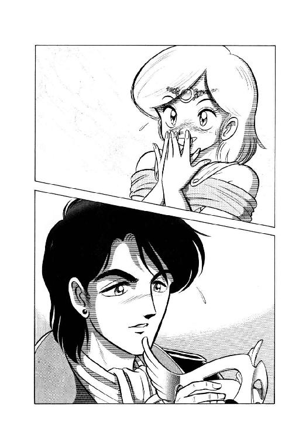
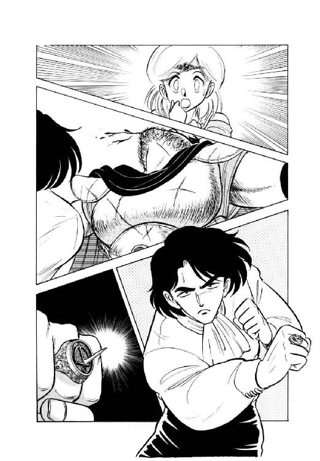
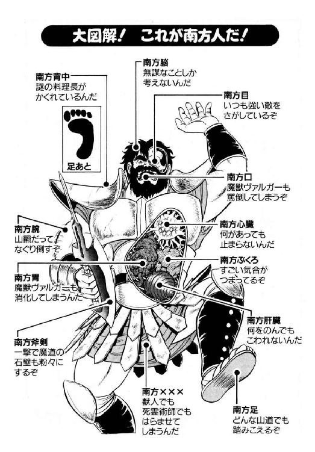

| 魔獣戦士ルナ・ヴァルガー＜６＞故郷 | |
| 秋津 透 | |
| (2014) | |
魔獣戦士ルナ・ヴァルガー
⑥故郷
秋津 透
本作品の全部または一部を無断で複製、転載、配信、送信したり、ホームページ上に転載することを禁止します。また、本作品の内容を無断で改変、改ざん等を行うことも禁止します。
本作品購入時にご承諾いただいた規約により、有償・無償にかかわらず本作品を第三者に譲渡することはできません。
本作品を示すサムネイルなどのイメージ画像は、再ダウンロード時に予告なく変更される場合があります。
本作品は縦書きでレイアウトされています。
また、ご覧になるリーディングシステムにより、表示の差が認められることがあります。
目 次
口絵・本文イラスト あろ ひろし

登場人物
ルナ・ド・リムズベル リムズベル公国の第二公女。魔獣と合体中。
魔獣ヴァルガー 伝説の大魔獣。無敵の威力を誇る。
ミル・ユード 貿易商兼帝国青年貴族。ルナと親しい。
ゼナ・ド・リムズベル リムズベル公国の世継公女。ルナの姉。
ヴィーナ・ド・リムズベル リムズベル公国の第三公女。ルナの妹
カーライル リムズベル公国の若くて剛胆な戦士長。
バルト 淵に棲む者（水棲人）の族長。
ジャック・ドレスデン 海賊商人一族の若者。仮面で顔を隠している。
ドン・デンガーン 海蛮人デンガーン氏族の頭領。
パ ム 淵に棲む者の少年。ゼナ公女になつく。
ティエラ 淵に棲む者の娘。パムの姉で族長の秘書官。
グラ・ゴルン ダンバス帝国の老将軍。沿海都市に駐留している。
ニコライ・ドレスデン 海賊商人一族から派遣された軍事顧問官。
プロローグ
「へーえ、こりゃまたずいぶん、見事な手際じゃない」
魔道都市の大門から外に出たルナ・ド・リムズベル公女は、半ば感心、半ば意外そうな調子の声を出した。以前は、それこそ街道が一本通っているだけで何にもなしの見通しだった斜面に、今は、まるで地面から生えて来たような感じで、石造りの住居がいくつも並んでいる。忙しそうに住居の周囲で立ち働く獣人族の女性たちを見やって、ルナは小さく首をかしげた。
「評議会が、大門の南側に居住区造る許可出したの、確か一昨日でしょ？ たった三日かそこらで、よくこれだけの作業ができたものねー」
「獣人族の人たちは、みんな優秀な働き手だからね」
傍の、ミル・ユードが、軽くうなずきながら応じる。
「吞みこみも早いし、体力もあるし、ここぞという作業では、獣化してでも頑張るし。だいたい、獣人族一人で工人三人から五人分の作業をこなせるんじゃないかな。ねえ、フィロスさん？」
「まあ、そうですねえ。でもまあ、例外もありますし」
砂鰐男のアル・フィロスが、穏やかな笑みをうかべて頭を搔いた。彼の視線の先に、石壁にもたれてぼーっと突っ立っている七色長舌蜥蜴男、ドルアーダ・ヴェグが居るのに気付き、青年も乙女も思わず微笑をうかべる。
「それに、石材は半分切り出してあったような状態でしたからね。これは、ずいぶん助かりましたよ」
「え？ あ、あれね」
ルナの微笑が、ちょっと照れたような苦笑に変わった。先日、グレゴール・クライシスの生屍人軍団と対決した時、彼女は勢い余ってと言うか、ほとんど八つ当たり気味に、都市の周囲の山肌を破壊叫で切り崩しまくっている。それが奇妙な所で役に立ち、恰好の石切り場として獣人族たちに利用されているわけだ。
「まあ、その、災い転じて、福となったって事で。とにかく、お役に立てて良かったわ」
「ええ、本当に」
ゆっくりと歩き出しながら、砂鰐男はいかにも人の良さそうな笑みをうかべてうなずく。
「そうそう。災い転じて福となるといえば、魔道都市の障壁が、消し飛んだまま直らなくなったのも、獣人族にとっては幸運でしたね。そうでなかったら、いくら大将が評議長閣下に影響力があると言ったって、ここまで好都合に談判がまとまる事は無かったんじゃないかと、思いますよ」
「それは確かに、そうですね」
おや、なかなか鋭い事をおっしゃる、とミル・ユードは砂鰐男の穏やかな顔を見直した。一方のルナは、更にくすぐったそうな表情になって、半ばうつむいている。何しろ、魔道都市をすっぽり覆っていた障壁を一撃のもとにぶっ飛ばしてしまったのも、他ならぬ彼女本人なのだ。それを有難がられては、ますます照れ臭いに違いない。
とはいえ魔道都市評議会はルナが壊した障壁を修復する見通しを立てられず、その代替に獣人戦士を採用する事にしたのである。獣人族は魔道都市の正規守備として雇われ、大門の南側に居住区を造る許可を得た。本人がいくら照れようが、獣人族にしてみりゃ魔獣戦士さまさまと言っていい。
「だけど、これだけ優秀な獣人族を配下に収める事ができたんだからな。幸運だったのは、魔道都市の方かも知れないぞ」
砂鰐男に続いてゆっくりと街道を歩きながら、ミル・ユードは言葉には出さずに呟いた。もしかするとこれを契機に、魔道都市の極端なまでに閉鎖的な性格が、多少は変化するかも知れない。戒律は、魔道士が外界と交流する事を、制限はしていても禁じてはいないのだから。
「ええっと、ああ、あそこの建物だ」
大門から少し進んだところで、砂鰐男が一軒の造りかけのような建物を見上げ、足を止めた。壁は組みあがっているようなのだが、まだ扉が付いていない。と、フィロスが入口をくぐるより先に、中からがっちりした体格の髭面の男が出て来る。
「あ、若旦那、それに公女殿下も、お呼び立てしちまってすいやせん」
「まあ、とにかく無事で何よりだった。何か、変わった事があったのかい？」
やや気遣わしげな口調で、青年は髭面の男、アル・ギルスに問いかけた。彼は本来、黒面洗熊の姿を持つ獣人族の一員なのだが、数年前から一族と離れ、貿易商としてのユード家の配下で仕事をしている。今では若旦那の信頼も厚く、ユード家の北方代理人として隊商を動かせるほどの人材だ。今回も、公女につき合って魔道都市に腰をすえてしまった若旦那に代わって、このギルスが沿海地方のザーネ市まで隊商を指揮して行ったのである。
「いえ、隊商に変わった事はありやせん。すべて予定通り、一荷の欠けも無しにザーネの代理人に引き渡しやした。もちろん、手形ももらってありやす」
にやりと笑って髭男が答え、ミル・ユードもほっとした表情になってうなずき返した。何と言っても、ここのところ南方帝国の大北征の影響で、沿海地方のあたりは目いっぱい物騒になっている。一応通行証の類はそろえてあるが、隊商が無事に通してもらえるなんて保証はどこにもない。
「そうか、それは何よりだった。いや、本当に御苦労様だったね」
「まあ、事件が無さすぎて退屈だった、なんて抜かしたら、ちょいと罰が当たるかも知れやせんがね。ちょうどうまい具合に、騒動を避けて通る事ができやして」
そう言って、髭男はまたにやりと笑った。青年が、ちょっと聞きとがめるような表情になって訊ねる。
「避けて通れたって事は、何か騒動があったんだね？」
「ええ、そりゃもう、騒動があったなんつー生易しい代物じゃありやせんぜ」
これが言いたかったんですよ、と言わんばかりに、ギルスは大仰に両腕を広げて見せた。
「もっとも騒動の大半は海上で起こったらしくてね、今いち内容がはっきりしねえんですが。とにかく騒動の中心が、公女様の故郷、リムズベル公国だってーのは、間違いねえ」
「えーっ!?」
ちょっと会話の圏外に出ていた感じだったルナが、完全に意表を突かれも紺色の目をまん丸く見開く。
「ど、ど、どーしてよっ!? 今、リムズベルは攻められにくいだけが唯一の長所の、陸の孤島になってんのよっー!? 魔獣がいるならとにかく、どーしてそんな場所が騒動の中心にならなきゃならない......あっ！」
ほとんど一気にそこまで言ってから、ルナはぎくっとしたような表情になって絶句する。確かに彼女は魔獣の力を使って、故郷を不便ではあるが難攻不落地に変えた。しかし、それはあくまで陸からの攻撃に対しての話で、海からの攻撃については、何の配慮もしていない。
「ね、あなた、今、騒動は海上で起こったって言ったわね？ もしかして、それって、帝国の艦隊がリムズベルを襲ったってこと？」
さすがにいささか蒼ざめて、ルナはギルスに震え声で問いかけた。だが、髭男が答えるより先に、ミル・ユードが強い調子で口を入れる。
「いや、帝国には艦隊はない。あそこは完全な内陸国だから、そもそも船で戦争するっていう思考法があるかどうか、怪しいもんだよ。沿海都市群を制圧して船は手に入れたかも知れないけど、帝国軍が船をまともに使えるとは思えないな」
「いや、若旦那、そいつはちょいと違いますぜ」
やや思わせぶりな感じでギルスが口をはさみ返し、ルナとミル・ユードは真剣そのものの表情で彼を見詰めた。ううっ、まともに話を聞いてもらえるってえのは、いいねえっ、とギルスは内心感動しながら言葉を続ける。
「確かに帝国の連中は、船にはうといし興味もねえ。だけど、そいつをいい事に、帝国軍が抑えた沿海都市群の船を全部いただいちまった不埒者がいたんでさあ。こう言やあ、若旦那、おわかりでしょう？」
「ドレスデンかっ！」
ミル・ユードが吐き出すような調子で叫んだ。その苦い顔を、ルナがきょとんとした表情で見上げる。
「ドレスデンって、あの、南方の海賊？」
「海賊、には違いないんだが、並の海賊じゃないんだ、ドレスデンは」
長身の青年は、呻くと唸るの中間ぐらいの声を出した。
「武力は諸侯、手腕は商人、そして根性は間違いなく盗賊。たちが悪いと言えば、これ以上たちの悪い集団もないな。下手すりゃ、狂的死霊術師や死の魔獣よりも度し難いかも知れない」
「な、な、何よ、それっ!?」
思わず金切声をあげるルナに向かって、ミル・ユードは頭痛か歯痛でもこらえているかのような、渋ったい表情で説明する。
「ドレスデン一族の連中は、グレゴール並みに倫理感覚がなくて、彼とは比べものにならないほど強欲なんだ。そーゆー奴らが、諸侯並みか、おそらくは上回るほどの武力を持ってる。特に艦隊の実力では、右に出る勢力は多分どこにもないだろう。沿海都市群が団結すればかろうじて対抗できたかも知れないけど、今や帝国に潰されちゃったからな」
そう言って、ミル・ユードは大きく肩をすくめた。
「あんまり信頼できない噂だけど、大北征そのものが、ドレスデンが帝国をそそのかして沿海都市群を潰すために起こした陰謀だっていう話もあるにはあったんだ。穿鑿しすぎだと思ってたんだが、こうなってみると、それが真相かも知れない」
「ちょ、ちょっと待って。そーすると、リムズベルを襲ったのは、帝国よりもっと性格の悪いドレスデン一族だって事っ!?」
ルナが再び、金切声で叫ぶ。
「冗談じゃないわ、こうしちゃ居られないっ！ すぐに故郷に戻って、海賊どもを蹴っ散らかしてくれるっ！」
「わっ、公女殿下、落ち着いてっ、落ち着いてっ！」
今に魔獣変身してすっ飛んで行きそうな公女の勢いに、ギルスが慌てて声を張り上げた。
「大丈夫、大丈夫ですよっ、公女殿下っ！ お里は無事ですっ、大丈夫っ！ あっしがこの目で見て来たんですからっ！」
「え？」
再びきょとんとした表情になって、ルナはギルスの顔を見やる。と、その頭の中で、魔獣が小さな声で呟いた。
「何ダ、無事ナノカ。詰マラン」
「何ですってえっ!?」
「へっ!?」
今度は、ギルスとミル・ユード、それにフィロスがきょとんとした顔になって、ルナを見やる。いっけない、言葉に出しちゃった、と彼女はちろりと舌を出した。
「いえね、魔獣の奴が頭の中で余計な事を口走ったもんだから。と、まあ、そんな事より、リムズベルは本当に無事なの？ 海賊に攻撃されたんじゃないの？」
「ええ、それが、あの、あっしにも詳しい事はわからねえんですよ。何しろ、騒動の中に隊商連れて突っ込んでくわけにも行きやせんしね。あっしがリムズベルに行ってみたのは、隊商を引き渡した帰路で、もうほとんど騒動が終わった後なんでさあ」
ちょっと弁解気味のギルスの説明に、ルナは小さく苦笑をうかべる。
「そんならそうと早く言ってよ。まあったく、思わせぶりっこな喋り方するから、本気であせっちゃったじゃない」
「へえ、どうも」
へこっと頭を下げた髭男に、今度は若旦那がいぶかしげな口調で訊ねた。
「しかし、いくら騒動が済んだ後だからって、ギルスが現地へ行って来て、詳しい事情がつかめないっていうのは、どういう状況だ？ リムズベルでは、民衆に緘口令でも命じてるのかい？」
「まさかあ」
ギルスより先に、ルナがあっけらかんと否定する。続いて、髭男も真面目な顔でうなずいた。
「ええ、緘口令とか、そういう状況じゃねえんです。それどころか、あっしはリムズベルの大公女殿下に、直接お話をうかがったんですがね。正直なとこ、そのお話のおかげで、ますます状況がわかんなくなっちまったんで」
「げっ!?」
今度は、ルナの表情がはっきりとわかるほどに強張ってひきつる。あまりにも激しい彼女の表情の変化を見て、さすがに気遣わしそうに青年が訊ねた。
「どうしたんだ、ルナ。顔色が悪いぞ」
「いえ、あたしは大丈夫。それより、ギルス、あなたゼナ姉さまの話を聞かされたわけ？」
ルナが、沈痛と言ってもいいぐらいの口調で訊ねる。ギルスは、重い溜息をまじえてうなずいた。
「へえ......」
「御苦労様だったわね......本当、気の毒に」
珍らしくも、しんみりとした表情をしてルナが呟く。そして、いったい何がどうなっているんだ、と言いたげなミル・ユードに向かって、にこっと笑ってみせた。
「ゼナ姉さまの説明を聞いちゃったら最後、誰でも必ず状況わかんなくなるのよね。まあ、でも、姉さまが長話してるだけの余裕があるってことは、一応、うちは安泰なんだと思うわ」
そう言うと、ルナは小首をかしげ、ごく小さい声で続ける。
「とは思うんだけど、やっぱりこれ、気になるなあ。ファラさんに頼んで、ちょこっと様子見に行かしてもらおうかしら......」
「あのー、公女殿下」
ギルスがいささか遠慮勝ちな感じで声をかけ、ルナは軽く眉を寄せた。
「なあに？」
「あの、実は、大公女殿下の姉上様から、お手紙をことづかって来てるんですが......」
何だか妙に申し訳なさそうなギルスの口調に、ルナの頰が再びひくっとひきつる。
「ゼナ姉さまの......手紙ぃ？」
「ええ、それがその、荷車に積んだ方がいいんじゃねえかっつーぐらいの量がありまして。まあ、面倒臭いから担いで来ちまいましたけど、巻紙が三十や四十じゃきかねえんじゃねえかな。で、その、せっかく持って来たんだから、あの、無理にとは言いやせんけど、目を通すだけは通していただけやせんかね？」
「無理よ。それ、完璧な無理よ」
上目遣いにこちらを窺う髭男に向かって、ルナは早くも疲れ果てたような声で答えた。
「あなたの苦労はわかるけど、それだけは無理。駄目。絶対パス。リムズベルまで、手紙、突っ返して来いってんならやってもいいけど、読むのだけは、何がどうあっても勘弁して」
「そうですか。まあ、やっぱり、そうでしょうねえ」
力なく苦笑して、ギルスがうなずく。と、ミル・ユードが不意に、軽い調子で口を入れた。
「ルナ、その、姉上の手紙っていうの、僕が見せてもらってもいいかな？」
「あなた、正気？」
完全にあきれ果てた声で、ルナが訊ね返す。
「言っても実感ないとは思うけど、ゼナ姉さまの文章ってのは、尋常じゃないのよ。しかもそれが、巻紙に三十だか四十だかあるって言うじゃない。悪いことは言わない、やめた方がいいわ。絶対、急性中毒するから」
「いや、僕だって、全部隅々まで読むつもりはないよ」
知らない者の強味と言うべきか、ミル・ユードは笑って答えた。
「ただ、うまく見当がつけられれば、リムズベルで何が起こったのか、知る事もできるんじゃないかな。とにかくまあ、やってみてもいいだろう？」
「やめた方がいいと思うけどなあ。まあ、どうしてもって言うなら、気の済むようにしてみれば」
まったく、この人は好奇心が強いんだから、とルナは小さく肩をすくめる。
「でも、頭が痛くなったり、気分悪くなったりしたら、絶対我慢しちゃ駄目よ。すぐに読むの止めて、巻物を放り出してね。もし動けないようだったら、叫んでもらえば助けに行くわ」
「おいおい、少し大仰じゃないのか。別に、古代の禁断魔法書を読もうっていうんじゃないんだけどな」
苦笑して、青年は扉のない建物に入って行った。似たよーなもんだわ、と小さく呟いたルナに、ギルスが怖る怖る訊ねる。
「あのー、姉上様のお手紙ってのは、その、あの方が喋るのと、同じ調子で書いてあるんですかね？ いや、まさかとは思うんですが......」
「もっと悪いわ」
ルナがぼそっと答え、髭男の顔面からさーっと血の気がひいた。
「悪いって、その、あの......」
「ゼナ姉さまはね、普段はあれで、ごくざっくばらんに、日常的に喋ってるつもりなのよ。それが文章になると、きちんとした形式と定型を守り、粗相のないように万全の注意を払い、清く正しく美しく、気品と気合と気迫をこめまくって書いちゃうのよねー。その威力は、一撃良く山羆をも斃そうってぐらいのもんよ、冗談抜きで」
そう言ってルナは、彼女にしては異様なぐらい無表情な顔でギルスを見やる。
「どお？ 想像できる？」
「ちょ、ちょっと、あっしには......」
思わず口ごもるギルスに向かって、ルナは溜息まじりの苦笑をうかべた。と、その時、建物の中から、ミル・ユードのかなり切羽詰まった叫び声があがる。
「ルナッ！ 済まないっ、何とかしてくれーっ！」
「ほらっ、言わないこっちゃないんだからっ！」
わずかに眉を寄せながらも、ルナは大急ぎで建物の中に走り込んだ。残ったギルスとフィロスの二人は、思わず顔を見合わせる。
「何だか知らないけど、とにかく、公女殿下の姉君ってのは、凄い女性みたいだね」
「......フィロス兄貴は、お目にかかってみたいと思うかい？」
弟の問いに、砂鰐男は即座にぶんぶんと首を振った。
「いや、遠慮しとくよ」
第一章 出現・淵に棲む者
１
「だめーっ！ だめだめだめだめ絶対にだめーっ！ 誰が何と言おうとだめなもんはだめーっ！ だめだめだめだめだめったらだめーっ！」
リムズベル公国第三公女ヴィーナは、ぶんぶんぶんと激しく首を振りながら、ありったけの声を張り上げて叫びまくった。叫びまくられた第一公女ゼナは、きょとんとした表情で、七つ歳下の妹公女を見やる。
「あら、駄目なのですか、ヴィーナ？」
「あったり前でしょっ!!」
ヴィーナ公女は、姉の執務机にぱあん、と両方の平手を叩きつけ、逆上寸前の声で叫んだ。
「いいっ、ゼナ姉さまっ！ 今、ザーネから南の全地域は、ダンバス帝国に占領されてんのよっ！ でもって、リムズベルは三日前まで、その帝国軍と正面きって戦争してたのっ。そんな状況だってのに、公女に限らずリムズベルの人間が、のこのこザーネやログリアンに出かけてったら、これ幸いと捕えられて、人質にされるか血祭りに殺されちゃうかに決まってんじゃないのっ！ あたしまだまだ、死にたくなんかないんだからっ！」
「まあ、そうですか。それは気がつきませんでしたわ」
腹が立つぐらい優雅な動作で、ゼナ公女はゆっくりとうなずく。そして、軽く小首をかしげると、妹公女に向かってにっこりと笑った。次姉のように悪寒が走るとまでは行かないが、ヴィーナの小柄な全身に、どっと疲労感がのしかかる。
「まあ、とにかくそういう理由だから、あたしをザーネに使者に出そうなんて、突拍子もない事は考えないでね、ゼナ姉さま」
「そうですわね。あなたの言う事もわかりますわ。でもねえ、ヴィーナ。リムズベルで新しく大公が即位する時に、大公家の人間が近隣の諸国にお知らせするため使者に立つというのは、長い伝統を持つ大切なしきたりなのですよ。伝説によれば三百二十三年前、大公フェルディナンド様が即位された時、王弟ライオネル公子は、当時交戦中だったザーネ市に単騎使者として向かい、ザーネ侯以下重臣たちも、公子の礼節に感じ入って戦いを停めて丁重に迎えた、という故事もあることですしね」
ゆったりとした口調でそう言うと、ゼナ公女は再び天使か女神を思わせる、無邪気で優雅な微笑をうかべた。
「そういうわけだから、ヴィーナ、気がすすまないのはわかりますけれど、そこを何とか引き受けてもらえませんかしら？」
「だめだめだめだめーっ、だめったらだめーっ！」
当然ながら、少女は即座に首を横に振る。
「冗談じゃないわよっ。ザーネ侯ならとにかく、帝国の蛮人が礼節なんかに感動するわけないじゃないっ！」
「あら、そう決めつけるのはよろしくありませんわよ、ヴィーナ。帝国人といっても、鬼でもなければ蛇でもなし、同じ人間なのですからね。礼節に感じ入る心を持っていないなどと、試してもみないで断言するのは、それこそ礼を失する事になってしまいますわ」
美しい眉をごくわずかに寄せ、ゼナ公女はやんわりと妹をたしなめた。ヴィーナは、もはや反発するのも阿呆らしく、げんなりした表情で溜息をつく。
「まあねー。だけど、帝国人が礼節を知る連中かどうか、あたしが身を以て試してみるほどの必要もないんじゃない？」
「あなたがそう思うのならば、仕方ありませんわね。嫌がるものを、無理に行かせるわけにもいきませんし」
呟きながら、ゼナ公女も優雅に小さく溜息をついた。
「使者を出せなかった先例が、まったく無いわけでもありませんしね。残念ですけれども、この件につきましては、とりあえず見送りといたしましょう。でも、ヴィーナ。もし引き受けてくれる気になりましたら、すぐにでもわたくしに申し出て下さいね」
「はい。でもあたし、絶対そんな気にはならないから、期待はしないでちょうだい」
そう言いながらも、少女はほっと安堵の息をつく。頭がくらくらするほど感覚がずれてはいるものの、ゼナ姉さまは、自分の考えを無理に他人に押しつけるような行為は、まず絶対にしない。少なくとも、その謙虚さだけは大したものだ、とヴィーナは皮肉ではなく思う。もっともゼナ姉さまが、あのずれまくった感覚を強引に他人に押しつけるような性格だったら、もうとっくに公国は潰滅していたかも知れない。
と、その時、誰かが執務室の扉をノックした。続いて、張りのある男性の声が扉越しに聞こえる。
「戦士長カーライル、お召しにより参上いたしました。それから、エルミ殿が一緒です」
「どうぞ、お入りなさい」
ゼナ公女の柔らかい声に応じて扉が開き、長身の若い戦士長と、誠実そうな若い侍女が入って来た。と、部屋に入るが早いか、侍女が緊張した声で、公女に向かって言上する。
「ゼナ姫さま、何か変事でもあったのでしょうか？ 刻限になっても姫さまがいらっしゃらないので、大公さまが御心配になっておられますよ。もしも支障がありませんようでしたら、お急ぎになられた方が良いかと思いますけれども」
「まあ、もうそんな刻限ですの？」
あくまで優雅に驚きの表情をつくると、ゼナ公女は彼女にしては素早い動作で席を立った。
「エルミ。お祖父さまに、すぐ参りますとお伝えして下さいな。御心配をかけましたけれども、別に何が起きたわけでもなく、わたくしがうっかり刻限を忘れてしまったのです、という事でね」
「はい、承知いたしました」
公女たちの祖父、リムズベル大公ヴォルフから最も信頼されている侍女は、素早く一礼して執務室を出る。残った若い戦士長は、持ち前の不敵な表情で、ゼナ公女に訊ねた。
「ゼナ姫さま、私の方はどうなっているのでしょうか？」
「ええ、せっかく来てもらっておいて悪いのですけれど、予定していた任務が取り消しになってしまいましたの」
世継公女は本当に済まなさそうに、家臣に向かって頭を下げる。他の国では、そうそう見られる光景ではない。
「わたくしは、お祖父さまから秘伝承の口伝をいただきに行かねばなりませんので、戦士長は部署に戻って下さいな。ああ、それにヴィーナ、あなたも自室に戻って結構ですわ」
そう言ってゼナ公女は、優雅ににっこりと微笑した。
この日は、帝国軍がリムズベルから退却して三日目にあたる。ちょうどこの日、エリオンでは彼女たちの姉妹ルナ・ド・リムズベルが帝国軍を追い散らしていたわけだが、現時点では、故郷の人々は誰もその事を知らない。
２
「ほんとにもーっ、あったまきちゃうっ！」
姉公女の執務室から出るが早いか、ヴィーナ公女はほとんど叩きつけるような口調で叫んだ。傍で、カーライル戦士長がいかにもおかしそうに笑う。
「即位の使者を頼まれたんですね。お断わりしたんでしょう？」
「あったり前よっ！」
少女は、勢いよくうなずいた。
「今の状況でザーネに行くなんて、それこそ死にに行くようなもんじゃないっ？ あたし、まだまだ死にたくないもんっ！」
「そりゃそうでしょうね」
若い戦士長は、にやにや笑いながらうなずき返す。見ようによっては不遜な態度だが、不思議に嫌味を感じさせない。
カーライルはリムズベルの戦士長では最年少の二十一歳、剣の技術もさる事ながら、機敏でしかも不敵な人柄で知られている。第二公女の猛将ルナに重用され、ほとんど直属のような形で仕えていたが、その猛将に対しても遠慮なく意見を言っていた。帝国軍に城門を破られた時に、ルナに向かって『リムズベルもこれまでですか』と訊ねた挿話は、早くも伝説と化している。
「まあ、ヴィーナ様が断わってくれたんで助かりました。ゼナ様は、俺を護衛に付ける気だったみたいですから」
「まったく、冗談じゃないわっ」
ぷうっと頰をふくらませ、少女は心底腹立たしそうに唸った。
「大公位に即位してからも、ゼナ姉さま、あの調子でやってくつもりなのかしら。あーっ、頭痛いっ！」
「ゼナ様があの調子を変えられるって事は、まず無いでしょう。でも、まあ、いいんじゃありませんか」
そう言って、長身の戦士長は気楽そうな表情で少女を見やる。
「俺の親父は、ログリアンのアヴェス侯に仕えてたんですがね。沿海都市の欲ぼけ貴族どもに比べりゃ、ゼナ様には冗談抜きで王者の風格がありますよ。ものに動じないし、他人の言うことよく聴くし、何てったって身に備わった気品があるでしょう」
「そおかしら？」
やや不服そうな目つきで、ヴィーナはカーライルの顔を見上げた。
「戦士長、あなた、不安にならない？ 秘伝承の口伝が完了しちゃったら、即座にゼナ姉さまがリムズベル大公よ。あなたたちの君主になっちゃうのよっ」
「今でも、実質的には同じでしょう」
カーライルは、軽く笑って少女をいなす。
「大丈夫、大丈夫。ゼナ様なら、立派な君主になりますよ。あなたの姉上を、信じてあげなさいって」
「もうっ、吞気なんだからあっ」
腹立たしそうにそう言うと、ヴィーナ公女は再び頰をぷうっとふくらませた。戦士長は笑いをうかべたまま小さく肩をすくめ、内城から大広間に抜ける階段を降りかかる。
と、その瞬間、甲高い女性の絶叫が二人の耳にとびこんで来た。少女は一瞬立ちすくんだが、さすがに戦士長は反応が早い。
「地下かっ！」
別人のように鋭く表情を引き締め、若い戦士長は飛ぶような速度で階段を駆け降りる。一呼吸遅れて、ヴィーナも慌てて彼に続いた。帝国との戦い以来リムズベルは臨戦態勢のままなので、少女も甲冑こそ着ていないが、しっかり細剣を腰に下げている。まして戦士長は、当然ながらほとんど完全武装姿だ。ほとんど、と言うのは彼が兜をかぶらず、代用に銀色の頭部防護輪を使っているからである。
「戦士長、敵が侵入したのかしらっ!?」
「帝国軍が穴でも掘って来たんじゃなけりゃ、違うでしょう」
訊ねる公女に、戦士長は振り返らずに答えた。
「敵だとすると、内応でも出たか......しかし、地下ってのはどういう事態だ？」
大広間に抜けず、そのまま地下の内蔵に降りながら、カーライルは小声で呟く。現在、さほど多くもない公国の戦士は、ほとんど山門の外の山地沿いに出ている。だから奇襲を受ける危険は少ないが、城内には負傷兵ぐらいしか居ないので、内応者が出たら大事になってしまう。しかしそれなら、内城の上層の中枢部が狙われるはずで、地下蔵で悲鳴というのは、どうも判断がつけ難い。
「侍女が牙鼠でも踏んづけたのかも知れないが......しかし、それにしちゃ悲鳴が切羽詰まってたな」
それに、絶叫が一回だけってのも、気になる。無駄足になってくれりゃ、むしろめっけもんだ、と呟きながら戦士長は階段を降りきった。地下蔵の扉は大きく開いており、その傍では小さな篝火が燃えている。少なくとも、蔵の中に誰かが居るのは確からしい。
「ヴィーナ様は、入口でお待ち下さい」
脇に積んである松明の一つを篝火に突っ込みながら、戦士長は追いついて来た公女に告げた。
「何か騒ぎが起きたら、すぐ地上へ行って応援を呼んで下さい。大広間か山門へ行けば、誰か戦士がいるはずです。決して、一人で助けに入ろうなんて思わないで下さいよ」
カーライルの指示に、少女はこっくりとうなずく。次姉と違って、彼女は戦士としての訓練などほとんど受けていない。
「気をつけてね」
「ええ、気をつけます」
心配そうな少女の声に送られ、戦士長は左手に松明を持ち、地下蔵の中に踏みこんだ。
「しかしまあ、自分たちの城内とはいえ、あんまり気色の良くない区域ってのはあるもんだな」
石造りの廊下を松明で照らし、両側にずらりと並んだ小扉を見回しながら、カーライルは声には出さずに呟く。内城の地下にある内蔵は、古記録や儀式の道具などが主として収められており、平時はほとんど使われない。これは噂に過ぎないが、内蔵の奥には古代から伝わる魔道具や巻物、今では用途も知れない奇妙な道具類があるとも言われている。もちろん小扉のほとんどには錠がかかっていて、勝手に開ける事はできない。
「むっ？」
二回ほど廊下を曲がった所で、戦士長はぴたりと足を止めた。前方の小扉の一つが開いていて、そこから光が洩れている。彼は素早く自分の松明を踏み消すと、鎧の背中側から短剣を抜き、忍び足で開いた小扉に歩み寄った。そして、小扉を盾にとるような体勢で、慎重に向こう側をのぞきこむ。しかし、戦士長の目に入ったものは、石床の上で半ば消えかかっている一本の松明と、その傍に転がっている履物片方だけだった。
それでも彼は油断なく部屋の中の気配を探り、何も居ないらしいと見きわめた上で、素早く室内へすべり込む。そして松明を拾って周囲を見回したが、やっぱり何も見当たらない。正面と左側の壁は棚で占められ、かなりの量の巻紙が整然と並んでいる。右側は、何のへんてつもない石組みの壁だ。
「うーむ......」
小さく唸って、カーライルは履物を拾い上げる。侍女たちが好んで履く、軽くて華奢な革製の品物だ。
「......普通に考えると、こうなるな。侍女が一人、何かを取りに内蔵に入った。そして、松明を持って、この部屋まで来た。そこで何かが起こり、彼女は悲鳴を一声と履物片方だけ残して、消えてしまった。うん、完璧な推理だな」
もっとも、この部屋で何が起こったのかわからないんじゃ、完璧に無意味な推理って事になる。戦士長は小さく首を振り、松明と履物を持って静かに部屋を出て行った。
と、それから間もなく、真っ暗闇となった部屋の中で、ごとりと重い音が響く。続いて、囁くように小さい、しかしどこか弾んだ声があがる。
「行っちゃったよっ」
「よし、開けろ」
別の声が低く応じ、がらがらと機巧の動く音が響いた。同時に、入口の右側の壁がゆっくりとずれ、薄ぼんやりとした光が部屋の中に射しこむ。そして、その光を背にして、壁の外側から三人の人影が姿を現わした。光が淡いためよくはわからないが、三人のうち一人だけが目立って小柄のように見える。と、その小柄な人物が、やや甲高い、陽気な声を出した。
「さあて、どおすんのっ？ 予定通り、お城の中を調べて回るのかい？」
「そうもいくまい」
大柄な二人のうちの片方が、対照的に沈鬱な声で答える。
「今の男は去って行ったようだが、すぐに人数を連れて戻って来るだろう。うかつにうろうろしては、危険だ」
「しかしそれでは、偵察の任務が果たせん」
もう一人の大柄な人物が、腹立たしそうな調子で口をはさんだ。
「族長さまに、何と釈明する気だ？」
「他人事みたいな口を利くなっ」
言われた方も、むっとした声で言い返す。
「だいたいお主が、軽率に隠し扉を開くから、こんな厄介事になったんだろうがっ」
「止めもせんかったくせに、偉そうな口を叩くな。女が叫び声をあげるまで、木偶のように突っ立っていたのは、どこのどいつだ」
「何だとおっ！」
今にも殴りあいかねない勢いで、大柄な二人が睨み合った。そこへ、残りの一人がちょっとうんざりしたように口をはさむ。
「ビウスもラギも、喧嘩すんなら止めないけどさあ、あんまりもたもたしてっと、お城の人間が押しかけて来ちゃうよっ。とりあえず、これからどーすっかだけ、決めてくんない？」
「その必要はない」
不意に小扉が開き、長身の戦士長がやや皮肉っぽい調子の声をかけた。
「とにかく、うちの侍女を返してもらおう。何か言いたい事があれば、それから聞くよ」
「おのれっ！」
大柄な男の一人が、素早い動きでカーライルに飛びかかる。しかし戦士長は余裕をもってかわし、右手の短剣のみねで相手の首筋を打った。この連中が何者かわからない以上、できれば殺さずに済めば越した事はない。
実際、松明の光で見る彼ら三人は、本当に何者とも見当がつかない、それどころか、人間かどうかもちょっと怪しい風体をしている。基本的には、腰のあたりを覆っただけの大人の男二人、少年一人なのだが、その肌の感じがほとんど魚なのだ。背中側は暗い青緑色、顔から腹にかけては青みがかった白色で、濡れたような光沢を帯びている。彫りの深い顔にかかった髪は、海藻のような鮮やかな緑色だ。そして、飛びかかってきた男の脇腹には、鮫の鰓のような数条の裂け目が、斜方向に開いている。
「水棲人か？」
半ば意識せずに呟きながら、カーライルは二人目の男に向かった。と、同時に小柄な少年が、意外なほどの機敏さで、戦士長の懐に跳び込む。戦士長は肘を使って振り払おうとしたが、少年は委細かまわず相手の腰にしがみつく。華奢な外見からは、思いもよらない怪力だ。
「このっ！」
カーライルは松明を放り出し、左腕で少年の体をすくい上げるようにして振りほどく。強引に投げ出され、少年はしたたかに尻餅をついたが、その間にもう一人の男が、素早く背を向けて隠し扉をくぐった。
「待てっ！」
鋭く叫んで、カーライルもずれた壁の隙間を抜ける。だが、そこで彼の足はぴたりと止まった。隠し扉の向こうは予想以上に広い空間になっていて、中央に四角い池が暗い水面を見せている。その水際に短衣姿の若い女が横たわり、彼女の頭の側あたりに水棲人の男が片膝をついているのが、戦士長の目に入った。光苔でも張ってあるのか、周囲は淡い光に満ち、その中で水棲人の青黒い背中がいかにも凶々しい。
「こんな真似は、あまりやりたくないが」
男は、カーライルを振り返って、案外穏やかな声をかける。
「自衛のためだ。それ以上近づいたら、この女を絞め殺す。その場に止まって、剣を捨ててくれ」
「勝手な言いぐさだな」
若い戦士長は、太い眉をぐいと寄せた。
「この期に及んで、自衛の何のとかっこつけるな。どうせこっちは、言う通りにするしかないんだ」
腹立たしそうに唸ると、カーライル戦士長は短剣を放り出し、長剣も外してぽいっと捨てる。
「さあ、これで文句はないだろう」
「へえっ、思い切り、いーんだあ」
腰をさすりながら隠し扉をくぐって来た水棲人の少年が、感心したような声を出した。
３
「レギオン公？」
戦士長は、いささかあっけに取られた表情で訊ね返した。
「誰だい、そりゃ？」
「とぼけるなっ！」
彼に首筋を打たれた方の水棲人が、苛立たしげな口調で決めつける。
「貴様がたとえ公国の人間でないにせよ、巨竜神獣の命令者にして我ら淵に棲む者の支配者、竜神公レギオン殿下の名を知らぬわけがあるまいっ！」
「わけがあるまいって言ったって、現に知らんもんは仕方なかろう」
いささか憮然として、戦士長は言い返す。実際、先代の魔獣頭脳体であるレギオン・ド・リムズベルの名は、大公家の秘伝承以外には、いかなる記録にも残されていない。別に大公家の一員でもない彼が、知っている方がどうかしている。しかし水棲人はそうは思わなかったらしく、いきなり平手で相手の頰をばしりっと張った。
「おお、いて......凄い力だね」
「真剣に答えぬのなら、次はこの程度では済まぬぞ」
やや落ち窪んだ青緑色の目をぎらりと光らせ、水棲人はカーライルの顔をにらみすえる。戦士長は少なからずうんざりした表情で、小さく肩をすくめた。
「これでも一応、真剣に答えてるつもりなんだけどな」
「ならば、リムズベルの戦士長ともあろう者が、レギオン公を知らぬなどと呆けた言を抜かすでないっ！」
相手の怒声に、戦士長はうんざりとした表情のまま首を振る。
「知らんもんは知らんとしか、言いようは無いと思うんだがね。違うかな？」
「このっ、貴様あっ......」
激昂した水棲人が拳を振り上げた時、もう一人の、比較的温和な顔をした大人の水棲人が相棒の腕を把んで止めた。
「落ち着け、ラギ。この男、本当に竜神公の事を知らんようだぞ」
「何を、馬鹿な」
不満そうな表情の相棒の腕を把んだまま、その水棲人は戦士長の方に目を向ける。
「訊ねたい。現在、リムズベルに我らが神獣はおわしますのか？」
「ヴァルガー？」
カーライルは、わずかに眉を寄せて首をかしげた。魔獣の名は、頭脳体の名よりも更に一層厳重な禁忌として、秘伝承の中に封じ込められている。それが、先日公国を救ったルナ公女の巨大二足直立竜の本名だなんて事を、彼が知っているわけがない。
「それはいったい、何なんだ？」
「やはり、知らんか」
人間の反問に、水棲人は軽く溜息をつきながらうなずく。
「これは、予想以上に時代が移っているようだな。まあ、武器も衣類もほとんど腐り果てていたのだから、一年や二年ではあるまいとは思っていたが」
呟いて、水棲人は緑色の眉を寄せる。
「百年か......もしかすると、それ以上過ぎているな」
「百年！」
少年が、素直に驚いた声で叫んだ。
「オレたち、百年も眠ってたわけ？ それじゃオレ、百十一歳になっちゃってるかあ。あーあ、一気にすげー老爺だな、あははーっ」
「そんな事は、どうでも良い」
もう一人の、ラギと呼ばれた水棲人が、じろりと戦士長を見すえて唸った。
「肝心なのは、こ奴らリムズベルの人間どもが、竜神公とも神獣とも縁がない連中だ、という事だろう。リムズベルの人間は竜神公の配下ゆえ、できるだけ傷つけないようにせよという族長さまの戒め、これではもはや意味が無いとは思わぬか、ビウス？」
「それは族長さまが決める事だ」
相棒の好戦的な表情を見やって、ビウスと呼ばれた水棲人は首を振る。
「我々だけの判断で、勝手に騒動を起こしてはなるまい」
「しかし、それなら捕虜をどうするつもりだ」
やや皮肉っぽい口調で、ラギが訊ねた。
「竜神公の配下でないなら、遅かれ早かれ人間どもとは対決する事になるぞ。それを考えれば、捕虜を解き放つ事はできまい。水塞に連行するのも、余りにも厄介だ」
「殺せ、と言うのか？」
ビウスが、苦い表情で訊ね返す。相手は即座にうなずいた。
「女はとにかく、男は殺せ。闘う前に、正体を明かす馬鹿はなかろう」
「まだ、戦争と決まったわけじゃない」
ぼそっと言い返したものの、ビウスは苦い表情のまま考え込む。こいつはちょっと窮地かな、とカーライルは半分他人事のような気分で思った。まあ、あっさり殺されてやるつもりは毛頭ないが、さて、いったいどう反撃しようか。手首を縛られ、長剣も短剣も取られてしまっているが、彼にとってはそんな事は問題ではない。難しいのは、向こうで気絶している侍女を再び人質に取られないよう行動しなくてはならない、という点だろう。戦士長は三人の水棲人の体越しに、侍女までの距離を目測する。
と、その時、侍女がかなり唐突な感じで、がばっと上体を起こした。大きな茶色の目できょろきょろっと周囲を見回すと、いきなり満身の力を籠めて凄まじい悲鳴をあげる。
「きゃーっ、きゃーっきゃーっ、きゃああああああ―――っ!!」
「わっ、何だ何だ何だっ!?」
ほとんど人間離れした音量の絶叫に、水棲人たちは驚いて振り返った。ラギが険しい表情で、侍女を黙らせようと走り寄る。その瞬間、戦士長は素早く行動を起こした。長身を跳ね上げて背を見せた水棲人に躍りかかると同時に、手首の縛めを奇術のようにするりと抜く。体当たりをかけられたラギが前のめりになったところへ、強烈な肘打ちを後頭部に叩きこむ。
「ぐうっ！」
呻き声をあげ、水棲人がうつ伏せに倒れる。戦士長は体を反転させ、侍女を背にする体勢で水棲人たちと向き合った。即座に少年が跳びかかって来るところへ、狙い澄ました迎え撃ちの蹴りを叩きこむ。水棲人の少年は文字通り吹っ飛んだが、同時に残った一人が奪った短剣を振りかざして斬りかかる。戦士長はあえて避けず、左腕でこの一撃を受けた。刃が甲猪革の籠手を裂いて、ざくっと喰いこむ。
「もっと鈍刀を使っときゃ良かったな」
顔を顰めて唸りながら、戦士長は痛烈な右正拳を相手の顔面に叩きつけた。短剣を握ったまま水棲人は後方へ倒れ、カーライルの左上腕からたらたらと血が流れ出す。
「こ、このおっ......」
呻きながらラギが起きあがり、戦士長から奪った長剣を抜く。水棲人の馬鹿力で長剣を振り回されたら、今度は腕で受けるわけにはいかない。受けたところで、籠手もろとも腕をずっぱりと落とされる。カーライルは、すでに悲鳴を止めて息を吞んでいるらしい背後の侍女に向かって囁いた。
「動けるか？」
「は、はい、戦士長」
「ならば、向こうの壁のところへ行って、隠し扉を開けてくれ。仕掛けがあるはずだ」
長剣を構える敵を見すえながら、戦士長は低い声で指示する。
「俺が援護する。こっちの事は構うな」
「はいっ」
緊張した声が返ってくるのと同時に、背後の気配がたたたたっと動いた。水棲人の、青緑色の瞳がぎらりと光る。
「行かせるかあっ！」
「行かせるっ！」
長剣を振りかざして侍女に迫るラギの前に、カーライルが素早く跳び込んだ。馬鹿者め、と言わんばかりの表情で、水棲人は目の前の敵に向かって鋭く斬りつける。こいつが避ければ、そのまま侍女に追いすがって捕えてしまえばいい。避けなければ、それで決着だ。
「死ねいっ！」
叫びざま、水棲人は力まかせに長剣を振りおろす。その凄まじい一撃を、戦士長は避けるそぶりさえ見せない。殺った、とラギが思った瞬間、ぎいんっと鈍い金属音がして、長剣はがっちりと受け止められる。
「な、何いっ!?」
ラギは思わず目を見張った。カーライルは、頭部防護輪を外して右手に持ち、輪をかざして長剣の刃を受け止めたのである。
「うぬ、ぬおっ！ うおっ！ うおおっ！」
「はっ、とっ、はっ！ はっ！」
ぎんっ、ぎんっ、ぎいんつ、と刃と輪がぶつかり合う。水棲人の攻撃もなかなか鋭かったが、戦士長の防御は更にその上を行った。たて続けに繰り出す猛撃をことごとく受けまくられ、ラギの表情に口惜しさと怒り、そして幾分かの感嘆の色が現われる。

しかし、戦士長の方は、この男にしてはかなり渋ったい表情になっていた。敵の向こうで、もう一人の敵が立ち上がるのが視界に入ったのである。いっくら彼でも、この状況で二対一はきつい。ラギの長剣とビウスの短剣、元は自分の所有物だった二つの武器に油断なく視線を配りながら、戦士長は小声で、しかし鋭く訊ねた。
「おいっ、まだかっ？ まだ隠し扉は開かないのかっ？」
「すいません、もう少し......あっ、これねっ！」
背後ではずんだ声があがり、がらがらと機巧の動く音が続く。同時に、聞き覚えのある少女っぽい声が、カーライルの耳にとびこんできた。
「戦士長！」
「やあ、ヴィーナ様」
救援は呼んであるんでしょうね、と戦士長が訊ねるより早く、長剣を抜き払った戦士が三人、彼の両脇から走り出る。今度は水棲人たちが渋ったい表情になったかと思うと、一目散に後退してざぶんと水面に跳び込む。追いかかった戦士たちを、戦士長は鋭い口調で止めた。
「よせっ！ 敵は水棲人だ。水の中で闘ったら、人間なんぞいちころだぞっ！」
「水棲人、ですか!?」
戦士たちが、驚愕の表情になって振り返る。と、その中の一人、少女と言っていいぐらいの年齢の女戦士が、はっとした声で叫んだ。
「戦士長、負傷なさったんですかっ!?」
「なに、軽傷だよ」
事もなげに言うと、戦士長は頭部防護輪をかぶり直し、やや思案げに眉を寄せて左手の壁ぎわを見やる。そこには、彼の蹴りをまともに喰らった水棲人の少年が、目を回したままひっくりがえっていた。
４
「確かに水棲人は、淵に棲む者と称したのじゃな？」
老大公の問いに、カーライル戦士長はわずかに首をかしげてから改めてうなずいた。
「確かです」
「うーむ......」
白い眉を寄せ、老大公は難しい表情で唸る。その顔を見上げ、ヴィーナ公女が訊ねた。
「お祖父さま、何か心当たり、あります？」
少女の声には、かなりの期待が籠もっている。戦士長の報告によれば、水棲人は魔獣ヴァルガーやレギオン公と何らかの関係があるらしい。となれば、古代の秘伝承を受け継いでいる大公殿下に訊けば、何か役に立つ情報を教えていただけるんじゃなかろうか。そう考えて、ヴィーナ公女は戦士長といっしょにヴォルフ大公の居室へ参上したのである。そして、彼女の期待は的外れではなかった。
「淵に棲む者については、秘伝承にある。魔獣を崇める種族の一つで、レギオン公の支配下にあった者たちじゃ」
「イーク・ヴァルガリオン？」
聞き慣れない単語に、ヴィーナは首をかしげて訊ねる。老大公はうなずいて、説明した。
「太古、暗黒魔王が魔獣ヴァルガーを創造した際、同時に魔獣に従う異形の種族をも生み出した。これが、魔獣を崇める種族で、秘伝承には淵に棲む者、獣に変じる者、影を走る者、鉄肌を持つ者などが記されておる。大半は、レギオン公が魔獣の力で暗黒魔王を討った時に、ともに死滅したそうじゃがな。ただ淵に棲む者はレギオン公の配下にあったので、人間とともに暗黒魔王と戦ったとある」
「へーえ、それじゃ淵に棲む者ってのは人間の味方なのねっ」
少女は思わず、はずんだ声を出す。しかし、老大公は厳しい表情で首を振った。
「いや、淵に棲む者も暗黒魔王に創られた種族、その本性はあくまで邪悪とされておる。ただ単に自分たちの支配者たるレギオン公が人間に協力せよと命じたゆえ、命令に従ったまでの事じゃ。実際、レギオン公は自分自身を封じ込めるにあたって、淵に棲む者が人間を害する事を怖れ、自分もろとも封印してしまった、と秘伝承にある」
そう言って、ヴォルフ大公は白い眉をぐいっと顰める。
「不可侵の魔獣はとにかく、人間並みの寿命しか持たぬ淵に棲む者は、封印されている間に滅び果てているものとばかり思っておったが。しかし、カーライルの報告を聞くと、奴らは単に眠っていただけのようじゃな。魔獣の封印が解けたため、目覚めて動き出したという訳か」
「なるほど、了解しました」
カーライル戦士長が、やや無雑作にうなずいた。
「で、大公さまは戦闘になるとの御判断なのですか？」
「できれば、避けたいのう」
老大公は、唸ると呟くの中間ぐらいの声で答える。
「秘伝承によれば、淵に棲む者は強力で容赦のない戦士ぞろい、特に水の中では敵無しだそうじゃ。帝国軍が再び寄せて来るやも知れぬ時に、そのような敵と戦うのは避けた方が良いに決まっておる」
そう言うと、老大公は言葉を切って、公女と戦士長を見すえた。その視線をぴたっと受け止め、カーライルがさらりと応じる。
「しかし、避けられますかね？」
「問題は、そこじゃな」
老大公は、小さく溜息をつく。
「淵に棲む者に命令を下せる者は、魔獣のみ。ルナが居てくれれば何の問題も無いのじゃが、それを言っても仕方あるまい。そうなると、水棲人の族長に会って何らかの交渉をする他無いが、さて、人外の種族に交渉が通じるかどうかのう。まして、人間から水の中へ交渉に行くわけにもいかぬ」
「要するに、ここは様子を見るしかないって事ね」
かなり冷静な口調で呟いた孫娘に向け、老大公は眉を寄せながらうなずいた。
「和戦いずれにせよ、人間からは仕掛けられん。警戒しながら、敵の動きを待つしかあるまい」
あんまり役に立たない御意見だなあ、と思いながらも口には出さず、少女は老大公にうなずき返す。と、戦士長が例によって何気ない口調で発言した。
「ああ、そうだ。水棲人の偵察を一人、捕えてあるんですよ。ほんの少年で、まだ目を回しているようですが。彼が気付いたら、大公さまが訊問されてもいいんじゃありませんか」
「ふうむ、なるほど」
ヴォルフ大公は、今度は眉を寄せず、かなり興味のありそうな表情でうなずく。
「捕虜があるなら、その者を仲介として交渉の糸口が摑めるかも知れんな。気がつき次第、すぐにわしが話をしてみよう」
「でも、大公さま、お体の方は大丈夫ですか？」
乗り気になってきた感じの老大公に、お付きの侍女が心配そうに訊ねる。
「お気を昂らせるような事はできるだけ避けるよう、侍医もおっしゃいましたし。あまり御無理をなさっては......」
「なに、何もできずにいらいらと待っておる方が、よほど身体に悪いじゃろう。それに、淵に棲む者に関する秘伝承を知る者はわし一人、わしが行かねば交渉にならぬ」
そう言ってから、老大公は何かに気付いたらしく、片方の眉を軽く上げた。
「いや、わしの他に秘伝承を知る者が一人だけおったな。淵に棲む者に関する部分は、すでにゼナに口伝してある」
「だけど、まさかゼナ姉さまに、捕虜の訊問させるわけにはいかないと思うけど」
ヴィーナがそう言った時、部屋の扉が軽くノックされる。
「フィリアですけど、カーライル戦士長はこちらでしょうか？」
「うむ、入りなさい」
老大公の声に応じて、若い女戦士が入って来た。少女っぽい顔に、何だか当惑したような表情が浮かんでいる。
「戦士長、例の水棲人の少年が目を覚ましたようです」
「そうか、よし、すぐ行くぞ」
カーライルより先に、老大公ヴォルフが答えた。あらま、すっかりその気になっちゃって、とヴィーナは口の中で呟く。しかし次の瞬間、彼女は我が耳を疑った。女戦士が、やや口ごもりながらも、はっきりこう言ったのである。
「それがその、ゼナ姫さまがあの少年に興味を持たれたようで、その、彼が目を覚ますより前に、御自分の居室に移されたんです」
「ゼナ姉さまがあっ!?」
ヴィーナは思わず、ほとんど絶叫に近い声をあげてしまった。
「な、な、な、何考えてんのよ、彼女はあっ!?」
「あたしにも、良くわかりません」
フィリアが、ごく素直に答える。戦士長はやや皮肉っぽい微笑をうかべた。
「多分、何も考えてらっしゃらないと思いますけどね」
「まあ、それならそれで良い」
不意に気力の抜けたような口調で、老大公が呟く。
「こうなっては、わしの出る必要はなかろう。もし、また何か変事があったら知らせてくれ」
「はい」
うなずきながらも、ヴィーナは内心小さく溜息をついた。お祖父さまはあっさり回避してしまったけど、少なくともあたしは、ゼナ姉さまとお話せずに済ますわけにはいかないだろう。
５
「ゼナ姉さまっ！ 入りますっ！」
ヴィーナ公女は、十二歳の少女とは思えないほどの鋭い声とともに、返事を待たずに姉の居室の扉を開いた。と、対照的に柔らかくゆったりした声が彼女たちを迎える。
「あら、ヴィーナ。それに戦士長カーライルに戦士フィリア。何か変わった事でも起こりましたの？」
「起こりましたのじゃないわよ、姉さまっ！」
腹立たしげに叫ぶ妹を、ゼナ公女は例によって不思議そうに見やった。その両脇には、いささかばつの悪そうな表情をした戦士が二人立っている。そして彼らの反対側に置かれた椅子には、水棲人の少年が好奇心の凝固物のような感じで、ちょこなんと座っていた。少年を見やって、ゼナ公女はにっこりと笑う。
「そうそう、御紹介しないといけませんでしょうね。こちらはわたくしの妹、ヴィーナ・ド・リムズベル第三公女。それから、リムズベルでも屈指の戦士カーライル戦士長と、戦士フィリア。フィリアは城内の警備役を務めていますのよ。そして皆さん、こちらは淵に棲む者の戦士、パムトゥティエル・ラウレンティス・フェルモーリン。年齢は若いのですけれども、彼らの族長のバルトストゥティエル・レウニス・アルフィリオンより厚い信頼を受けている優秀な戦士なのだそうですよ」
「パムトゥ、何ですって？」
記憶するどころかほとんど聞きとる事もできず、少女は当惑した声で訊ね返した。すると、ゼナより先に水棲人の少年が返答する。
「パム、でいいよ。仲間もそう呼んでるから。ちなみに、族長さまの通称はバルト。もっとも、通称で族長さまを呼ぶのは、長老連中ぐらいのもんだけどね」
そう言うと、少年は半ばあっけにとられているヴィーナを見すえた。
「ところでさ、ゼナ様の妹ってことは、あなたが現在の竜神公なの？ あんまりそうは見えないんだけど」
「竜神公？？」
何が何やら見当がつかず、ヴィーナは少年の顔を見返したまま絶句する。そこへ姉君が、ゆったりとした調子で説明を入れた。
「竜神公というのはですね、ヴィーナ、魔獣と合体している人間のことだそうなのですよ。淵に棲む者の人たちは、魔獣を神様のように崇めていて、その命令なら何でも従うのですって。ですから太古はわたくしたちの御先祖様のレギオン公に仕えていたのだそうですし、今は、ルナに仕える事になるのでしょうね。ああ、それから、パムトゥティエル・ラウレンティス・フェルモーリン。ヴィーナは見ての通り、竜神公ではないのですよ。わたくしの妹で、ヴィーナの姉、第二公女ルナ・ド・リムズベルが、現在の竜神公なのです。今はちょっと留守にしていますけれど、そのうちには戻って来ると思いますわ。ですから、妹が戻るまで、わたくしが竜神公の代理ということで、淵に棲む者の統治をさせていただくという事で、よろしいかしら？」
「はい、ゼナ様」
今や完全にあぜんとしているヴィーナたちを尻目に、少年は椅子から立ってぴょこんとゼナに頭を下げる。公女もにっこりと微笑しながら、少年に軽く礼を返した。
「それでは、パムトゥティエル・ラウレンティス・フェルモーリン。わたくしの意向を、しっかりと族長のバルトストゥティエル・レウニス・アルフィリオンに伝えて下さいね。それから、水の中に戻る前に、何か食事をしていった方がよろしいのではありませんか？ 空腹のまま泳ぐのは、あまり身体に良くありませんよ。でも、お腹いっぱい食べてからすぐに泳ぐのも、気持ちが悪くなってしまうかも知れませんわね。食事をして、少し休息をとってから、出かけるのがよろしいと思いますわ」
「大丈夫だよ、ゼナ様。水棲人にとって、泳ぐ事は歩く事よりよっぽど楽なんだから」
水棲人の少年は、けらけらけらっと邪気の無い笑いを上げる。
「だけど、食事いただけるっていうのは、大感謝だなあ。実は、本気で空腹だったんだ」
「まあ、それは可哀そうですわね。ハーマン、この子を食堂に連れて行って、調理場に、何かすぐ食べられる物を出してあげるよう、言ってあげて下さいな」
そう言って、ゼナは優雅な動作で傍の戦士の一人を見やった。半分あっけにとられ、半分畏まり、ごくわずかに憮然としたややこしい表情で、逞しい戦士がうなずく。
「はあ......御命令とあらば」
「よろしくお願いしますわね」
にっこりと笑って、ゼナは軽く頭を下げた。戦士は畏まって礼を返し、少年をうながして部屋から出かかる。と、そこへゼナがもう一度声をかけた。
「お食事が済んだら、またこの部屋に戻って来るのですよ。陸上人だって、お腹いっぱいの時にむやみに走り回ったりはいたしませんものね。ちゃんと、休息をとってから出かけなくては身体に良くありませんわよ。そうそう、何か入用のものがあったら、その間に用意しておきましょう。衣類や武器がみんな駄目になってしまったと聞きましたけれど、どうかしら、必要なものを遠慮なく言って下さいね」
「ありがたいけど、衣類は要らない。かえって邪魔になるんだ。武器は、そう、短剣一本貸してもらえれば、助かるなあ」
振り返った少年は、あっけらかんとした口調で応じる。少年の前に立つ戦士と、公女の傍にいる戦士が申し合わせたように眉を寄せたが、もちろんそんな事に気付くようなゼナ姫さまじゃない。
「よろしいですわ。鞘付きの短剣と剣帯を用意いたしましょう。それなら、邪魔にもならないでしょうしね」
「有難う、ゼナ様」
再びぴょこんと頭を下げ、少年は渋面の戦士に続いて部屋を出た。同時に、まるで呪縛が解けたかのように、ヴィーナ公女が姉に向かって叫ぶ。
「ね、ね、ね、姉さまっ、いったい全体これどーなってんのっ!?」
「どうなってるのというのは、あの、どういう意味なのかしら？」
ゼナ公女は、いかにも不思議そうな表情でおっとりと訊ね返す。
「何か、奇妙な事でもありまして？」
「ありましてじゃないわよっ！ あの、淵に棲む者の坊や、いったいどーしてあんなに素直に姉さまの事を信用してるのっ!? どう考えたって、こんなのって奇妙よっ！」
興奮のためやや早口になりながら、ヴィーナは姉にくってかかった。よく考えてみればゼナを信用するのは水棲人の勝手なのだが、彼女にはどーしても納得ができない。
「いったい姉さま、あの少年に何を話したのっ!? 何を話して、どうやって納得させたのよっ、ねえっ!!」
「何をどうやってと言っても......わたくしは真実の事を話しただけですわよ」
優雅に首をかしげながら、ゼナは妹を見やった。ヴィーナは、わずかに眉を寄せて見返す。
「真実の事？」
「ええ、そうですわ。わたくしたちがレギオン公の血統をひく者で、現在はわたくしの妹のルナが魔獣と合体している、という事を話しただけですのよ。すべて、真実の事ですものね」
そう言って、ゼナ公女はにこにこにこと穏やかな笑みをうかべた。しかし妹は、まだ眉を寄せたまま呟く。
「いっくら真実の事言ったからって、証拠も無いのに相手を納得させられるとは思えないんだけどなあ......」
「それはわたくしだって、真実の事を言いさえすれば必ず信じてもらえるなどとは思っておりませんわ」
平和そのものの柔らかい微笑をうかべたまま、ゼナは不審気な妹を諭すように言葉を続ける。
「ですけれど、時には信じてもらえる事があってもよろしいのではないかしら。わたくしの見るところでは、パムトゥティエル・ラウレンティス・フェルモーリンは、とても素直で純朴な少年ですわ。あの少年ならば、わたくしの言った真実をそのまま信じてくれても、別に奇妙ではないと思いますのよ。どうかしら、ヴィーナ？」
「ーん......」
当然ながら納得しきれない表情で眉を寄せていたヴィーナは、小さく唸ると、傍のカーライル戦士長をちらりと横目で見やった。
「どう思う、戦士長？」
「どう思うと言われましてもね」
軽く苦笑をうかべ、戦士長は首を左右に振る。
「俺には、あのパムって少年が、ゼナ様の説明に納得したかどうかはわかりませんがね。しかし、彼が納得してなくても、ここはゼナ様の言われた通りにする以外、手がないでしょう」
「へえ？」
公女と女戦士、それにゼナの傍に残った戦士の三人が、同時に目を丸くした。
「どうして？」
「水棲人との戦いは避けたいからです。少なくとも、大公さまはそう言われましたからね」
カーライルは、例によって事も無げな口調で言う。
「ゼナ様はごく自然な感情で事を運ばれたのでしょうが、今回はそれが偶然、大公さまの方策と合致していたわけです。捕虜を仲介にして、水棲人の族長と交渉するという事でね。大公さまはそれがわかっていたから、もはや御自分が事態に当たる必要はないと言われたんでしょう」
「そ......そうなの？」
未だ半信半疑といった表情で、ヴィーナは戦士長と姉を代わりばんこに見やった。と、ゼナ公女が、実に嬉しそうににっこりと笑う。
「それでは、お祖父さまはわたくしがやった事、やろうとしている事を、すべて見通していらっしゃるわけですね。それは、本当に心強い事ですわ」
「まあ、ゼナ様のものの考え方というのは、割合予測し易いですからね」
取りようによってはかなり失礼な言葉をぬけぬけと言うと、カーライルはヴィーナに向かってにやりと笑った。それに対して、少女はやや憮然とした表情で応じる。
「お祖父さまも、戦士長も、ゼナ姉さまを甘く見ると、後でえらい目にあうわよ」
６
「パムが、戻ったと？」
淵に棲む者の族長、バルトストゥティエル・レウニス・アルフィリオンこと通称バルトは、彫りの深い容貌に喜びと不審の入り混じったような表情をうかべる。
「人間たちの手から、逃がれて来たのか？」
「いえ、どうやら人間がパムを解き放ったようです」
族長の傍に控える女性の水棲人が、ごく冷静な声で答えた。だが、脇腹の水中呼吸口のせわしない動きが、彼女の内心の動揺をはっきりと示している。まあ、それも当然だろう、と族長は愛妾兼秘書官の娘を見やった。ティエラにとって、パムはたった一人の弟なのだから。
「すぐに、彼の報告が聞きたい。ビウスとラギも呼んでくれ」
「はい」
ティエラトゥティーナ・ラウレンティス・フェルモーリンは、族長さまの命令を伝えるために洞の外へと泳ぎ去る。彼女の形の良い腰と両脚が翻るのを見送って、族長は一瞬にやっと笑ったが、すぐに真剣な表情に戻った。
「......パムを返して寄こしたか。とりあえず現在のところ、人間たちに戦意はない、という事かな」
しかし、これが何かの罠とも限らんし、と彼は緑色の眉を顰める。とにかく、人間という連中は馬鹿で野蛮で信用できん。
「リムズベルの人間たちは、仮にも竜神公の配下だったからな。いくらかはましだったが」
ビウスたちの報告によれば、現在ここに居るのは、竜神公には縁もゆかりもない人間たちらしい。それでは、パムを取り返すためには一戦交えて勝つ必要がある。つい先刻まで、彼はほとんど何のためらいも無くそう考えていた。武器がすべて朽ち果ててしまったのが不利と言えば不利だが、何、どのみち人間は水の中には攻めて来られない。水棲人が一方的に攻めるのだから、そうそう負ける危険は無いだろう。
「しかし、パムは戻って来た......」
これはちょっと、考え直す必要があるかな、と族長が呟いた時、ティエラが弟を連れて洞の中へ入って来た。
「ビウスとラギも、すぐに参上します」
そう言って、秘書官は族長の脇へ寄る。姉の背後から従って来た少年は、二人と向き合うかたちで、洞の床に片膝をついてかしこまった。怖いもの知らずの少年戦士も、さすがに族長さまの前では一応の礼儀を示す。と言うか、姉の前だから大人しくしていると見た方が正しかろうな、と族長は小さく苦笑する。だが、彼はまたすぐに真顔に戻った。ビウストゥティエル・ランディス・バイコーンと、ラギトゥティエル・リュムナス・デウフェリオンの二人が、彼の前に姿を見せたのである。
「お前たちを呼んだのは、他でもない、このパムが人間たちの元から戻ったからだ」
族長の威厳をこめて、バルトは三人の有能な配下を見やった。
「それも、逃がれて来たのではなく、人間の手で解き放たれた、と聞いた。そうなのか、パム？」
「はいっ、族長さま」
少年は顔を上げ、はっきりとうなずく。それを見てビウスは意外そうに眉を寄せ、ラギは驚きと怒りが混ざったような表情になる。族長は、自分の感情を見せないように注意しながら、少年に向かって質問を続けた。
「なぜ、人間はお前を解き放ったのだ？ 彼らはお前に、その理由を話したのか？」
「はい。オレが帰されたのは、族長さまにゼナ様の伝言を届けるためです」
この少年にしては改まった口調で、パムは族長に申し立てる。バルトの眉が、ごくわずかではあるが、ぴくりと動く。
「ゼナ様とは、誰だ？」
「リムズベルにいる人間たちの女王で、現在の竜神公の姉上にあたる方です」
少年の返答はむしろあっさりとした調子だったが、周囲に凄まじい衝撃を与えた。ビウスとラギは思わず立ち上がり、信じられないものを見るような目で少年を見すえる。ティエラも、そして族長さえも、表情はとにかく驚きのあまり声を失い、脇腹の水中呼吸口だけが大きく動いている状態だ。オレ、そんなにとんでもねー事言ったのかな、と、さすがのパムも内心首をかしげる。そのまま、少しの間緊張しきった沈黙が続いたが、やがて族長が抑制された口調で訊ねた。
「現在、リムズベルには、竜神公がおわしますのか？」
「はい。レギオン公の子孫で、ルナ・ド・リムズベルという方が、現在の竜神公だそうです。現在は、魔道士ザシャムを訪ねて北方へ出かけられているという事で、その間、リムズベルでは姉君のゼナ様が、竜神公の代理をなさっているんです」
平然とした口調で、少年は報告を続ける。
「ゼナ様は、竜神公の代理として、オレたち水棲人を統治する考えです。その事を、族長さまに伝えてくれって言われました」
「おい、ちょっと待てっ」
ラギが、かなり険悪な声で口を入れた。
「隠し通路の出口で闘った人間は、竜神公の事も、神獣の事さえ知らなかったのだぞっ。それが今更、レギオン公の子孫だの、現在の竜神公だの、虚言に決まっておろうがっ！」
「あの人間は、ただの戦士だもの。そんな秘密知ってるわけないじゃないか」
普段の口調に戻って、少年はラギに向かってにやっと笑いかける。
「だいたい、レギオン公の時代から、もう八百年も過ぎてるってんだもんね。オレたちはその間、何も知らずに眠ってたわけだけどさ。陸上の連中は、水棲人の事も、神獣の事も、ほとんど忘れちゃってるらしいや」
「八百年!?」
ビウスが、完全にあっけにとられた表情で叫んだ。パムは、ごく平然としてうなずく。
「最初聞いた時はオレも魂消たけどさ、考えてみりゃ百年も八百年も、時代にずれちゃったって点じゃ同じだしね。今更泡くったって、しょーもないでしょ？」
「それはそうだが、しかし、パムよ。現在、竜神公がおわしますというのは、どういう経緯なのだ？」
族長の威厳のある声に、少年は慌てて正面に向き直った。バルトはわずかに眉を寄せ、厳しい声で少年に訊ねる。
「人間たちは八百年の間に、神獣の事を忘れ果てていたのではないのか？」
「普通の連中はね。でも、レギオン公の子孫は、秘かに神獣の伝説を受け継いで来たんです。で、つい五日ぐらい前に、ルナ・ド・リムズベルって方が神獣を八百年ぶりに復活させて、新しい命令者になったんだそうです」
「うむ」
族長は、小さく唸ってうなずいた。納得してくれたかなっ、と少年は期待に瞳を輝かせる。だが、族長は再び眉を寄せて、パムに訊ねた。
「その、復活した神獣、新しい竜神公を、お前は自分の目で見たのか」
「いえ、だから、竜神公本人は北方へ出かけちゃってて......」
「見ていないのだな」
説明しかかる少年を押さえこむように、族長は重々しい口調で問い質す。少年は一瞬絶句したが、すぐに昂然と顔を上げて答える。
「見てはいません。ゼナ様から聞いただけです」
「それで、すべてを信用しろと言う方が、無理だとは思わんのか？」
族長の声は比較的穏やかだったが、その両眼の光は氷のように冷たい。思わずすくんでしまった少年を見すえ、バルトはゆっくり首を振った。
「お前が聞いたのは、話だけだ。真実かも知れんが、噓かも知れん。いずれにしても、話を聞いただけで種族の運命を決めるわけにはいかんだろう」
「族長さまっ！」
少年が、振り絞るような叫び声を出す。
「今すぐ、ゼナ様に従えとはオレだって言いません。言いませんけど、族長さま御自身でゼナ様に会って下さいませんかっ。直接会って、話をすれば......」
「黙れっ！」
不意に、族長が大喝した。少年は、びくんと体を震わせて、口を閉ざす。厳しい表情で、族長は言葉を続ける。
「今の話は他言無用だ。パムは自分の洞に戻り、命令を待て。命令があるまで、洞から出てはならん」
「は......はい」
唇を嚙んで、少年はうつむいた。そのまま一同に背を向け、その場を泳ぎ去る。と、難しい表情を崩さない族長に、ラギが低い声で申し立てた。
「族長さま、竜神公の名を騙る人間どもの汚ない策謀、許してはおけません。攻撃の御命令を、お出し下さい」
「急くな」
呟いて、族長は首を振る。
「お前たちも洞で命令を待て。命令なしに、出る事まかりならん。いいな」
「は......」
かなり不承不承といった感じではあったが、二人の水棲人はとにかく族長に頭を下げた。
７
「姉ちゃん、オレ、口惜しいよおっ」
声を震わせ、パムは姉の顔を見つめた。水の中でなければ、涙がぽろぽろこぼれているところだろう。
「オレが、オレが族長さまを説得できなかったから、オレたちみんな滅ぼされちゃうんだっ。水棲人が竜神公に、神獣に逆らって生きていけるわけないのにっ！」
「落ちつきなさいよっ。まだ、人間と戦うって決まったわけじゃないわ」
彫りの深い知的な容貌に困惑の色をうかべ、ティエラは悲憤する弟をなだめようとする。
「ラギは戦いたがってるけど、彼も洞から出ないように命じられてるしね。それに、戦うとなったって、リムズベルの人間が本当に竜神公の旗の元にいるのかわからないじゃない」
「姉ちゃんもそう思うの？ オレが人間に騙されてるって」
少年は、情なさそうに呻いた。
「実の姉ちゃんがそう思うんじゃなー、族長さまが信じてくれるわけ、無いよなー。だけど、オレってそんなに、騙され易い馬鹿に見えんのかなー」
「そうは思わないけどね」
ややもて余したような表情で、ティエラは小さく呟く。正直言って、彼女は弟が騙され易い性格だとは決して思わない。
「だけど、何てったって根拠が何も無いんだもの。逆に訊くけど、どうしてあんた、そのゼナっていう人間の話を鵜吞みに信用してるのよ？」
「あの人は、噓言うような人じゃないもの」
当然なんだよ、と言わんばかりの口調で少年は即答した。
「姉ちゃんも、会えばわかるさ。ああ、何とか族長さまが、ゼナ様と話す気だけでも起こしてくれないかなあっ！」
「......わかったわ。あたしが、その人に会ってみる」
きっぱりとした声に、少年は驚いて姉の顔を見直す。
「姉ちゃん......」
「あんたがそこまで言うんじゃ、仕方がないわ。あたしがその人に会ってみて、納得したら族長さまを口説いたげる。もっとも、あくまで、納得したらだけどね」
そう言って、ティエラはにこっと笑った。すると、弟が真剣そのものの表情でうなずく。
「有難う、姉ちゃん。それじゃオレが見て来たお城の様子、全部教えるから。あ、そうだ、その前にこれ、渡しとく」
言いながら少年は剣帯を外し、鞘に入った短剣ごと姉に渡す。
「この剣帯と短剣は、ゼナ様にもらったんだ。持ってけば、何か役に立つと思うよ」
「わかったわ」
もっとも、短剣を本来の用途に使うような状況にはなりたくないわね、と彼女は小さく肩をすくめた。
そして、その日の夜。
「と、だいたい、このへんだと思うんだけどな......」
ほとんど真暗闇に近いリムズベル城内の廊下を慎重に進みながら、ティエラは声に出さずに呟いた。もちろん、松明などは持っていない。水棲人は人間に比べて夜目が効くが、それでも弟から城内の様子を聞いていなければ、とても行動できなかっただろう。
「どれか、扉を開けてみようかな。......でも、間違ったら一巻の終わりだし」
廊下の片側に並ぶ扉を見やって、彼女は眉を寄せて考え込んだ。このあたりに、問題のゼナ・ド・リムズベルの居室があるはずなのだが、どの扉がそれなのか、今いち確信が持てない。もう少しはっきり見えれば、と思った時、廊下の向こうから淡い光が射した。
「！」
ティエラが急いで柱の陰に身をひそめると同時に、松明を持ったリムズベルの戦士が現われる。闇溜りの中で息を詰めて身を縮めている水棲人の前を、戦士は大欠伸をしながら通り過ぎた。その一瞬、彼女の目が並んだ扉の様子をはっきりと捉える。戦士が廊下の向こうに消えたのを確認した上で、ティエラは静かに空気を吐き出し、柱の陰から出て扉の一つをゆっくりと開く。鍵はかかっていなかった。
素早く部屋の中に滑り込むと、ティエラは静かに扉を閉めながら室内を見回す。いくつかの椅子と、正面の大きな机が、淡い光の中に見てとれる。机の上には燭台が置かれ、その向こう側に見事な金髪の貴婦人が座っていた。彼女は熱心に書物に見入っており、侵入者に気付いた様子はまったくない。この女性がゼナ・ド・リムズベルかしら、と首をかしげながら、ティエラはつかつかと机に歩み寄った。それでも、貴婦人は彼女に気付かない。あたしが暗殺者だったらいちころじゃない、と半ばあきれて呟きながらも、ティエラは貴婦人に囁くような声をかけた。
「失礼ですが、あなたがゼナ・ド・リムズベルですか？」
「はい、そうですけれども」
そう言ってから、彼女はやっと相手の方に目を向ける。落ちついてんだか鈍いんだか、紺色の瞳には恐怖どころか驚愕の色もほとんど見えない。わずかに首をかしげて、ゼナは柔らかい口調で侵入者に訊ねかけた。
「あの、あなたはどなたですの？ わたくしの記憶違いでなければ、初めてお会いするのではないかと思うのですけれども」
「はい、あたしは水棲人のティエラトゥティーナ・ラウレンティス・フェルモーリン、通称ティエラと申します。お初にお目にかかります」
ティエラは、礼儀正しく本名を名乗って頭を下げる。ゼナも丁重に会釈を返す。傍から見たら、さぞや異様な光景に違いない。
「それで、あの、わたくしに何か御用なのでしょうか？」
優雅に小首をかしげる相手に、ティエラは真剣な口調で説明する。
「実はあたし、あなたが伝言を託したパムの姉なんです。弟はあなたが竜神公の姉君だとあたしたちの族長に話しましたが、族長は証拠が無いと言って信用しません。で、何か証拠になるものを見せていただけないかと思いまして、参上したんです」
「まあ、そうだったのですか。それは本当に御苦労様でしたわね。ですけれども、これはどうしたら良いのかしら」
ゼナは、美しい眉をわずかばかり寄せた。
「こんな事を言うのは本当に心苦しいのですけれども、わたくしの話を裏付けてくれるような証拠は、実は何もありませんの。もしもそういう証拠があれば、あなたの弟さんに持って行ってもらえば良かったのですけれども、残念なことですわ」
「でも、それじゃあ族長を信用させる事ができませんっ」
思わず少し高い声を出してしまい、ティエラは慌てていったん口を閉じた。それから声を抑えて、その分情感をこめて訴える。
「ゼナ様、ゼナ様、何か良いお考えはありませんか？ 何とか族長に信用してもらわなくては」
「そうですわね......」
ゼナはこころもち首をかしげ、ゆっくりと呟く。以前ルナが『外見だけは、いかにも何か考えてるよーに見える』と評した姿だ。ティエラは、相変わらず真剣そのものの表情でゼナを見つめている。自分でもいささか意外だったが、彼女は相手が噓をついてるんじゃないかという疑いを、それこそ微塵も抱いていない。会えばわかる、という弟の言葉を彼女は今や完全に納得していた。
ゼナ公女はしばらくそのままの姿勢で動かなかったが、やがて優雅に頭を動かし、ティエラの方に視線を向ける。
「ちょっと伺いたいのですけれどね、ティエラトゥティーナ・ラウレンティス・フェルモーリン」
「は、はい、何でしょうっ」
いきなり本名を呼ばれ、ティエラは狼狽した声で返事をした。水棲人の間で本名が出るのは、初対面の時の自己紹介を除けば、よほど格式張った儀式の場ぐらいしかない。しかしゼナは、相手の狼狽に気付いた様子もなく言葉を続ける。
「あなた方、人間が水の中に入って行けるようにする、道具か薬のようなものを持っていませんか？」
「ええと、あると言えばありますけれど......」
そう言って、ティエラは一瞬口ごもった。だが、すぐにゼナの穏やかな顔を見詰めて、訊ね返す。
「ゼナ様、それを何に使う御考えなのですか？ まさか、水の中に攻め入るおつもりではないでしょうね？」
「まあ。そんな事は、まったく考えていませんでしたわ」
ゼナは意外そうに目を見開き、ゆっくりと首を振る。
「わたくし、自分で水の中に出向いて、あなた方の族長さんとお話してみようと思いますの。それ以外に、バルトストゥティエル・レウニス・アルフィリオンに納得してもらう方法は、ありませんでしょう？」
「そ、そうかも知れませんけど......」
危険すぎます、と言いかかって彼女は言葉をのみこんだ。にこにこ微笑しているゼナの表情を見た瞬間、これは止めても無駄だ、と悟ったのである。
８
「持っては来ましたけれど、ゼナ様」
水から顔を出したティエラが、心底心配そうな声を出す。
「何せ、八百年前の代物ですから。ちゃんと役に立ちますかどうか......」
「大丈夫でしょう。魔道の封がしてあるようですからね。使ってみて息苦しいようでしたら、すぐに水から出るつもりですわ」
そう言いながらゼナ公女は、相手が差し出した灰色の壺と朱色の小瓶を受け取った。そして、ゆっくりと服を脱ぐと一枚一枚きちんと畳む。やがて彼女は一糸まとわぬ姿になって、丁寧に灰色の壺の封を開いた。壺の中にはどろりとした透明な液体が詰まっており、ゼナは両手で液体をすくい上げ、優美な裸身に塗り始めた。
現在、ゼナとティエラの二人は、リムズベル城の塔の地下にある、隠し扉の奥の空間にいる。ここは、内蔵の中の隠し部屋と同じく直接水面につながっており、ティエラはこの空間を使って城内に忍び込んで来たわけだ。彼女の話では、リムズベル城には他にも似たような隠し通路が十以上あるという事で、ヴィーナ公女や戦士長たちが聞いたら、確実に顔色を変えるだろう。
「ゼナ様、お肌がひりひりするとか、そういう不都合はありませんか？」
水から上がってゼナの背中に液体を塗り始めたティエラが、まるで何年も仕えている侍女のような口調で訊ねる。ゼナは、水棲人の娘の方へ振り返って、にっこりと笑った。
「いいえ、何ともありませんわ」
「だったらいいんですけど......」
呟きながら、ティエラは朱色の小瓶を手に取り、封を開く。そして中から黒い丸薬のようなものを取り出した。
「ゼナ様、そちらはよろしいですか？」
「はい、これで全部終わりですわ」
顔に液体を塗りながら、ゼナが答える。壁に張られた光苔の放つ淡い光を、すらりとした優美な裸身が微妙に反射し、女神とも見まがうばかりに美しい。思わず見惚れてしまったティエラに、ゼナはにっこりと笑いかける。
「どうしましたの、ティエラトゥティーナ・ラウレンティス・フェルモーリン？」
「は、はい、どうもすいません」
ちょっと赤面しながら、ティエラは小瓶と丸薬を持って、ゼナの傍に歩み寄った。
「ゼナ様、水中ではこの丸薬をお口に含んでいて下さい。飲み込んではいけませんよ。それから、お口を開けないようにして下さい。そうすれば、水の中でも呼吸ができます」
「はい、わかりましたわ」
ゼナは、素直にこっくりとうなずく。ティエラはうなずき返して、言葉を続けた。
「水の中では、あたしはずっとゼナ様と手をつないでますから、何かおっしゃりたい事があったら、手を強く握って下さい。あとは、身ぶり手ぶりでお願いします。お口を開けたら、呼吸が詰まってしまいますからね」
「はい、わかりましたわ。......あ、ですけれども、一つ伺ってもよろしいかしら」
そう言って、ゼナ公女はゆっくりと首をかしげる。
「わたくしは族長さんとお会いして、お話をしようと思っているのですけれど、族長さんがいらっしゃる場所も、やっぱり水の中なのでしょうね？」
「はい」
うなずいたティエラに向かって、ゼナは美しい眉をわずかに寄せた。
「そういたしますと、せっかく族長さんにお会いしても、わたくし、身ぶり手ぶりでしかお話できない事になりますわ。それでは、わたくしの思うところが、あまりうまくお伝えできないのではないかと思いますの。もしも何か、水の中でも普通にお話のできる方法がありましたら、教えていただきたいのですけれども、どうかしら？ 何か、いい方法がありますかしら？」
「ああ、その点なら御心配要りません」
心配そうな公女に、ティエラはにこっと笑って見せる。
「あたしたちが根城にしている水塞には、空気の通ってる洞も、いくつかあるんです。薬とか作るために、火を使わなきゃならない事もありますしね。そういう洞に御案内しますから、ちゃんと言葉でお話し下さい」
「まあ、そうですか。それなら安心ですわ」
にっこりと笑って、ゼナは大きくうなずいた。だけどあたしは、とても安心してられないのよね、とティエラは言葉にせずに呟く。一目で人間とわかるゼナ様を連れて、どうやって水塞に入るか。はたして族長さまは、あっさりゼナ様と会ってくれるだろうか。だいたいそもそも、八百年前に作られた薬が、まともに効力を発揮するのかどうか。心配の種は、文字通り山積みになっている。
「だけど、そんなの、心配してたって始まらないわよね」
小さく肩をすくめ、ティエラはゼナに丸薬を渡した。そして、彼女が丸薬を口に含むのを確認し、柔らかい手を取ってそろそろと水の中へ入って行く。ゼナの頭が完全に水に沈んだところで、ティエラは彼女の表情を見やった。ゼナは穏やかな微笑をうかべ、ティエラに向かって軽くうなずく。少なくとも今のところは、薬はまともに効いているらしい。
ティエラに手を引かれて、ゼナは暗い水の中をどんどんどんどん深く深く深ーく潜って行った。いくら薬の作用で身体に不都合は無いとは言え、普通の人間なら恐怖と不安で神経が参ってしまうところだろう。しかしもちろん言うまでもなく、ゼナ公女の神経は、普通の人間とはできが違う。
しばらくそのまま濃灰色の靄のように思える水の中を泳ぎ進んで行くと、やがて、二人の行く手にぼんやりとした光のかたまりが現われた。ゼナの目にはそれ以上の事はわからないが、ティエラにははっきり見てとれる。
「あれが、水塞です」
ティエラは振り向いて、そう告げた。ゼナは無言でうなずき返す。さすがに疲れたのかしら、とティエラが公女の顔色を窺うと、彼女はにっこりと花のような微笑をうかべた。どうやら、まだまだ元気らしい。
ティエラはそのままゼナの手を引いて、水塞の裏手へと回った。正面から入って行ったら、戦士たちとぶち当たる可能性が高い。彼らのほとんどは、ラギとどっこいの短気者だから、人間を連れているのを見られたらまず騒動になるだろう。その点、裏手に居るのは非戦闘員がほとんどだから、何とか言いくるめられれば、その場で喧嘩にはならないはずだ。
「まあ、中へ入ってしまえば、あとはゼナ様と族長さまの交渉次第だものね」
水塞に向けて泳ぎながら、ティエラは言葉に出さずに呟く。族長さまなら、たとえゼナ様の話を信用しなくても、文字通り裸でやって来た相手に危害を加えるような真似は絶対にしない。怖いのは、族長さまに会う前に、血気に逸った戦士と出くわしてしまう事だ。
「あら、ティエラ」
水塞にかなり近づいた場所で、洞の一つから出てきた女性の水棲人が好奇心に満ちた声をかけて来る。ティエラの体が一瞬びくっと震えたが、すぐに彼女は平静な声で応じた。
「ああ、ラウザ小母さん。何か用？」
「何か用じゃないわよっ。どうしたんだい、その綺麗な人間は？ もう、戦争が始まってんのかい？」
顔の小皺から見ると中年過ぎらしい水棲人は、開けっぴろげな調子でティエラに訊ねかかる。
「あんたが捕虜にしたのかい、その人間？」
「そうじゃないのよ、小母さん。戦争は、まだ始まってないわ。この人間はね、族長さまの御命令で水塞に連れて行くのっ」
突っ放すような、ややきつい口調でティエラは答えた。理知的で整った容貌の持ち主だけに、こういう言い方をすると取りつくしまも無い感じになる。
「あたしも詳しい事は知らないの。ただ、族長さまに大至急って言われてるから、悪いけど、また後でね」
「それじゃあ、仕方がないね。まあ、せいぜい急いで行っといで」
中年女性は多少気を悪くしたようだが、今はそんな事構っちゃいられない。ティエラはゼナを自分の身体で隠すようにしながら、目立たない限度内で可能な限り急いで、洞の一つから水塞に泳ぎ入ろうとする。しかしちょうどその時、彼女たちが入ろうとした洞のすぐ横から、一目で戦士とわかる逞しい男性の水棲人が泳ぎ出て、ティエラに鋭い声をかけた。
「おい、待て、ティエラ」
「なあに？」
一瞬逃げようか、と思わないでもなかったが、お荷物がいる以上逃げきれるはずもない。ティエラは度胸をきめて、ゼナをかばうような体勢で戦士の方へ向き直った。もちろん最後の手段ではあるが、いざとなったら腰の短剣にものを言わせる覚悟である。と、戦士はぶっきら棒な口調で、彼女に向かって告げた。
「族長さまがお呼びだ。戻り次第、顔を見せろとよ」
「わかったわ」
緊張した表情で、ティエラがうなずく。戦士はわずかに目を細め、彼女の背後の人間を見やった。
「そいつは、人間か。族長さまの用ってのは、そいつ絡みか？」
「まあね。伝言、有難う」
軽く会釈をすると、ティエラはゼナとともに水塞の中へ泳ぎ入る。とにかく、どうやら、危機は切り抜けたらしい。水中呼吸口を大きく開いて、彼女はほーっと溜息をついた。しかし、まだ、すべてに決着がついたわけじゃない。むしろ本番は、これからだ。
９
「ティエラ、只今戻りました」
洞に入って来た秘書官が、片膝をついて深々と頭を下げる。それを見やって、族長は意外に穏やかな声をかけた。
「やっと戻ったか。待ちかねたぞ」
「どうも、申し訳ありません」
謝りながら、彼女は上目遣いに族長さまの様子を窺う。何とか巧く、ゼナ様の事を切り出さなくてはならない。ところが、族長の次の言葉を耳にした瞬間、彼女の思惑はものの見事に吹っ飛ばされた。
「で、リムズベルのゼナというのは、どんな人間だった？ お前の目から見ても、信用できそうなのか？」
「お、族長さまっ!?」
思わずまっすぐ顔を上げ、ティエラは狼狽した声を出す。
「御存知だったんですかっ!? あの、あたしがゼナ様に会うため、地上に行った事っ!?」
「今お前が、他にどこに行く理由がある？」
軽い笑みさえうかべ、族長はティエラの顔を見返した。
「俺とて、パムの判断力は高く評価しているのだ。あいつが、口先だけの相手にあっさり騙されるとは思えん。しかし、俺が軽率に動くわけにはいかんからな。もしお前が自分で行かなければ、密命を下してでも、ゼナという人間を見に行かせる思惑でいたのだよ」
「了解いたしました......」
やれやれ、とティエラはやや気抜けした思いで呟く。最初っから族長さまがそういう思惑だったんなら、緊張しただけ損しちゃった。と、そこへ族長が問いかける。
「それで、ゼナというのは、信用できそうな人間だったのか？ 敬称付けで呼んだところを見ると、一応敬意を払ってしかるべき相手だったのかな？」
「ええと、それは、族長さま御自身でお確かめになった方が良いと思います」
ティエラは、わざと少し曖昧な答えを返した。それを聞いて、族長の眉が不審げに寄る。
「何を言っている。俺が自分で地上へ行って来れるなら、何もわざわざお前に訊くまでもないだろうが」
「いえ、地上へ出向かれる必要はありません」
そう言って、ティエラはにこっと笑った。
「ゼナ様は、族長さまとお会いになりたいとおっしゃられて、すでにこの水塞に単身でお見えになっておられます」
「何っ!?」
族長の、どちらかといえば細い青緑色の目が、大きく見開かれる。
「単身で、水棲人の水塞に乗り込んで来たのか!? いやはや、凄まじい度胸の持ち主だな」
「お会いになりますよね？」
ティエラは笑顔で族長を見やった。側近く仕えて実質二年になるけど、族長さまがこんなに驚き呆れた表情をするのは見たことがない。
それから間もなく、族長はティエラの案内で、ゼナのいる気洞に入って行った。水から上がり、石畳を少し進むと、そこに輝かんばかりに美しい人間の女性がきちんと両膝をそろえて座っている。
「ゼナ様、族長をお連れ申し上げました」
ティエラが声をかけると女性は二人の水棲人の方を見やり、にっこりと花のような微笑をうかべて会釈した。
「お初にお目にかかります。わたくしは、リムズベル大公家第一公女、ゼナ・ド・リムズベルと申します」
「私は淵に棲む者の族長、バルトストゥティエル・レウニス・アルフィリオン。通称はバルトです。お見知りおき下さい」
そう言って族長は、どっかと床の上に座り込む。
「それにしても、よくぞ単身で来られる気になりましたな。それほどまでに、私を説き伏せる自信がお有りなのかな」
「まあ、そうですわね。自信というわけでは無いのですけれども、他に何も良い方法を思いつきませんでしたの」
紺色の瞳で族長を見やり、にこにこにこと微笑をうかべながらゼナは言葉を続ける。
「それに、こちらのティエラトゥティーナ・ラウレンティス・フェルモーリンから、あなたは思慮深く、信義を重んじる方だと伺っておりますわ。そういう族長なら、わたくしの話を、少なくとも聞くだけはちゃんと聞いて下さるのではないかしら、と思いましたのよ。何しろ、わたくしがレギオン・ド・リムズベルの血統をひく者で、わたくしの同母妹ルナ・ド・リムズベルが、つい先日ヴァルガーの新しい命令者となったという事実は、それは確かに間違いのない事実なのですけれども、それを他の方に一目で納得していただけるような証拠は、残念ですけれども何ひとつ存在していないのですものね。ですから、他の方にこの事実を納得していただくためには、その内容を詳しく知っている者が、きちんと説明しなくてはならないと思いますの。わたくしたちリムズベル大公家、これは、とりも直さずレギナン・ド・リムズベルの子孫の一族なのですけれども、そこではヴァルガーについての持てるすべての知識を、秘伝承として八百年の間子孫に伝えて参りました。ですから、あなた方淵に棲む者についても、秘伝承を伝えられた者だけは、ああ、あの方々ですわね、と気が付くことができますのよ。そして、現在リムズベル大公家で秘伝承を伝えられておりますのは、わたくしの祖父に当たりますヴォルフ・ド・リムズベル現大公と、世継公女のわたくしだけですの。本当はわたくしも、まだ秘伝承の全体を伝えられてはおりませんので、祖父のヴォルフ・ド・リムズベルが説明するのが正しい筋道なのですけれども、実は祖父は先日身体をこわしまして、いまだに健康がすぐれない状態が続いています。ですから、やはりここは未熟者ではございますけれども、わたくしゼナ・ド・リムズベルが、祖父ヴォルフの代理として、そして、現在リムズベルを留守にしている当代の竜神公、同母妹ルナの代理として、あなた方淵に棲む者に事情を説明して納得していただくのが正しい方策だと思いますのよ。どうでしょう、バルトストゥティエル・レウニス・アルフィリオン。わたくしの言う事が、おわかりいただけますでしょうかしら？」
「は......大意は、了解いたしました」
何とも形容し難い表情になって、バルトは深々と頭を下げた。ゼナはにっこりと笑ってうなずき、言葉を続ける。
「それではまず、八百年前の事についてお話をいたしましょう。パムトゥティエル・ラウレンティス・フェルモーリンから聞いた話によりますと、あなた方は八百年の間眠りについていたそうですから、この話についてはほとんど昨日の事のように、覚えてらっしゃると思いますの。それに対しまして、わたくしが受け継いだものはあくまで伝承ですから、いろいろ変わってしまっている点も、それは当然ある事でしょう。ですけれども、元はあくまで一つの事実ですから、やはり合致する点も有るはずですわ。そのあたりの兼ね合いを考えた上で、わたくしがレギオン・ド・リムズベルから秘伝承を代々受け継いだ血統の者かどうか、判断していただきたいと思いますの。よろしいですかしら？」
「はい、御意に従います」
もはや完全に臣下の礼をとって、バルトはうやうやしい口調で答えた。もはや彼は、ゼナの言っている事が真実で、水棲人は竜神公の代理としての彼女に従うべきだ、と心の底から納得している。それでも彼がゼナの説明を遮らなかったのは、竜神公の代理に対する礼儀立てだった。
しかしもちろんこの礼儀立ては、さしもの剛者バルトにとっても、かなり後悔の残る代物になってしまうのである。
10
「参ったなあ......」
机の上に置かれた姉公女の短い、と言っても小型の巻紙にびっしり書かれた置き手紙を横目で見やって、ヴィーナ公女は深々と溜息をついた。
「ったく、ゼナ姉さまのものの考え方が、予測し易いとかぬかしたのはいったいどなたでしたっけ？」
「面目次第もありません。ゼナ様の考え方は、一応予測できるつもりだったんですが」
カーライル戦士長が、苦笑まじりに肩をすくめる。
「まさか、考えてる事をそのまま行動に移されるとは、思ってもいませんでしたよ。いやあ、完全に一本取られました」
「一本取られましたじゃないわよ、まったくもうっ」
まったく緊張感無いんだから、とヴィーナはぶつぶつ呟いた。もっとも、リムズベルが陥落寸前になっても動じなかった戦士長である。
世継公女が書き置き残して、単身水棲人の本陣へ出かけて行ってしまったぐらいの些事で、今さらおたおたするような男ではない。
「まあ、それに、こいつが動揺したり、深刻になったりした日には、それこそやってられないもんね」
ヴィーナ公女は、これは声には出さずに呟いた。実際、カーライルが泰然としていてくれるので、どうにか少女の神経が保たれているという部分は、確かにある。
「それにしても、戦士長、本当にこれ以上打つ手はないの？」
今度はもちろんちゃんと声に出し、ヴィーナは戦士長に訊ねてみた。若い長身の戦士長は、あっさりと首を縦に振る。
「ありません」
「全然？」
少女は、重ねて念を押した。ちょっとしつこい気はしたが、じっと待つだけというのはやっぱり辛い。しかし戦士長は、別に気を悪くした様子もなく、平然と答える。
「水の中に攻撃をかけられない以上、もう他にできる事はありません。侍女たちは高い階の一角にまとめて護衛をつけましたし、大公さまにはアンガス戦士長、ヴィーナ様には俺がついてます。戦士たちは城の内外を厳戒していますから、奇襲を喰ったり人質を取られる心配はありませんよ。あとは、動きが起こるのを待つしか無いでしょう」
そう言って、戦士長は小さく苦笑した。なるほど、大公さまのおっしゃる通り、水棲人と戦争するのはできれば避けたほうがいい。敵には水中という不可侵領域があり、いつでも自由に攻撃がかけられる。それに対して人間は常に受身で防御を固めねばならず、消耗する事おびただしい。おまけに敵はリムズベル城の機巧に住民以上に詳しく、城の内外どこから出て来るかわからないのだから、たとえ武器がろくすっぽ無いにしろ、戦いの利は水棲人にある。
「こうしてみると、ゼナ様のやらかした単独交渉というのは、突拍子も無いようでいて、実は唯一の策だったかも知れないな」
こちらも声には出さずに、カーライル戦士長は呟いた。ストレートに成功するかどうかはとにかく、少なくとも今のところ、他に事態を動かす要素がない。
と、その時、部屋の扉がとんとんとんとんっと激しくノックされた。
「ヴィーナ様っ、カーライル戦士長っ、大変ですっ、お出まし下さいっ！」
「誰だ？ 何事だ？」
素早く扉に寄り、戦士長が鋭い声で訊ねる。声は女戦士のフィリアのようだが、何かの罠でないとも限らない。
「あ、申し訳ありません、フィリアですっ。今、湖、じゃない、入り江からかなりの数の水棲人が、お城の北側に上がって来ているんですっ。今のところ、まだ攻めて来る様子は無いようですけど」
扉越しにそこまで聞いて、戦士長はヴィーナ公女を見やった。十二歳の公女は、大きくはっきりとうなずく。
「すぐ、行くわっ」
「そうですか」
うなずき返すと同時に、戦士長は扉の閂を外して開けた。そして、廊下に立っている少女戦士に指示を与える。
「シムソン戦士長に伝えてくれ。水棲人が大門跡をくぐらない限り、手出しはしないように。陽動の可能性もあるから、下手に要員を動かさない方がいい、とね。それから、大公さまにはこの事、知らせたのか？」
「いえ、これからあたしが回るんです」
フィリアの答えに、カーライルは苦笑まじりにうなずいた。
「わかった。大公さまとアンガス戦士長には私が伝える。お前は大門跡へ戻って、シムソン戦士長に今の指示を伝えてくれ」
「はいっ」
うなずいて、少女戦士はさっそく走って行く。シムソン老戦士長ならぬかりは有るまいと呟いて、カーライルは不審そうな表情のヴィーナを振り返った。
「どうしました？」
「どうしましたじゃないわよ。あたしがすぐ行くって言ったの、聞こえなかったわけじゃ無いでしょう？」
わずかではあるが苛立ちを隠せない声で、少女が訊ねる。
「どうしてあたしたちが、お祖父さまに知らせに行かなきゃいけないの？ フィリアに行かせればいいじゃない」
「気が逸るのはわかりますが、焦っちゃいけませんよ、ヴィーナ様」
そう言って、カーライルはにやっと笑った。
「今、あなたが大公さまより先に出たら、もしかすると水棲人相手に、リムズベルの命運を左右するような決断を求められるかも知れません。早い話が、水棲人がゼナ様を人質に取って降伏を迫ってきたら、どうなさるおつもりなんですか？ 十分以上に、有り得る話ですよ、これは」
「あ......」
絶句した少女の顔から、すうっと血の気がひく。カーライルは労わるような表情で少女の傍へ歩み寄り、ぽんと肩を叩いた。
「だから今は、大公さまと一緒に行くことです。姉上たちならとにかく、あなたの肩にはリムズベルでもまだ重すぎる。どうしてもという事態でない限り、無理して背負う必要はありません」
「うん......」
ヴィーナはこっくりとうなずき、そのまま二人は部屋を出る。
それからしばらくして、ヴォルフ大公とヴィーナ公女が連れ立って、帝国軍に破られた状態のままになっている大門跡に姿を見せた。従うのはアンガス、カーライルの両戦士長と侍女エルミの三名。すでに大門跡に陣どっていたシムソン戦士長以下、数人の戦士たちが主君を出迎える。
「状況は、どうなっておる？」
シムソン戦士長の顔を見るが早いか、老大公が訊ねた。数多くの戦場をヴォルフ大公とともに駆け回った老戦士長は、白く太い眉をわずかに寄せて答える。
「今のところ、水棲人に動きはありません。入り江から上がって来た時そのままに、水ぎわを確保しております。人数は、おおよそ三十人といったところでしょうか。武器は持っておりません」
「うむ」
どうも水棲人の意図が読めんな、と老大公は呟いた。やはりここも、動きを待つしかないか。
と、大門の上で水棲人の様子を窺っていた少女戦士が、いきなり甲高い声をあげた。
「湖、じゃない、入り江から新手が上がって来まーっす！ 人数は、先に上がってた連中と同じくらいかな......あっ!? あれ、ゼナ様っ!?」
「えーっ!?」
慌ててヴィーナがフィリアの横へと走り、老大公や侍女、戦士長たちも彼女に続く。確かに、今、入り江から上がって来た水棲人の中央に、ほとんど裸のゼナ公女の姿が見える。何しろ、大男の水棲人に担がれた急ごしらえの御輿というか、川渡しの輦台みたいな台の上に、膝をそろえてちょこんと座っているのだから、これは目立たない方がおかしい。そして、六十人ほどの水棲人たちは、そのままゼナ御輿を奉じて、静々とリムズベル城に近づいて来た。
「......ゼナ姉さま、人質にとられちゃってるわけ？」
「そうとも見えん事も無いが......」
ヴィーナの問いに、老大公は今いち確信が持てない表情で首をかしげる。
「......むしろ儂には、女王扱いされておるように見えるがのう。しかし、これは......と、水棲人が、何か言うようじゃぞ」
人間たちが半分緊張、半分呆然とでも言う他ない、奇妙な心理状態で見守る中、水棲人たちは城の三十歩ほど手前で足を止めた。そして、ひときわ大柄な男性の水棲人が、更に五歩ほど進んで、リムズベル城に向かって声を張り上げる。
「私は淵に棲む者の族長、バルトストゥティエル・レウニス・アルフィリオン。共に竜神公を君主とする者として、リムズベルの人間に挨拶を送る」
「えっ？」
思わず小さな声を出して、ヴィーナは老大公の顔を見やった。
「これって、友好の、挨拶？」
「そういうことになるのう」
老大公は、ほとんど厳粛と言っても良さそうな表情でうなずく。
「もしやとは思っておったが、ゼナが見事に淵に棲む者の信頼を得た、という事じゃな。言うなれば、今度はゼナが単身でリムズベルを救ったわけじゃ」
「はあ......」
日常の大ぼけの印象と、この離れ技がどうにも頭の中で結びつかず、少女はかなり混乱した表情で姉公女と水棲人たちを見やった。水棲人の族長は、朗々とした声で、挨拶の口上を続けている。
「我々は八百年の永きにわたって神獣とともに眠り、今、神獣とともに目覚めた。新しき竜神公ルナ殿下に見えるを得ないのは残念なところではあるが、ルナ殿下の姉君、ゼナ殿下を竜神公の代理人として奉じる事を得た。今後我々は、少なくとも竜神公の直接の命令で打ち消されない限り、竜神公代理の命令に服するものである。リムズベルの人間諸氏は、そのように心得られたい」
「うーむ、なるほど。ゼナは単に竜神公の姉という立場にとどまらず、個人として水棲人の心を得たようじゃな」
老大公が、感じ入った声で唸った。
「まさしく、儂の予想などを遥かに越えて、誠に天晴れな成果じゃ。うむ、これなら安心して大公位を譲れるのう」
「やる時はやる、って事なんだろーな、ゼナ姉さま......」
水棲人たちに文字通り担ぎ上げられ、にこにこと穏やかな笑みをうかべている姉を見つめ、ヴィーナはごく小さな声で呟く。裸の素肌を珊瑚や真珠だろうか、多数の色とりどりの装飾品で彩ったゼナは、まるで海の女神のように美しく、気品と威厳を備えて見える。少女は小さく肩をすくめ、にこっと笑って呟いた。
「そうよ。やりゃ、できるのよ。あたしも必ず、できるようになるんだから」
第二章 若き海賊公子の野望
１
北王国エリオンと魔道都市アルタイオのほぼ中間地点に、沿海都市群より北では唯一の港町ドルミエがある。
ダンバス帝国が『大北征』の軍を起こし、ザーネ市を北端とする沿海地方を制圧して以来、ドルミエの港は南方からの避難民の船で慢性的にごったがえしていた。大きくもない街路には人があふれ、良く言えば活気に満ちた、悪く言えば無茶苦茶な状態が続いている。こういう混雑時に潤うのはやはり何と言っても観楽関係の店で、本街道沿いに店を構える居酒屋『大蛸亭』もその例外ではなかった。今日も大勢の客が食卓に着き、あるいは酒と料理を味わい、あるいは注文の声を張り上げ、あるいは何やら語り合っている。
と、居酒屋の開けっぱなしの入口から、一人の男が静かに店内に入って来た。店内は騒々しかったので彼に気付いた者はそう多くはなかったが、ふとその男に目をとめた客は、全員一様にけげんそうな、好奇心をそそられたような表情になる。
男は普通より少し背が高くやせ型で、すらりとした体に洒落た仕立ての船長服をまとっていた。服も、長靴や剣帯、そして腰に帯びた短剣もいかにも金のかかった上質の品物だが、彼を見た人はそれに気付かないか、気付いてもそれほど注意しないだろう。その男が他人の注意をひくのは、金のかかった服装のためではなく、額から両眼、鼻の上部にかけてを鈍い銀色の仮面で覆っているからなのである。
仮面の男は流れるような動作で、人混みをぬって店の奥の席に進んだ。その姿を認めるが早いか、ウェイターが飛んで来る。若い者ではない、初老の主任ウェイターだ。彼は、席に着いた仮面の男の傍に立つが早いか、半白の頭を深々と下げる。
「お久し振りです、ジャック様。ようこそおいで下さいました」
「繁盛しているようで、何よりだね」
ジャックと呼ばれた男は、一見親しみのこもった、しかしどことなく演技じみた感じのする口調で答えた。仮面のために年齢の見当がつけにくいが、声には若者特有の張りがある。おそらくは、二十歳そこそこ、もしかするとまだ十代かも知れない。
「さて、ここに来たからには東方風冷菜を注文しないわけにはいかないな。酒は、料理に合わせて純米酒を冷やでもらおう。銘柄はまかせるが、辛口を頼むよ」
いかにも食通でございと言わんばかりの態度で、仮面の男はウェイターに注文を告げた。と、初老のウェイターが、申し訳なさそうな表情で頭を下げる。
「誠に残念な事ですが、ジャック様、只今東方風冷菜はお出しできない状況なのです。純米酒の辛口は用意できますので、何とぞ別の料理を御注文下さいませ」
そう言いながら、ウェイターは品書きを差し出した。見ると、東方風冷菜をはじめとして、いくつもの料理が黒い線で消してある。いちばん最後の『料理長のお奨め料理』までが消してあるのを見て、さすがに呆れた口調になって仮面の男が訊ねた。
「いったい、何が起こったのかね、これは？」
「はあ、実はつい先日、ジャック様も御存知の東方人料理長が不意に姿を消しまして。店も慌てて捜しましたが結局見つからず、やむを得ず別の料理人を雇ったのです。しかし、前任者の技術には遠く及ばず、料理のいくつかは取りやめにせざるを得ませんでした。そういう事情ですので、お察し下さい」
深々と頭を下げるウェイターを仮面越しに見やって、ジャックはかすかに口元を歪める。
「料理長が失踪してしまったのか。まあ、元々流れ者だと聞いた事はあるが、残念な事だね。それでは仕方ない、海草サラダと酢蛸をもらおうか」
「はい、それに、辛口純米酒を冷やで、ですね？」
「まあね」
この程度の料理で酒だけ気取っても格好がつかないが、と仮面の男は皮肉っぽく口の中で呟いた。それが聞こえなかったのか、聞こえたのに知らないふりをしているのか、ウェイターは例によって深々と頭を下げて卓を離れかかる。
と、その時、居酒屋の入口あたりでやたらにでっかい、しかしどこか間の抜けた喚き声があがった。
「おいー、おめーら、席をあけろー。おれたちのー、邪魔をしやがるとー、はーり倒す、ぞー」
「うお――」
喚き声に続いて、人間とも動物ともつかない遠吠えのような声、そして、どんどんどんどんどんどんどんという太鼓の音のようなものが店内に響きわたる。同時に主任ウェイターが、目いっぱい渋い表情になって唸った。
「また、あいつらか......」
「ふうむ、海蛮人のようだが」
仮面の男は、いささか興味をひかれたような口調で呟く。その視線の先には、店の入口を背にして十人ばかりの巨漢がずらりと並んでいた。角のついた兜をかぶっている者、無雑作に毛皮を羽織っている者、半裸の者、服装はさまざまだが、全員申し合わせたように恥知らずと形容したくなるほど隆々とした筋肉をしている。
「ログリアンのアヴェス侯に雇われている、デンガーン氏族の蛮人だそうです。一昨日の夜、ここに着いたんですが」
脅された先客たちが慌てて席をあけるのを見ながら、ウェイターは呻くような声で説明した。
「とにかく御覧の通り無茶苦茶な連中で、昨日今日は、町じゅう奴らにひっかき回されてるようなもんですよ。まったく、腕っぷしは強い、頭は悪い、気配りはしないって三拍子そろってますからね。さっさと出てってほしいもんですが、さて、いつまで居座る気なんだか......」
「しかし、客には違いなかろう？」
明らかに皮肉っぽい口調で、仮面の男が訊ねる。ウェイターは、顔を顰めて激しく首を振った。
「冗談じゃありません。奴ら、金なんか払いやしないんですから。いや、ただ払わないんなら盗っ人ですから、それなりに手の打ちようもあるんですがね。蛮人ども、アヴェス侯の信用手形を置いてくもんで、余計たちが悪いんですよ」
よほど頭に来ているのだろう、だいぶ崩れた口調になって、主任ウェイターは呪うような声で呻く。
「そりゃあログリアンが健在なら信用手形も悪かないんですが、この御時勢でそんなもん貰ったって、金に換えられる可能性はないでしょう。なのに、屑同然の手形で底抜けに吞み喰いしていくんですからね。たまったもんじゃありませんよ」
「なるほどな」
うなずいて、ジャックは海蛮人たちを見やった。強引に卓に着いた彼らは、若いウェイターを呼びつけて、料理と酒を注文している。
「料理を出せー」
どうやら一同の親玉らしい、角つきの兜をかぶった巨漢が喚く。と、他の連中が一斉にはやし立てる。
「うお――」
中に一人、ばかでかい太鼓を持っている蛮人がいて、仲間のどよめきに合わせてどんどんどんどんどんどんと太鼓を叩く。
「酒を出せー」
「うお――」
どんどんどんどんどんどん。
「どんどん出せー」
「うお――」
どんどんどんどんどんどん。
「うーむ、確かにこれはとんでもない」
純米酒のグラスをちびちびと傾けながら、仮面の男は小さく呟いた。しかし、口元には薄い笑いがうかんでいる。この海蛮人ども、うまくすると利用できるかも知れない。
２
「酒だあー。酒が、足りんぞー」
「うお―――」
どんどんどんどんどんどん。
喚き声とどよめきと太鼓の音が一揃いになって、居酒屋の中に轟きわたる。さすがは海蛮人、まだまだ吞み足りないらしい、と仮面の男は口元に軽い苦笑をうかべた。
やがて若いウェイターが二人、大きなジョッキをいくつも持ってすっ飛んで来る。海蛮人たちは、酒を受け取ってぐいぐいと吞む。ジャックは、吞み喰いしている時の海蛮人が意外と静かな事に気付いていた。お互いに話をするわけでも、冗談のひとつも飛ばすわけでもない。ただただひたすら、吞みかつ喰らう。そして料理か酒かどちらかが足りなくなると、親分格の男が喚き、一同がどよめき、太鼓がどんどんどんどんどんどんと鳴り響くのである。
ところが今度は、ちょっと様子が違った。親分格の男がジョッキをどん、と卓の上に置き、他の連中をぎろりと見回すと、多少低めた声で喋り出したのである。
「いーかー、おめーらー」
「うお――」
どんどんどんどんどんどん。
「おめーらはー、おれたち、デンガーンの一族ではー、えりぬきの、智恵者だあー」
「うお――」
どんどんどんどんどんどん。
「そーのー、智恵をみこんでー、相談してーこーとがあるー」
「うお――」
どんどんどんどんどんどん。
「相談ってーのはー、他でもねー。おれたちはー、ログリアンの母港にはー、帰れねーことにー、なっちーまったー」
「うお――」
どんどんどんどんどんどん。
「母港にはー、ドレスデンのー、海賊やろーとー、ダンバスのー、田舎者どもがー、あふれかえってー、やがる」
「うお――」
どんどんどんどんどんどん。
「だかーらー、おれたちはー、母港にはー、帰れねー」
「うお――」
どんどんどんどんどんどん。
「女どもにも、会えねー」
「うおお――」
どんどんどんどんどんどん。
「旦那方からー、褒美をもらうこともー、できねー」
「うお――」
どんどんどんどんどんどん。
「船がぶっ壊れてもー、直す場所がねー」
「うお――」
どんどんどんどんどんどん。
「これじゃあ、いけねー。何とかしなくちゃあー、ならねー。そこでおめーらのー、智恵が借りてー」
「うお――」
どんどんどんどんどんどん。
「智恵はー、ねーかー」
「うお――」
どんどんどんどんどんどん。
「ねーかー」
「うお――」
どんどんどんどんどんどん。
「ねーのかー」
「うお――」
どんどんどんどんどんどん。
「おめーらー、馬鹿かー」
「うお――」
どんどんどんどんどんどん。
と、その時、海蛮人の一人がジョッキを持ったまま立ち上がった。ぐびぐびぐびと酒を吞み干し、そしておもむろに口を開く。
「おーかーしーらー、わしー、馬鹿とー、ちゃいまっ、せー」
「うお――」
どんどんどんどんどん。
「母港にー、帰れねーならー、新しいー、母港をー、手に入れればー、えーんとちゃいまっかー」
「うお――」
どんどんどんどんどん。
子分の思いもかけぬ理の通った発言に、親分格の男は丸太のような腕を組んで、大きくうなずいた。
「よーくぞ言ったあー。おめーはー、智恵者だー」
「うお――」
どんどんどんどんどんどん。
「だーがー、新しい、母港をー、どーこでどーやってー、手に入れるん、だあー？」
「うお――」
どんどんどんどんどんどん。
「そいつがー、聞きてー。聞かしてー、くれー」
「うお―――」
どんどんどんどんどんどん。
太鼓の音が静まると、再びさっきの子分が立ち上がる。
「おーかーしーらー、なーにもー、小難かしく考えることー、ありまへんでー」
「うお―――」
どんどんどんどんどん。
「とーにかくー、そこらーに手に入りそーな港があったらー、力ずくで手に入れちまえーばー、えーんとちゃいまっかー」
「うお―――」
どんどんどんどんどん。
「手近なー、ところーでー、こーのドルミエの港をー、手に入れちまってもー、えーんとちゃいまっかー」
「うお―――」
どんどんどんどんどん。
「じょっ、冗談じゃないぜっ!!」
仮面の男の横の卓にいる若い男が、海蛮人の野放図な言葉を耳にして、さーっと顔色を変えた。それに気付いて、ジャックが声をかける。
「どうしたのかね？ まさかこの連中の妄想を、本気にしているのかな？」
「あんたは知らないから、そんな事が言えるんだっ」
船乗りらしい若者は、恐怖と戦慄で声を震わせながら呻いた。
「奴ら、港の外で待っている連中を合わせると、機動船三十隻以上の大群なんだぞっ。人数にすればおおよそ千人。そいつらがすべて、頭はぱーでも肉体の方は剛力無双の海蛮人戦士とくりゃ、ひきつらない方がどうかしてらっ」
「なあに、頭脳のない連中の千や二千、いくら強くてもどうにでもなる」
問題はそいつらに、しかるべき頭脳をつけたらどうなるかという事だ、と仮面の男は小さく呟く。と、その時、海蛮人の親分が腕組みをしたまま唸った。どうやらずっと、無い智恵を絞って考えこんでいたらしい。
「いやー、ドルミエはー、だめーだー。ここはー、人が多すぎてー、手に入れんのがめんどーくせー。わしーはー、めんどーなのはー、嫌えだあー」
「うお――」
どんどんどんどんどんどん。
「だけどなー、おめーの智恵はー、てーしたもんだーぜー。どっかにー、あんまり人がいなくてー、手に入れんのがめんどくさくねー、港はー、ねーかなー？」
「うお――」
どんどんどんどんどんどん。
「ねーかなー？」
「うお――」
どんどんどんどんどんどん。
「ねーのかなー？」
「うお――」
どんどんどんどんどんどん。
「有るぞ」
不意に背後から声をかけられ、海蛮人の親分は驚いて振り返った。そこには仮面をつけた奇妙な男が、口元に薄い笑いをうかべて立っている。
「このドルミエから少し南に下ったところに、リムズベルという場所がある。そこは、諸君の望みに最もふさわしい港と言えよう」
「あー？」
海蛮人の親分はこの奇妙な男を見やって、髭に覆われた口をぽかん、と開けた。
「おめー、いってー、何だあ？」
「うお――」
どんどんどんどんどんどん。
太鼓の音が静まるのを待って、仮面の男はにやりと笑いながら名乗る。
「私はジャック。仮面のジャックと呼んでくれたまえ」
本名を名乗っても、海蛮人には覚えきれまい、とジャックは内心うそぶいた。もっとも、それより先に張り倒される可能性がかなりある。何しろ彼の本名は、ジャン・ジャック・ジャックポット・ドレスデン。悪名轟きわたる強欲海賊商人一族の、先代の大総裁の息子なのだから。
３
世界中の海上交易商人から悪魔の如く怖れられ、憎まれているドレスデン一族だが、その内側は決して一枚岩のような結束を保っているわけではない。何しろ、強欲冷血極悪非道、稼ぎのためなら親兄弟や女房子供だって平気で売りに出してしまうような連中だ。そんなのが寄り集まって、仲良くやってけると思う方がどうかしている。
実際、『ドレスデンの敵はドレスデン』という言葉があるぐらいで、大総裁をはじめとする一族の幹部たちは、外部の敵に対するよりも遥かに厳重な警戒を一族の内部に向けており、しかもそれにもかかわらず、一族の誰かに息の根を止められるケースがきわめて多い。ジャックの父、先代のドレスデン大総裁、ジャン・ポール・トーマス・ピーター・ドレスデンの場合も例外ではなかった。彼を殺したのは現在大総裁、ワルス・ワルサー・ワルプルギス・ワーワルスキー・ドレスデン。大総裁だけが名乗れる四つの名前がすべてＷではじまるため、４Ｗの大総裁とか、４ＷＤと通称されている男である。
もちろんジャックは、４ＷＤを倒して父の仇を討つなどという間抜けな事を考えているわけではない。しかし彼は生まれながらの強欲海賊商人で、金と権力をこよなく愛している。そして・４ＷＤの天下が続く限り、彼に消された先代の息子には、ろくすっぽ金も権力もめぐってこない。実際、一族の影響力が薄い陸上交易で一応の財は得たものの、いまだにジャックは自分の船を持てない境遇にある。これではいきおい、現大総裁に反抗的になろうというものだ。
そして、はっきり自分に反抗しているとわかっている相手を放っておくようでは、ドレスデンの大総裁は当然ながらつとまらない。４ＷＤは、それほど情熱や費用を傾けたわけではないが、一応、機会が有ったらジャックを消すよう、着実に手配を行った。そのおかげで、彼は仮面をかぶって素顔を隠す羽目になったのである。
しかし仮面なんぞは、しょせん一時しのぎにしかならない。ジャックがとりあえず生存しようと思ったら、少なくとも４ＷＤの魔の手を振り払うだけの力が必要だ。
そして今、一族の手を逃がれてやって来た北方のドルミエで、彼は頭脳を失ってうろうろしている単純無比な力と出会ったのである。
「仮面のジャック、かー」
頭脳の無い力の権化、デンガーン氏族とかいう海蛮人の親分は、不審というより、奇妙な生き物を見るような目付きでジャックを見やった。
「おめー、なんでおれたちにー、そんなー情報、教えるんだあー？」
「うお――」
どんどんどんどんどんどん。
「おめー、もしかすっとー、ログリアンの旦那方のー、手ェのもんかあー？」
「うお――」
どんどんどんどんどんどん。
「それともー、ただのー、親切なやつなのかあー？」
「うお――」
どんどんどんどんどんどん。
「残念ながら、どちらも違う」
ジャックは、相手の髭面を仮面越しに見やって、落ち着いた口調で答える。
「私は情報を持っているが、船がない。諸君には船と戦力があるが、正しい情報と方針が無いようだ。だから、私たちが組めば、たいていの事はやってのけられるだろう」
そう言って、仮面の男はにやりと笑った。
「複雑な事態に対応するのは私が受け持ち、戦闘になったら諸君が活躍する。これに加えて母港のあても有るのだから、悪い話ではないと思うがね」
「ちょっとー、待てー。おめーの、言うことはー、小難かしくてわかんねー、ぞー」
「うお―――」
どんどんどんどんどんどん。
親分格の男が顔を顰め、腕組みをして首をかしげる。これは失敗したかな、とジャックは仮面の下で眉を寄せた。もう少し、相手の理解力に合わせて話をしなくてはなるまい。
「つまり、私の言いたい事は、黙って私についてこいと、ま、そういう事だ。私についてくれば、だいじょうぶ、ちゃんと母港も持てるようになる。間違いなし、私を信用したまえ」
「ほー、そいつはまたー、ずいぶん豪気な話じゃー、ねーかー」
「うお―――」
どんどんどんどんどんどん。
本人の予想以上に感心した表情になって、海蛮人の親分はうんうんと大きくうなずいた。どうやらこの連中には、理の通った説得よりも、調子のいい舌先三寸の方がはるかに効果があるらしい。そうとわかれば、口説き方はいろいろある。
「こう見えても私は情報......いや、耳が早い。判断力......じゃなくて、頭の回りも早い。諸君......いや、あんた方がどこで何をやったらうまく行くか、ちゃんとわかるんだ。私の言うことを聞いていれば、あんた方に間違いはない。うん、間違いないぞ、だいじょうぶ」
そう言って、仮面の男はにやっと笑った。
「その代わり、あんた方の力で私を守ってくれないか。実は私は、ドレスデン一族に命を狙われているのだ」
「なーにーっ！」
ドレスデンという単語を聞いたとたん、海蛮人の親分がぐわっと目をひん剝く。
「仮面のジャックー、おめー、ドレスデンの奴らのー、敵かーっ？」
「うお―――」
どんどんどんどんどんどん。
「その通り。ドレスデンの大総裁が、私を殺そうと企んでいる。奴らの目を逃がれるために、この仮面をつけているのだ」
うん、噓は言っていない、と思いながらジャックは胸を張って堂々と答えた。海蛮人の親分は、再びうんうんと大きくうなずく。
「そーかー。ドレスデンの奴らはー、悪いー、からなー」
「うお―――」
どんどんどんどんどんどん。
「悪いー、奴に狙われるってことはー、おめー、いー奴なんだなー」
「うお―――」
どんどんどんどんどんどん。
「よーしー、決めたぞ。仮面のジャックー。おめーがー、母港になるとこに連れてってくれたらー、お礼にー、ドレスデンの悪党からー、守ってやるぞー。デンガーンの族長、ドン・デンガーンの約束だあーっ」
「うお―――」
どんどんどんどんどんどん。
「そのかわりー、小難かしー事言うんじゃーねーぞー。わしらー、小難かしー事はー、好かんからなー」
「うお――」
どんどんどんどんどんどん。
「うむ、重々承知......じゃない、よくわかった」
これは、用語に気をつけないといかんな、と思いながらジャックはゆっくりとうなずいた。とにかくどういう立場であれ、海蛮人と組む事には成功した。後は、機会を見て地歩を固め、実権を握っていけばいい。もっとも、何より先に素性がばれないように注意しなくてはなるまい、と彼は内心で呟いた。もし仮面のジャックがドレスデン一族の者と知られたら、問答無用で叩き殺されるのはまず間違いなかろう。
と、彼の目の前に、巨大なジョッキがぐいと突き出された。海蛮人の族長、ドン・デンガーンが髭面いっぱいに、にたーっと笑いをうかべる。
「とにかくー、めでてー。まあ、ぐいっとー、吞めー」
「うお―――」
どんどんどんどんどんどん。
げっ、と一瞬口元がひきつったものの、ここで辞退したら確実に馬鹿にされるだろう。ジャックはジョッキを受け取ると、厳粛な表情で口をつけ、一気に吞み干した。どーせ踏み倒されるならって事で店側が最悪の安酒を出してるらしく、口の中から喉から胃から、鼻の粘膜に至るまで、がりがりがりとやすりでこすられたようなえぐい後味が残る。
「おーし、もう一杯、吞めー」
「うお―――」
どんどんどんどんどんどん。
族長が、有無を言わさない勢いでジョッキを突き出す。これはちょっと選択を誤ったかも知れんと一瞬思いながらも、ジャックはためらわずにジョッキを受け取った。
４
「そのー、おめーが新しー母港にしよーと言ってる、リムズベルってーのは、どーゆー場所なんだー？」
「うお―――」
どんどんどんどんどんどん。
昨夜とまったく同じ調子で、大声でどよめいては太鼓を鳴らすデンガーン氏族の海蛮人たちを見やって、ジャック・ドレスデンは思わず仮面越しに額をおさえた。何しろ安酒の吞みすぎというか、吞まされすぎで頭の芯がずきずきと痛んでいる。そこへ、遠慮会釈の無い騒音が文字通り浴びせられるんだからたまったもんじゃない。海蛮人はまったくどういう神経してるんだ、と内心呻きかかって、彼は小さく苦笑した。ログリアン貴族の専属雇用海蛮人に、神経なんぞ期待する方が間違っている。
もともとの海蛮人というのは、別にそれほど際立って無神経な種族というわけでは無かった、とジャックは声には出さずに呟いた。多少訛ってはいても普通の言葉を話し、やたらに太鼓を叩きまくる事もない。魚や獣を獲って生活し、交易も行ない、どうにも喰えない時には略奪をした。現在でもそうやって生活している海蛮人が、東方大陸の北には少なからず居るという。
海蛮人がおかしくなったのは、ログリアンの貴族たちと出会ってからの事だ。沿海都市群では、貴族のほとんどが海上交易商人を営んでいる。最初は海蛮人に襲われる側だった彼らは、そのうち、この腕っ節は強いが比較的純朴な蛮人を利用する事を考え始めた。そしてさまざまな曲折を経て、専属雇用の海蛮護衛隊ができあがったのである。
護衛隊に所属する海蛮人は、事実上戦う以外何も考えなくて良い。旦那と呼ばれるログリアンの貴族たちが、生活に必要なものをすべて与えてくれるからだ。戦う時も、頭脳を使う必要はない。ログリアンの商船にくっついて行って、何か邪魔ものが出たら叩きのめす。それだけの事だ。気楽な稼業と言えばその通りなのだが、自分の才覚で金を稼ぐのを、手段はどうであれ本筋と考えるドレスデン一族などから見れば、戦闘奴隷以外の何者でもない。実際、命懸けの戦闘は他人に任せて、利益だけをのうのうと貯め込んでいるログリアンの貴族に比べれば、極悪非道と言われつつも陣頭指揮をとる事が多いドレスデンの方が、よっぽど身体を張って商売している。帝国に根拠地を急襲された時、貴族たちは見苦しいとしか言いようがないほど狼狽し、実にあっさり降伏してしまったらしいが、戦闘を他人に請け負わせるような根性しているんだから、それも当然の結果かも知れない。
「もっとも、ログリアン貴族が商道不覚悟だったおかげで、この判断力の無い戦力が宙に浮き、まがりなりにも私と結びついたのだからな。感謝こそすれ、批判する道理では無いのかも知れんがな」
頭痛のために幾分とりとめの無くなってきた思考を、どうにか取りまとめてジャックは口の中で呟いた。と、その痛む頭の中に、ほとんど耳元で喚いているような感じで、族長のだみ声が響きわたる。
「おーいー、どーしたー、仮面のジャックー。返事をー、しねーかー」
「うお―――」
どんどんどんどんどんどん。
あ、しまった、とジャックは軽く頭を振った。ついつい自分の思考にふけってしまったが、どうやら何か質問されていたらしい。いや、質問されるも何も、今、ジャックは今後の方針を海蛮人たちにわかり易く説明するため、族長の旗艦『ガラン・ゴロン』に船長たちを集めたところだったのだ。しかし二日酔いで頭はくらっくらするし、海蛮人たちは何か一言発言するたびにどよめきと太鼓を轟かせるし、さしものジャックもいーかげん目が回って来て、ついつい自分の思考に逃避してしまったのである。
いかん、いかん、最初から何という醜態だと思いながら、ジャックは族長の質問に答えようとした。ところが、いったい何を訊かれたのか、まるで思い出す事ができない。恥の上塗りではあるが他にどうしようもなく、彼は訊ね返した。
「申し訳ない。いったい何の話だったかな？」
「え？」
一瞬族長が目を丸くしたが、たちまち腹を抱えて大笑いに笑いだす。
「うおほほほほほほ、うほほほほほ、うっほっほっほっほっほっ、いやー、こーりゃー、おかしー」
「うお―――」
どんどんどんどんどんどん。
げたげたと笑いまくる海蛮人たちを見やって、ジャックは仮面の下で憮然とした表情になった。と、族長が彼の肩をかなり強い力でどんっ、と叩く。
「うおっほっほっほっほっ、おめー、居眠りでもしてたの、かー？ 仮面のジャックー。いやーなかなかー、大物じゃーねーかー。うおっほっほっほっほっほっ、うおっほっほっほっほっほっほっほっほっほっ」
「うお―――」
どんどんどんどんどんどん。
からかってるのか、とも思ったが、どうやら海蛮人たちは本気でジャックのどじを快挙と見て喜んでいるらしい。海蛮人の考えてる事は、何か考えてるとすればだが、全然わからん、とジャックは小さく肩をすくめた。とは言うものの、今のところどうやら事態は良い方向へ進んでいるらしい。
やがてどうにか笑いがおさまった後、族長が改めてジャックに訊ねた。
「そのー、おめーが新しい母港にしよーと言ってる、リムズベルってーのは、どーゆー場所なんだー？」
「うお―――」
どんどんどんどんどんどん。
「リムズベルは、ザーネの北、エリナンの南にある小さな山城だ。小さいが、陸からは攻めにくい地形で、十六日前には、ダンバスの兵五万がここで立ち往生したあげくの果てに、ログリアンに逃げ帰っている」
小難かしいと言われないよう慎重に言葉を選びながら、ジャックはゆっくりと説明を始める。「もっとも、ダンバス軍が逃げたのは、リムズベルからいきなり大怪獣が出たかららしい。この大怪獣は、北王国からドルミエを通って魔道都市の方へ抜けて行ったようだが、実は大怪獣が、リムズベルに面白い置き土産をしている。この絵図面を見てほしい」
そう言ってジャックは、持って来た巻紙を開いた。族長をはじめとする海蛮人たちは、見るからに興味を持った表情になって、わらわらと寄ってきて巻紙をのぞきこむ。だが、巻紙に描いてあるリムズベル半島の絵図面を見たとたん、海蛮人の一人が間の抜けた声をあげた。
「なーんでー、裸の女じゃーねーのかー」
あ、あのな、とジャックは思わず額をおさえる。この発言は公式のものでは無かったようでどよめきと太鼓は鳴り響かなかったが、表情から察するに、同じことを思ってる奴が他にも何人もいるらしい。えーいこの際考えるのは止めだ、とジャックは半分以上開き直って説明を続けた。
「大怪獣が出る前のリムズベルは、港を作れる地形では無かった。それを、わざとかどうかは知らないが、大怪獣が北側の陸地を崩して、海と湖をつないで入り江にしたらしい。確かに陸からは、それまでより更に攻めにくくなったが、港としては理想的......いや、実にぐあいのいい地形になったわけだ。もちろん、この地形はできたばかりだから、まだ誰のものでもない。この場所に城を構えている連中は、小舟のひとつも持っていないらしいし、これはこっちが乗り込んで行って自分の母港にしてしまっても、何も悪いことは無いだろう。もたもたしていたら、ログリアンにいるドレスデンの奴らが、船を仕立てて取りに来てしまうに決まっているしな」
「なーるーほーどー」
族長は腕組みをしてうなずく。
「そーかー、わかっ、たー」
「うお―――」
どんどんどんどんどんどん。
やれやれ、何とか海蛮人の理解力の範囲内におさまったか、とジャックは軽く溜息をついた。と、族長が再び口を開く。
「だけどなー、そのー、リムズベルってところはー、ダンバスの奴らとー、戦ってるんだなー。そーするとー、リムズベルの連中はー、いー奴なんじゃー、ないかー」
「うお―――」
どんどんどんどんどんどん。
「いー奴ーのところにー、押しかけてー、港を取っちまうのはー、悪くー、ねーかなー」
「うお―――」
どんどんどんどんどんどん。
「悪いことしたらー、悪いよなー」
「うお―――」
どんどんどんどんどんどん。
「いや、悪いことではない」
案外海蛮人、善悪にこだわるんだなと思いながら、ジャックはあっさりとした口調で答えた。「だいたいリムズベルには船が無いのだから、港は使いたくても使えない。しかも、そのままにしておけば、ダンバス軍がドレスデンの船で攻めてくる。だから、こちらの船団がリムズベルの港に入っていれば、彼らにとっても頼もしい防護艦隊になるはずだ。喜ばれることはあっても、悪く思われる事はないだろう」
「なーるーほーどー」
族長は、またまた大きくうなずく。
「そーかー、わかっ、たー」
「うお―――」
どんどんどんどんどんどん。
「おめーらもー、わかった、かー」
「うお―――」
どんどんどんどんどんどん。
「わかんねー奴はー、今のうちー、ジャックにー、訊いとけー」
「うお―――」
どんどんどんどんどんどん。
太鼓の音が鳴り止むと、髪と髭に白いものが混じった、やや年配の男が立ち上がった。
「ジャックさんー、わしー、訊きてー」
「うお―――」
どんどんどんどんどん。
「何かな？」
どんな突拍子もない質問が来るか、と身構えながらジャックが訊ね返す。だが、年配の海蛮人の質問は、表現はとにかく、意外なくらいまともな内容だった。
「わしー、昔ー、聞いたことある。リムズベルの人ー、気位高く、しきたりうるさく、とても頑固。わしら行っても、帰れ帰れ言うんちゃうか」
「うお―――」
どんどんどんどんどん。
「そうなったら仕方無い」
ジャックは、きっぱりとした口調で答えた。
「そういうわからず屋なら、わからせるしかない。四の五の言わさず、城をのっとってしまう事だ。何しろむこうには船がないからな。喉元をおさえれば、あまり手荒な事をしなくても、何とでもなるだろう」
そう言って、ジャックは海蛮人たちをぐるりと見回す。
「帰れ帰れと言われたところで、こちらには帰る港が無いんだ。そのぐらいやっても、悪くはないぞっ」
「うお―――」
どんどんどんどんどん。
海蛮人たちが一斉にどよめき、太鼓を叩く。ジャックの言葉に対して彼らがこの反応をしたのは初めてだ、と彼は気付いた。
５
「あれが、リムズベルだ」
ジャックが、前方に見えてきた海に突き出た陸地を指さした。ドルミエからリムズベルまでは、陸路を使うと八日ほどかかる距離だが、海蛮人の機動船なら、風向きさえ良ければ二日とかからない。
「もうー、船団にー、気付いている、かなー」
族長が腕組みをして、太い声で唸る。今、彼の近くにいるのはジャックだけなので、どよめきも太鼓も起こらない。
「気付いていると思うよ。いつ帝国が反攻作戦に出てくるか、ぴりぴりしながら周囲を見ているだろうからな」
「うーむ」
ジャックの答えに、族長は小さくうなずいた。その目付きが、陸にいた時よりも格段に鋭い。だいたい海蛮人という種族は、陸にいる時よりも船の上、それも停泊中の船よりは航海中の船の上でないと頭脳が働かないという事になっている。これは悪口ではなく本人たちが言っているのだから、多分真実なのだろう。
「でー、どーするー？ 突っ込んでくつもりならー、浅瀬を調べとかんと、なー」
「最初から突っ込んで行く気は無いが、浅瀬は調べておいた方がいいだろう。どこでどう役に立つか、わからないからな」
そう言ってから、ジャックは仮面越しに族長の顔を見やった。
「とにかくまず、リムズベルの連中と談合をしてみなければ始まらない。むこうには船が無いんだから、こちらから出ていく他どうしようもないだろう。小舟を用意してくれないか」
「おめーがー、行く、気かー」
訊ねる族長に向かって、ジャックは軽くうなずく。
「こういう時こそ、私の出番だ。むこうが小難かしい事を言って来ても、平気だしな。それで、あと護衛を二、三人、腕っ節が強くてあまり気の短くない男を選んでほしいんだが」
「んー、ならー、わしーがー、行こー」
当然のよーな顔で、族長が答える。確かに腕っ節は申し分ないだろうが、これはちょっと厄介だな、とジャックは仮面の下で眉を寄せた。交渉の内容をいちいちわかり易く説明しなくてはならないだろうし、横から余計な口を入れられたら談合がぶっ壊れる危険性もある。もっとも、だから来るなと族長に言えるわけはないし、言ったところで聞き入れはしないだろう。まあ、族長が同行していれば、いったんまとまった交渉が後からひっくり返される危険性は減るわけだし、ここはまあ、仕方あるまい。
やがて、リムズベル半島がごく目の前と感じられる海域まで近づくと、族長は船団に停止を命じた。そして留守番役の男に、簡単な指示を時間をかけて与えると、小舟を降ろして乗り移る。族長とジャック、そしてもう一人、族長をしのぐ大男の海蛮人が小舟に乗り込んだ。大男は軽々と櫂をあやつり、小舟はすいすいすいと陸地に近づいて行く。
「なーるーほーどー。こりゃー、すんげー港が、できる、ぞー」
小舟が入り江に入ると、族長が周囲の地形を見回して感嘆の声をあげた。ジャックは、入り江の奥のリムズベル城を見やったまま、小さくうなずく。と、大男がぴたりと櫂を止めた。
「どーしたん、だー？」
族長が、もじゃもじゃの眉をぐいと寄せて訊ねる。大男は、聞きとりにくい低い声で答えた。「おーかーしーらー。誰かーがー、わしーらーをー、見ーてーますーぜー」
「？」
ジャックと族長は、改めて周囲を見回してみたが、特に不審なものは見当らない。
「気のせーじゃー、ねーの、かー？」
「いや、多分あの塔あたりに監視兵が上がっているのだろう。こちらが何者か、さぞかし気を揉んでいるに違いないからな」
そう言って、ジャックは大男に向かってうなずいて見せた。彼は眉を寄せ、獰猛そうな容貌に似合わない不安げな表情であたりを見回していたが、やがて再び櫂を取って漕ぎ始める。それ以降は別に何事もなく、小舟は入り江を横切って城の北側の平地に着いた。上陸するが早いか、族長と大男は易々と小舟を地面の上に引っぱり上げる。その時、ジャックの目に、水の中で何かの影が動くのが映った。
「おやっ？」
魚にしては大きかったようだが、とジャックは仮面越しに目をこらす。しかし、もはや何の気配もない。そこへ、族長が声をかけてくる。
「おーいー、どーし、たー？」
「いや、水の中で何か動いたように見えたんだが......多分、魚だろう」
返事をしながら、ジャックは城の方に目をやった。北側に城門が開いており、扉は見あたらない。門を中心として城壁のあちこちに亀裂が入り、何か所かは崩れかかっている所もある。
「よく、こんな小城が、帝国軍五万の猛攻を曲がりなりにも支えられたものだな」
炎を浴びたらしく黒っぽく煤けた城門を見やって、ジャックは誰にともなく呟いた。と、その城門の上部に、不意に数人の人影が立ち上がる。そして同時に、鋭い声が響いた。
「我らが城の門に近づく者は、何者だっ！ 何用有って、リムズベルに来たっ？」
「我々は、ログリアンのアヴェス侯の元に属していたバイキング、デンガーン氏族の者だ」
海蛮人たちが余計な事を口走らないうちに、ジャックは素早く大声で返答する。
「ともにダンバスに敵対する者として、リムズベルと我が氏族を互いに益する策を持って参上した。大公殿下に、お取り次ぎを願いたい」
数日ぶりに、彼は普通の言葉で口上を述べ立てた。古き伝統に異様なまでに固執すると言われるリムズベル公国で、まさかこの程度の口上に対して『わしー、小難かしーのー、わからん、ぞー』と返答する事は無いだろう。
と、城門の上から再び先刻の声が呼びかけて来た。
「お申し立ての件、確かに承った。しかし、そちらのお二方はいかにもバイキングという風体だが、貴公はとてもそうとは見えんな。貴公の素性を伺いたい」
「私は仮面のジャック。海上交易商人の出身だが、商売上の紛争でドレスデン一族の大総裁の憎しみを受けた者だ。奴の魔手から逃がれようと、私は仮面で素顔を隠し、デンガーン氏族の元に身を寄せている。現在は氏族の相談役兼対外折衝役を務めている」
うん、少なくとも噓は言っていない、と思いながらジャックは胸を張って堂々と答える。
「ちなみにこちらは、デンガーン氏族の族長ドン・デンガーンだ。私はとにかく、こちらに対して粗略な扱いはしてほしくないものだな」
「承知した。しかし、今暫時は、お待ちいただきたい」
丁重な口調でそう言うと、門の上の人影は現われた時と同じように不意に消えた。族長が、わずかではあるが警戒の色をにじませて、ジャックに訊ねる。
「おーいー、どーなってるん、だー？ 何だーかー小難かしーことー、言い合ってたーみてーだが、なー」
「大丈夫、自己紹介は済ませた。あとは、リムズベルの出方ひとつだよ」
今のところ、いきなり矢を射かけて来るような気配は無いけれど、ジャックは城門の上の方に目を向けた。すると、その下、扉が壊れ失せて開けっ放しになっている門口から、三人ほどゆっくりと進み出てくる。
「おー、出て来たー、ぞー」
思わずこちらからも歩み寄ろうとする族長に、ジャックが小さく声をかけた。
「いや、ここで待とう。軽く見られるぞ」
「そーかー」
族長はうなずいて、足を止める。それに不意討ちの可能性が完全に消えたわけじゃない、とジャックは言葉にしないで呟く。
城門から出て来た三人は、悠々とした足取りでジャックたちの前へ進み出た。一人は髪も眉も真っ白な老戦士で、まるで風格が革鎧を着て歩いているような印象を与える。その老戦士が族長の前に立ち、深々と頭を下げた。族長もやや慌て気味に、礼を返す。老戦士は頭を上げると、にっこり笑って口を開いた。
「ようこそ、リムズベルへ。我々はあなた方を歓迎いたしますぞ」
６
「では、デンガーン氏族の船団がリムズベルの入り江を母港とする事については、大公家としては基本的に了承していただけるという事ですね？」
ジャックが確認するような口調で訊ねると、リムズベルの世継公女で大公代理だというゼナ公女が、にっこりと笑ってうなずいた。
「ええ、わたくしたちは今のところお船を持っておりませんし、今後持つ事になったといたしましても、技術があって信頼のおける船乗りの方に来ていただくのは、それはいろいろと大変な事ではないかと思いますのよ。お船は造るなり、買うこともできますけれども、人材はそうはいきませんものね。ですから、航海がお上手で、しかもアヴェス侯閣下にお仕えしていたバイキングの方たちが、お船といっしょに来ていただけるというのは、これは大変幸運な事ではないかしらと、わたくしとても感謝しておりますのよ。御存知かどうかはわかりませんけれども、わたくしたちの亡き母は、アヴェス侯家から嫁いで来られた方ですので、そちらにお仕えになっていたと聞きますと、一層の親近感を覚えますわ」
そう言って、ゼナ公女は再びにっこりと笑う。まるで花のような笑顔だ、と女性に関しては比較的冷静なはずのジャックが思わず呟いた。まして二人の海蛮人は、涎を垂らさんばかりに呆け果てた顔で、ぼーっと公女に見惚れている。そのだらし無い表情を、公女の傍に控えている緑の髪の少年がかなり不快そうな目で見ているのに気付き、ジャックは仮面の下で眉を寄せた。しかし海蛮人たちも、そしてゼナ公女もまるっきりそれに気付いていない。
「そういうわけですので、あなた方をリムズベルにお迎えするにあたりましては、わたくしは異存があるどころか、本当にとても嬉しく思っておりますわ。ただ、やはりこれは一応申しあげておかなくてはなりませんけれども、一つの土地に二つの人々の集団がともに暮らして行くのですから、もしかいたしますといろいろ困ったトラブルが起きるのではないかしら、とわたくしは心配しておりますのよ。何と申しましても、あなた方とわたくしたちでは、ものの考え方とかいろいろな慣習とか、違っている部分がずいぶんあるはずですものね。毎日の生活の中では互いに干渉しないということで、ある程度トラブルを避ける事ができるのでは無いかとも思いますけれども、すべてのトラブルが干渉しないという事だけで消えて無くなってしまうとは、わたくしには思えませんの。まして、近々ダンバスの人たちが海の方から攻めて来られるという噂も聞きますし、そうなりましたら、御一緒に戦っていただく以外に方法がございませんから、やはり、干渉しないという事では済まないのではないのかしら、と思いますのよ。ですから、何かトラブルが起きた時にどう対処したらよろしいかという事について、考えておいていただきたいのですけれども」
「お考えは、確かにもっともと存じます」
それにしても長ったるい話し方をする公女さまだな、と思いながらジャックは意図的にやや素っ気ない口調で答えた。まったく、相手がここまで美人でなかったら、おかったるさで腹が立ってきたかも知れない。
「しかし公女殿下、具体的にトラブルが出現する以前に、その対処法を考えるのは、難かしいというよりほとんど不可能ではないかと思います。今のところでは、日常的には不干渉を守り、トラブルが起きたら誠意を以て双方で対処するという以上の事は、決められないと考えますが」
「そうでしょうかしら......」
ゼナ公女は、優雅な仕種で首をかしげて考えこんだ。だが、間もなく小さくうなずいて、例によってにっこりと微笑をうかべる。
「そうですわね。結局、わたくしたちとあなた方の誠意の他に、決め手となるものはございませんものね。やはり何と申しましても同格の関係ですから、無理強いはしないで誠心誠意トラブルの解決を図るというのが有るべき姿ではないかと、そう、わたくしは思いますわ」
「御理解いただければ、幸いです」
そう言って、ジャックは軽く頭を下げた。多少誤解が無くもないようだが、まあこの際、わざわざ話をややこしくする事もあるまい。ゼナ公女も、礼儀正しく会釈を返す。
「もうそろそろ、日が沈む時刻ですわね。わたくし、お船の事は何も存じませんのですけれども、夜になってしまいましてもお船を無事に入り江に入れる事は、できるものなのでしょうかしら？」
「地形や海流の状態がわかっていて、そうですね、目標となる篝火でもあれば、それほど難かしい仕事ではありません。我々がこちらに伺っている間に、他の者が地形や海流、浅瀬の位置などを調べているはずですから、今夜は無理でも、明日の晩には夜間に船を出入りさせる事ができるようになるでしょう」
感心したような表情でうなずいている公女に、ジャックはやや得意気に説明する。
「そう、明日の昼までに船団を入り江に入れて、三十隻の機動船と千人の海蛮戦士の勢揃いをお目にかけましょう。それから、入り江が開いている突端に、篝火台を設けたいと思います。できればお城の側に造りたいのですが、よろしいでしょうか」
「ええ、もちろん結構な事ですわ」
またまたにっこりと笑みをうかべ、ゼナ公女がうなずいた。それから彼女は軽く首をかしげ、ジャックに向かって訊ねる。
「ところで皆様、これから船団の方へお戻りにならなくてはなりませんの？ 日も暮れかかっている事ですし、もしもよろしかったらこちらにお泊まりになって、朝になってからお戻りになった方が良いのではないかしら、と思いますのですけれども」
「それは願ってもないお申し出ですが、族長、どうでしょう？」
交渉の席について初めて、ジャックは族長にお伺いを立てた。何しろ、船団で留守番をしている海蛮人と、どんな打ち合わせがしてあるのかがわからない。うっかり勝手に承諾して、海蛮人連中が心配して突撃でもして来たら、笑い話では済まないだろう。
と、声をかけられた族長は、きょとんとした表情でジャックの方を見る。どうやら、公女殿下の美貌に見とれて、ほとんど会話を聞いていなかったらしい。
「なんだー？ 呼んだ、かー？」
「呼んだか、じゃないですよ。公女殿下が、日も暮れたし今夜は城に泊まっていったらどうですかと、おっしゃってるんです。どうです？ 船団の方が大丈夫なら、お言葉に甘えていいと思いますが」
小声でジャックが訊ねると、族長は目を丸くして訊ね返した。
「泊まってけー、てーのかー？ わーしーらーにー？」
「そうですよ」
驚くほどの事かな、と思いながらジャックはうなずく。族長は、にまーっと笑ってうなずき返す。
「船団の方は、大丈夫、だー。朝になってもわしらが戻らなんだらー、様子を見に来いと言ってー、あるー。どのみちー、今夜はー、動けんしのー」
「わかりました」
もうこれ以上喋らんでくれよ、と思いながら、ジャックはゼナ公女の方に向き直って会釈した。
「では、船団には明朝戻れば良いということですので、お言葉に甘えて今夜はお世話になります」
「それはよろしゅうございましたわ」
またも嬉しそうに笑って、ゼナ公女は会釈を返す。
「御覧の通りの小さな城ですので、大したおもてなしはできないのですけれども、どうぞ皆様、我が家と思っておくつろぎ下さいませね」
７
「それでは、リムズベル公国とデンガーン氏族の同盟を祝いまして」
そう言って、ジャックは果実酒のグラスを差し上げた。卓に着いている全員が、彼にならう。
「乾杯」
「かんーぱいー」
ちょっと不揃いな唱和とともに、一同はそれぞれの飲みものに口をつけた。たいていは果実酒だが、二人の海蛮人は糖蜜酒を注いだ大きなジョッキを持っている。彼らがぐいーっとジョッキを傾けるのを見て、ジャックはちょっと心配になった。海蛮人が大酒豪なのは承知しているが、できればここで醜態をさらすような真似はしてほしくない。ただでさえ、ゼナ公女以外のリムズベル人たちは、こちらの挙動にかなり神経質な目を向けているのだから。
だがジャックの心配をよそに、海蛮人たちはぐいぐいと糖蜜酒をあおっては、侍女にお代わりを注がせる。今のところ吞み喰いするばっかりでほとんど何も喋ってないから、好都合と言えば好都合なんだが、しかし、どこまでこの静寂が保てるだろうか。いったん弾け飛んだら、えらい事になりそうな気もするけれど......。
「ミスター・ジャック。あなたは、海上交易商人の出身だそうですけど」
不意にジャックの斜め向かいの席の少女が、可愛らしい声で訊ねかけて来た。一瞬狼狽したものの、彼は即座に、乾杯前に紹介された相手の名と身分を思いだす。ゼナ公女の妹で、第三公女のヴィーナ・ド・リムズベル姫、子供と思って粗略に扱っていい人物ではない。彼は、あくまで穏やかな声で丁寧に答えた。
「ええ、その通りですよ、殿下」
「ならばどうして、バイキングの人たちと一緒にいるの？ さしつかえ無かったら、教えてもらえません？」
紺色の瞳に好奇心の光をたたえ、少女はやや早口でジャックに訊ねる。さしつかえ無かったら、とは言っているものの、これはある程度話さないわけにはいかないだろう。ジャックは頭の中で単語を選びながら、口を開いた。
「バイキングと組む事になったのは、偶然なんですがね。とにかく私は、海上交易商人以外の誰かと、仕事をしなくてはならなかったんです。ドレスデン一族の名は、御存知ですか？」
「ええ、一応は。南方の海賊でしょう？」
少女の単純明快な返答に、ジャックは思わず苦笑する。
「それは確かに、南方の海賊には違いありませんけどね。実際のところ、彼らドレスデン一族は海の諸侯と言われるぐらい、凄い勢力を持っているんです。あの連中を敵に回したら、少なくとも南方では海上交易商人として生きていく事はできません。そして私は、この連中を敵に回してしまっているんですよ」
「まあ、どうして？」
間髪を入れず、ヴィーナが訊ねた。
「あなたいったい、何したの？」
「私が何かしたわけじゃ無いんですよ、残念ながらね。何かしたのは、私の父なんです」
口元にやや苦っぽい笑いをうかべ、仮面の男は少女に説明する。
「私の父はやり手の海上交易商人だったんですが、ある商売の時にドレスデン一族の一人を出しぬいて、大損害を負わせてしまったんです。まあ、本来商売というのは賭けですから、儲ける事もあれば損する事もあるんですけれど、そのドレスデンの男にとっては賭けでは済まなかったんですね。更に悪い事には彼はドレスデン一族の大幹部で、現在では大総裁に出世しているほどの超大物だったわけです。こうなるともう父の運命は決まったも同じで、ある時、ほんのわずかの油断を突かれて抹殺されてしまいました」
「......ひ、ひどい、話ね......」
少女は、驚愕と憤怒が半々ぐらいに混じった声で呻いた。
「同業者を出し抜いて利益を上げるのが、交易商人の、いわば生業じゃないっ！ 生業に忠実だったからって殺されるなんて、そんなひどい話、ありなのっ？」
「交易商人の世界では、よくある事件です。もっとも、自分の身に降りかかって来た時には、そうも言ってられませんでしたけどね」
そう言ってジャックは、小さく首を振る。
「本当にひどい話は、それから後でしたよ。父が生きているうちは、愛想を振りまき尻尾を振らんばかりだった連中が、文字通り手のひらを返しましてね。冷淡な態度をとるぐらいはいい方で、下手をするとドレスデンに忠義立てのつもりで私の命を狙う奴まででてくる。死にかかったのも一度や二度ではありません。その頃から、私は素顔を隠すために仮面を着けるようになりました」
「あ、そうだったの」
不意にヴィーナが、ぱんっと両手を軽く拍ち合わせた。
「その仮面、伊達やお洒落で着けてたわけじゃなかったのね」
「伊達で着けるなら、もう少し似合う装飾を選びますよ」
いささか憮然として、ジャックが答える。だが、すぐに元の口調に戻って話を続けた。
「まあ、とにかく海上交易商人という連中はドレスデンの息がかかっている事が多いし、そうでなくても、あえて私と組んで彼の怒りを買おうなどという豪気な男はいませんでした。さすがに単身では、逆襲を企てるどころか生活そのものが成立しませんから、私はドレスデン一族の手から逃がれながら、組める相手を捜してあちこち放浪していたわけです。そしてそこで、帝国に母港を占領されて私と同じようにさまよう運命に見舞われた、デンガーン氏族の海蛮人と出会ったのですよ」
「で、行き場の無い同士が意気投合して、うちを母港にするべくやって来たわけね」
なるほど、とヴィーナは納得した表情でうなずく。と、彼女の紺色の瞳に意外なぐらい現実的な光がきらめいた。
「まあ、あたしたちも帝国軍をまともに敵に回しちゃってるわけだから、味方が増えるのは有難いんですけどね。でも、厄介事を抱え込んだ味方っていうのは、下手をすると敵よりもたちが悪いと、あたしは思ってます。気を悪くなさるかしら、ミスター・ジャック？」
「まあ、少しはね。しかし、確かに事実ですから」
さすが一国の公女、なかなか言うな、とジャックは薄く笑いをうかべる。やはり、文明人の会話というのは、こうでなくてはいかん。
「それに公女殿下、あなたの御意見はそっくりそのまま、こちらからあなた方に対してもあてはまる事は、おわかりですか」
「それはもちろん。だって、こういう問題は、おおむね相対的なものでしょう？」
ヴィーナ公女は、ごく真面目な顔で言葉を続ける。
「味方となる者同士、どちらが、どちらかの思考基準に、どの程度まで妥協するか。それがはっきりしてないと、それだけで一つの大きな厄介事になるわ。ミスター・ジャック、あなたはかなり苦労人みたいだし、ある意味では身軽だから、たいていの相手とは合わせられるでしょうけど、あの海蛮人さんたちはどうなの？ 話してわかる相手かしら？」
「さあ、どうですか」
見てわからないかな、と思いながらもジャックは多少曖昧に答えた。そして、仮面越しに少女の顔を正面から見やって、訊ね返す。
「あなた方のほうは、どうなんです？ 問題が起こった時、どの程度まで妥協します？」
「難かしいところね」
今度はヴィーナが、やや曖昧な表現を使って答えた。
「わたしたちには、何かというと瘠我慢しちゃう気質があるの。聞こえのいい言い方すれば信義を重んじるわけだけど、まあ、あんまり得はしないわね。交易商人出身のミスター・ジャックから見れば、馬鹿じゃなかろうかって思えることもあると思うわ」
「つまり、あまり妥協はしない？」
ジャックの問いに、少女は小さく肩をすくめる。
「信義を損なうような時には、妥協より衝突を選んじゃうの。たとえ、相手が帝国軍でもね。因果な性分だとは思うけど」
「まあ、確かにそうですね」
間違いない、と思いながらジャックは深々とうなずいた。と、その時、卓の向こう側から、耳をつん裂くような女性の悲鳴があがる。
「きゃーっ！ た、助けてーっ！」
「あ、あいつら......」
その光景を一目見て、ジャックは思わず額をおさえて呻いた。案の定と言うか何と言うか、そこには二人の海蛮人が、それぞれ若い侍女を担ぎあげて、ぬーっと立っていたのである。おそらく、凄まじい量の糖蜜酒を流し込んだのだろう。二人とも髭面に血を昇らせ、完全に目がすわっている。と、族長が地鳴りのような声で吠えた。
「吞ーんーだ」
「うお――」
傍の大男が、野獣としか思えない唸り声で応じる。連中にしてみれば、太鼓がないのが残念なところだろう。
「喰ーっーたー」
「うお――」
「あーとーはー、寝ーるーだーけーだー」
「うおお――」
宣言するように喚くと、海蛮人たちは侍女の必死の抵抗をまるでものともせず、がっちりと担ぎ上げたまま、ずん、ずん、ずん、と歩みだす。そして族長はジャックの方をじろりと見て、破れ鐘のような声を出した。
「おーいー、おめーもーさっさとー、女つかまえんかー。でー、寝室はー、どこだー」
「ちょっ、ちょっと、ちょっと待てっ」
慌てて制止の声をかけると、ジャックは周囲を見回し、きょとんとした表情でバイキングたちを見やっているゼナ公女の傍へ歩み寄る。と、族長が、きわめつけに豪快な笑い声をあげた。「うおっほっほっほっほっほっほっほっほっほっほっほっほっ。ジャック、おめー、公女殿下と、寝るつもりーかー？ 豪気なー奴ーだーなー」
「何だとっ！」
いきなり、ゼナ公女の脇にいた緑色の髪の少年が、目にもとまらない俊敏さでジャックと公女の間に割って入る。
「貴様っ、ゼナ様に無礼な真似をすると無事じゃおかないぞっ！」
「違う、違うっ！ 誤解だっ！」
そりゃあ、この美しい公女殿下を抱きたくないと思う男はそうはいないだろうが、と思いながらも、ジャックは殺気立っている少年に向かって弁解した。とにかく、もたもたしてたらリムズベルの戦士たちが、侍女を助けようと海蛮人に跳びかかるだろう。そうなったら、何もかもぶち壊しだ。
８
「念のため、お訊ねしますが」
仮面の男は、声を低くしてゼナ公女に訊ねた。
「海蛮人二人のために、夜伽の女性を用意してありますか？」
「よとぎ、ですか？」
ゼナ公女は、きょとんとした表情で訊ね返す。これは、だめだ、とジャックは内心で舌打ちをした。
「あの連中をもてなすには、酒と料理と女性つきの寝台が必要なんですよ。まあ、用意してないなら、今からでも手配して下さい。そうでないと、とてもおさまりません」
「はあ？」
どうも今ひとつ意味がつかめないらしく、ゼナ公女は優雅に首をかしげる。
「寝台に女性をつけるというのは、あの、どういう意味なのでしょうかしら？ 寝台の脇で、寝ずの番でもしなくてはならないのでしょうか？」
「詳しい事は、誰か他の人に訊いて下さい。私は、あちらの二人を説得しますから」
やや早口で言うと、ジャックは海蛮人たちの方へ戻って行った。殺気立った戦士たちが二人を取りかこんでいるが、酔った海蛮人たちは、それこそ毛ほども気にとめていない。片方の肩にばたばた暴れる侍女を担ぎあげ、もう片方の手にはジョッキを持って、飽きもせずぐびぐびと吞んでいる。まったくどうしようも無いな、と思いながら、ジャックは戦士たちをかきわけて前へ出た。それを目にとめ、族長が上機嫌で胴間声をかける。
「おー、どーしたー、ジャックー。女ぁ、つかまえーられんかったーのーかー」
「二人とも、その女の子を降ろしてくれ」
ジャックは、できるだけ穏やかな口調で、しかし断固として呼びかけた。族長の酔眼が、くわっと大きく見開かれる。
「なーにー？」
「伽の女性は、別に用立ててあるんだ。勝手に女の子をつかまえられては、リムズベルの面目が立たないだろう」
慎重に用語を選びながら、ジャックは族長の説得にかかった。こっちを何とかできれば、もう一人は族長に従うだろう。だがデンガーンはもじゃもじゃの眉を寄せ、首を振る。
「いーやー、わしはー、この女がーいーんだー。このー女とー寝るーぞー」
「だめだ、その娘は貴族の出身で、婚約者がいる。しかもまだ処女だ。その娘と寝たら、凄まじい数の敵をつくる事になるぞっ」
何とか族長を思い止まらそうと、ジャックは口から出まかせに畳みかけた。だが、どちらかというと、これは逆効果になったらしい。
「わーしはー、敵なぞー怖くなーいーぞー。このー女とー、寝るー。どーしーてーもー、寝るぞー。敵がー怖くてー、女とー寝れーるーかーあ」
ぐおーっと吠え立てると、海蛮人はずんっ、と一歩前に出た。肩に担がれた若い侍女が、半分泣きながら、ひきつりまくった声で哀願する。
「お、お願いです、どうか、どうかお許し下さい。お願い、放して、助けて......」
「んー、だーいじょーぶ、優ーしーくーするーからーなー」
うほほほほほっと笑い声をあげ、族長は更に一歩前に出た。前に出たところで、どこに行くというものでもないのだが、海蛮人が一歩動くごとに、周囲の戦士たちの殺気が圧縮されたように強くなる。そしてもはや一触即発の状態の中で、ジャックが半ばやけのような声で叫んだ。「おい、いい加減にしろ。嫌がる女性をかっ払ってくなんて蛮行は、ドレスデンでもやらないぞっ」
「なーにーっ？」
さすがに腹立たしそうな形相になって、族長は仮面の男をにらみすえる。
「わしーらーがー、ドレスデンの悪党よーりー、悪いーってーのーかーっ？」
「同盟を結んだその日の夜に、同盟者の顔を潰すような真似をするのを、いい事だとは言わないだろう。ドレスデンなら、平気でやるだろうがね」
ジャックは、容赦のない口調で言い放った。
「デンガーン氏族はドレスデンとは違う、と言いたいのなら、気分を大きく持って相手のもてなしを待つことだ。その上で腹の立つ事があったなら、その時は何とでもすれば良かろう。しかし、待ちもしないで女の子をかっ払って行こうなんていうのは、ドレスデンもあきれる海賊根性、いや、さもしいとしか言いようがないぞ」
「ぬ......ぬーかしおーったーなー」
族長が、怒りで髭の先をびりびりと震わせながら喚き立てる。
「よーかろーう。わーしらーのー、腹ーの太ーいところーをー、見ーせーてーやーるー。おいー、おめー、女ーをー降ろーせー」
手下に声をかけると、族長は担いでいた侍女を無雑作に床に降ろした。くたっと崩れ倒れかかる二人の侍女を、跳び出した戦士たちがそれぞれ支え、海蛮人の腕の届かない範囲まで大急ぎで連れ出す。しかし、そちらには目もくれず、族長は頭から湯気を噴かんばかりに腹を立て、ぎろりと仮面の男をにらみすえる。
「どーだー、女はー、放ーしたー、ぞー」
「なるほど、さすがは天下に名高いデンガーン氏族のバイキング、これは見事、これは素晴しい。うん、こいつは大物、太っ腹だ」
目的は果たした、後はフォローだ、と内心呟きながら、ジャックはそれこそ手のひらを返したように海蛮人たちを誉め始めた。何と言っても、お世辞に資本金はかからない、頭は下げても減るもんじゃない、というのはドレスデン一族にとって商売上の基本理念の一つである。
「いや、実際私は見直したな。うん、なかなかできる事じゃない。よほどの男でなけりゃ、相手の顔を立てて女を手放すなんて、豪気な真似はできないな。さすがは男の中の男、ドン・デンガーンと呼ばれるだけの事はある。立派、立派、天下一品のいい男だぞ。やっぱり真の男、海に生きる勇士は、こうでなくっちゃいけないな。ほんとバイキングの鑑だぞ、あんたって人は」
「そーかー、そー思うーかー」
お世辞を大乱発するジャックに向かって、族長は満更でもない表情になってにたーっと笑った。
「わしーらーは、おーとこーの中ーの、おーとーこー、だー、ぞー」
「うお――」
しばらく沈黙を守っていた手下の大男が、腹の底から響くような吠え声で応じる。デンガーンは大きくうなずいて、再び喚く。
「なー、ジャッ、クー、わしーらー、太っ腹だーなー。どーだー、そー思う、だろー」
「ええ思う、思うよ、思います。どっから見ても間違いなし。あんた方が太っ腹じゃないなんてふざけた事を言う奴がいたら、私がとっくりと意見してやろうじゃないか。そう、天下に男は多いけど、ドン・デンガーンほどの男はいないよっ。誰が見たってそう言うねっ。うん、当然だねっ、当然当然っ」
とにかく調子良く、てきとーなお世辞を並べまくっているジャックの肩を、不意に誰かがぽんと叩いた。振りかえってみると、ヴィーナ公女が大真面目な顔して囁きかける。
「寝室の用意は、伽の女の子以外はできてるって。あたしが案内するから、とりあえずこの海蛮人たち、寝室に連れてっちゃおうよ」
「わかりました、殿下」
ジャックがうなずいたとたん、いきなり背後から族長の胴間声が降ってきた。
「おーいー、ジャックー、伽ーにー用立ててある女ってーのはー、その少女、かー？ わしー、少女と寝るよーな趣味はー、ねーぞー」
「違う違う、違うっ！」
慌てて振り返って、ジャックは叫ぶ。
「この少女は、リムズベルの公女殿下、ヴィーナ姫だっ」
「ほー、こちらーもー、公女殿下かー。またーこれはー、ずいーぶんちっちぇー公女殿下、だーなー」
族長はもの珍しそうに、酔眼で少女を見すえた。ヴィーナも負けじと、にらみ返す。と、デンガーンがのべっと口を開いた。
「どーでーすー、ちっちえー公女殿下。わしーらー、おーとーこーの中ーの、おーとーこーですー、ぜー」
「......まあ確かに、男性のある一面を象徴しているような人たちではあるようね」
やや早口でそう言うと、ヴィーナはくるりと背を向けて歩き出す。族長はぽかんとした表情になって、ジャックに訊ねた。
「おいー、ちっちぇー公女殿下はー、何てー、言わしゃったん、だー？ わしー、小難かしくてー、わからん、ぞー」
「要するに、あんたは男だ、と言ったんだよ。まあ、お誉めにあずかったと思ってればいいだろう」
うん、噓は言っていない、と内心呟いて、ジャックはヴィーナ公女の後に従う。その背後から、二人の巨漢の海蛮人が、何だか良くわからないながらも、ずんずんずんと続いて行った。
９
「女ーはー、来るーんだろーなー？」
無人の寝室に入ったデンガーンは、もじゃもじゃの眉を寄せて仮面の男に訊ねた。ジャックは仮面越しにヴィーナ公女を横目で見たが、彼女はまるで知らん顔をしている。やむを得ず彼は、例によって適当な事を言うことにした。
「何を言ってるんだ、ドン・デンガーンともあろう男が。太っ腹で鳴らしたあんたらしくもない。せこいこと考えずに、ゆーゆーと待ってりゃいいんだよ、ねっ。大丈夫、大丈夫、心配ないって」
「うーん、そーかー」
腕組みをしてうなずく族長を残して、ジャックは素早く廊下に出た。当然、ヴィーナも一緒に出る。
「じゃあ、まあ、そういう事で」
族長に一声かけて扉を閉めると、仮面の男は小さく溜息をついた。
「やれやれ、やっと何とか片付いた」
「あら、大変なのはこれからよ」
いきなりヴィーナ公女が、平然とした顔でぎくりとするような事を言う。
「何てったって、うちは伽の女の子を出す気なんか無いんだから」
「な、何だってっ!?」
さすがのジャック・ドレスデンも、仮面の下で目を剝いた。思わず足を止めた男に構わず、少女はすたすたすたと廊下を進む。その背後から追いすがって、ジャックはかなり狼狽した口調で訊ねた。
「どういう事です、ヴィーナ殿下!? 何でもいい、とにかく女性をあてがわない事には、海蛮人、おさまりがつきませんよっ。あなただって、見て、わかるでしょうがっ！」
「事態がどうであれ、リムズベルでは、女の子が自分で望みでもしない限りは、蛮人男に人身御供を差し出すような真似はしないの。もちろん、進んで海蛮人と寝たいって好き者がいないとも限らないけど、さっきあたしが見てきた様子じゃ望み薄ね」
そう言って少女は、うふふふふっと笑う。ジャックは思わず、肩をすくめた。
「笑ってる場合ではありませんよ、ヴィーナ殿下。この期に及んで、女の子が嫌がりましたではいくら何でも通りますまい。海蛮人は激怒するでしょうし、私だって、あえてリムズベル側を弁護しようとは思いませんね。うかつな事を言ったら最後、族長に叩き殺されかねない」
「無理に弁護してくれなくても、いいのよ。あたしたちは正直なとこ、決着をつけようとしてるんだから」
あくまであっけらかんとした口調で、少女は物騒な話を続ける。
「どうせ、あたしたちと海蛮人じゃ風俗習慣が違いすぎるもの。無理して妥協しあってたところで、遠からず衝突すると思うわ。それだったら早いうちに決着つけて、どっちがどっちの言うこと聞くか決めといた方がいいんじゃないかな。対等の同盟ほど破れやすいものは無いし、帝国が攻めてきた時内輪もめでもしてたら、致命的だものね」
「それはそうですが、それでは、リムズベル公国はデンガーン氏族と一戦交えて、雌雄を決しよう、と言うわけですか？」
驚く、というよりはむしろ呆れ返った口調でジャックが訊ねた。
「まあ、勝てば確かに好都合でしょうけどね、負けたらどうするつもりなんです？」
「負けたらもちろん、海蛮人さんの言う通りに何でもするわよ」
そう言って、ヴィーナ公女はくすくすっと笑う。
「多分、ゼナ姉さまとあたしは、族長さんの側女か何かになるんじゃない？ それともあたしは、あなたにお下げ渡しかな？ 侍女たちも海蛮人に配分されて、男は舟でも漕がされるのかしら」
「笑いながら言うような事態とは思えませんがね」
ジャックは、かなり無愛想な声で応じた。本当に、この少女は自分の言ってる意味がわかっているのだろうか。もし戦いに負けたら、いや、海蛮人側から言えば勝ったら、彼女自身が敵将、つまりもしかすると、私の所有物になるかも知れない。この可愛い少女を思うがままにできるかも知れないという空想は、頭にかーっと血が昇るほど刺激的ではあるが、それを当の本人から、しかも笑いをまじえて言われては、やはり憮然となってしまう。
あんなこんなでかなり混乱した想念をひとまず脇に置き、仮面の男はつとめて素っ気ない口調でヴィーナに告げた。
「まあ、そこまでわかっているなら、これ以上四の五の言いますまい。ただ、私としては誰か進んで夜伽を志願する女性が現われて、とりあえず無事に済む方が良策と思いますけれどね」
「どうも、御心配ありがとう」
広間の入口で少女は立ち止まり、澄ました顔で会釈をする。
「ほら、ゼナ姉さまが呼んでるわ。行って、夜伽の志願者が出たかどうか、確認してらっしゃいよ」
「そうですね。それでは失礼」
会釈を返して、ジャックは広間に入って行った。と、ほぼ同時にヴィーナ公女の背後にカーライル戦士長が姿を見せる。
「ヴィーナ様、ずいぶん思い切った事をおっしゃいましたね。これで、明日にも戦闘になりますよ」
「人身御供を出さなきゃ、どのみち戦闘よ。やるんだったら早い方がいいっていうのは、本音だしね」
そう言って、ヴィーナは廊下を歩きだした。戦士長も彼女の後に従う。長身の青年戦士長を振り返って、少女はにこっと笑った。
「ああ言っとけば、ミスター・ジャックも余計な苦労しないで済むじゃない。下手に事態を収めようとして、彼が海蛮人と争いでもしたら後が面倒だものね」
「ミスター・ジャックか。確かに使えそうな男ではありますがね」
カーライル戦士長は、軽く苦笑をうかべ首をひねる。
「信用がおけないのも、間違いないな。あのうさん臭さは並じゃないですよ」
「いいじゃない。面白くて」
あっけらかんと言い放つと、少女は自室の扉を開けた。
「とにかく、明日は海蛮人と戦争になりそうだし、今日はもう寝るわ。おやすみ、カーライル」
「おやすみなさい」
願わくば明日の戦闘で、公女に出番が回って来るような事態になりませんように、と呟きながら、戦士長は扉の向こうのヴィーナに深々と頭を下げる。
一方広間に入って行ったジャックは、ゼナ公女の長い長いお話を拝聴する羽目になっていた。「はい、以前はわたくし、夜伽という言葉の意味も良くわかりませんでしたので、そういう役目の女性を用意しておくことをバイキングの方々が期待しておられるという事は、まったく予想しておりませんでしたのよ。それに、わたくしたちの間では女性がそういう事をするというのは、やはり一生の問題につながる事ではないかしらと、そう思うのが普通の考え方になっておりますの。ですから、バイキングの皆さんにはまた別の考え方があるとは思うのですけれども、リムズベル公国では女性に対して、意に添わない相手と、あの、そういう事をしなさいねと命じるのは、とても残酷な事になってしまうのですよ。いえ、これはその、バイキングのお二人の魅力がどうのとかいう問題ではありませんけれども、それでもリムズベルに仕えている女性たちは、そういう事についての考え方は、わたくしとそれほど違いは無いと思いますし、急にこういう話を持ちかけられたならば、相手の殿方がどういう方であれ、とてもお受けできないのが当然と言えば当然の事ではないかと思いますの。それはやはり、結果として礼を失する事になってしまいますのは、大変残念な事なのですけれども、でもお考えいただきたいのは、それはバイキングの方々の礼であって、わたくしたちリムズベルの者の礼ではございませんのですよ。わたくしたちの側から申しますと、こういう時に女性を求めるという事そのものが、とても思いがけない事となるわけですし、もしわたくしたちの間でそういう事を言い出す男性が居たとしましたら、これは間違いなくその家の女性たちに袋叩きにされてしまう事になりますのよ。これはどちらが良いとか悪いとか、あるいは優れているとか劣っているとか、そういう問題ではないように、わたくしには思えてなりませんわ。ただ単純に、やり方、考え方が違うというだけの事ですものね。ですから、郷に入らば郷に従えとも申しますし、よその土地へ行ってまで自分の流儀を押し通すことは、できれば避けていただかないと、数限りなくトラブルを産むだけの事になってしまうのではないかしらと思いますの。夜伽の女性をベッドにつけるという習慣も、わたくしたちリムズベルの者にとっては大変奇妙なものとしか見えませんし、どうかあきらめていただけませんかしら」
延々とここまで述べたてると、ゼナ公女はいったん言葉を切って、紺色の美しい瞳でジャックをじーっと見やる。どうやら意見を求めているらしいと見当をつけ、ジャックはやや素っ気ないぐらいの口調で答えた。
「どうでしょう。伝えてみないとわかりませんが、海蛮人たちが殿下の御意見でもって納得するとは、正直なところ思えません。おそらく猛烈に腹を立て、実力行使に出るでしょう」
「まあ、そうですか。それは残念な事ですわ。ですけれども、やはり仕方の無い事かも知れませんわね」
優雅に首をかしげ、ゼナ公女は小さく溜息をつく。
「わたくしの本意といたしましては、対等な形でのおつき合いを上手に維持してゆくことができれば、それはとても良いことではないかしら、と思っておりましたのよ。そうしませんと、結局力の強弱がそのまま立場の優劣となってしまって、強いものが弱いものに自分のやり方を押しつけてゆく事になってしまいますものね。でも、そうは申しましても、やはり対等な関係というのはお互いに我慢を重ねてゆく状態になるわけですし、それに耐えておつき合いを保ってゆくのはとても難かしい事になってしまう、というのはわたくしにもよくわかりますわ。ですから、対等の関係を無理強いするよりは、むしろはっきりと優劣をつけてしまった方が、この場合は良いことなのかも知れませんわね」
「つまり、実力には実力を以て対抗する、とおっしゃるわけですね？」
ヴィーナ公女から先に話を聞いておいて良かった、と思いながら、ジャックは念を押すように訊ねた。もし、ゼナ公女とだけ話をしていたら、相手の真意を把むまでに夜が明けてしまっていたに違いない。仮面の男の問いに対して、ゼナ公女は例によってにっこりと微笑してうなずく。
「はい。デンガーン氏族の皆様に、そのようにお伝え下さいな。我を通すために実力を行使しようとおっしゃるなら、リムズベルはいつでも受けて立ちますわ。そう、ダンバス帝国の皆様に対して受けて立ったのと、同じように、ね」
「......確かにそのように伝えましょう」
まったく妹公女といい姉公女といい、何でここまで自信たっぷりなんだ、と内心首を傾げながらも、とりあえずジャックは深々と頭を下げた。
10
「戦ーさーだーっ！」
小舟から旗艦に上がるが早いか、族長ドン・デンガーンは破れ鐘のような声で喚いた。
「戦旗をー、掲げーろーっ、戦ーさーだーっ！ いてこまし、たるーっ！」
「うお―――」
どんどんどんどんどんどん。
たちまちおなじみのどよめきと太鼓が沸き上がり、旗艦の甲板は早くも戦場のような騒ぎとなる。その中でジャック・ドレスデンは特に何もする事が無く、海蛮人たちの立ち働く姿をぼーっとながめながら呟く。
「いったい、どう対抗するつもりなんだ、リムズベルの連中は......」
今朝、結局女が来なかったので激怒している族長たちに怒鳴りこまれ、彼はあんまり快くない目覚めを迎えてしまった。リムズベル公国は夜伽の女を出すぐらいなら戦争をする気でいます、とジャックが告げると、さすがの族長も多少驚いたようだったが、そこはそれ、戦争と聞いて尻込みするような海蛮人ではない。そうと決まれば長居は無用、すぐさま城を出て小舟で船団の元へ戻って来たのである。その間、妨害どころか、衝突を避けたのだろう、リムズベルの人間の姿は武装非武装男女を問わず、まったく見る事ができなかった。
「まあ、我々を無事に船団に帰したというのは、わかる。正面から、文句のつけようがない状態で全戦力をぶつけ合わない限り、雌雄を決する事にはならないからな。しかし、あの公女たちの態度には、勝利するのはもちろん、さほどの犠牲を出さずに決着をつけてしまえる、という自信があった。いや、考えようによっては、一滴でも血が流れて恨みが残ったら、彼女たちの目的は果たせなかった事になる。いったい、どんな戦い方をするつもりなんだ、リムズベルの連中は？」
仮面の男が首を傾げながらぶつぶつ言っている間にも、海蛮人たちの機動船団はずんずんずんずんとリムズベルの入り江へと進んでゆく。迎え撃ちの動きは、今のところ、まだない。族長が大声で吠え立てる。
「ゆー、けーっ！ 突ーっこーめーっ！ ぶちこんーだーれーっ！ きーついとこ、いっぱつー、かーましたーれーっ！」
「うおお―――」
どんどんどんどんどんどん。
やっぱり、期待させられるだけさせられといて、女を抱けなかった憤怒というのは、只事ならぬものがあるらしい。二日酔いも完全徹夜も何のその、原始のエネルギーに燃えあがり、海蛮人ドン・デンガーンは目を血走らせて喚きまくる。これは、生半可な作戦なんか通用しないぞ、とジャックは小さく肩をすくめた。怒り狂った族長は、前に立ちふさがる者あらば、すべて叩き潰して突進するだろう。上陸させたら大惨事はまぬがれまい。仕掛けるなら海上にいるうちだ。さあ、どうする、リムズベルの公女殿下？
他人事、というよりむしろ敵側の視点に立って、仮面の男は呟いた。と、その時、族長が船尾の方に向かって凄まじい声で怒鳴る。
「どーしたーっ、舵取りー！ 方向が、ずれーとるーぞーっ！」
「うお―――」
どんどんどんどんどんどん。
「おーかーしーらー。妙ーでっ、せー」
船尾で舵を取っている大男が、押し殺したような声で応じた。
「舵ーがー、動ーかーねーっ」
「なーにーっ!?」
どよめきと太鼓が響きわたる中、族長はどかどかどかと船尾の方へ走る。そして、舵取りの男と一緒に舵を動かす棒に取りつくが、何と、豪力の海蛮人二人がかかっても、棒はびくとも動かない。あっけに取られている手下たちに向かって、族長は大声で命じた。
「おめーらー、手ー伝ーえーっ」
「うお―――」
どんどんどんどんどんどん。
たちまち数人の海蛮人が筋肉をもり上げるようにして押しかけ、わらわらわらと棒に取りつく。そしてえんやらやあ、えんやらやあと押しまくったが、やっぱり舵はびくともせず、代わりに舵棒がべきっと音をたててへし折れた。
「あー、折れーちーまっ、たー」
「うお―――」
どんどんどんどんどんどん。
太鼓なんか叩いてる場合ではなかろうに、とジャックは苦笑まじりに呟いて、他の機動船の様子を見回す。どうやら他の船も旗艦と似たような状況にあるらしく、あっちにふらふら、こっちによろよろ、まったく針路が定まらなくなり、もはや船団としての陣形を成していない。「これがリムズベルの切り札か。しかし、いったい、何をしたんだ？」
つい先刻まで普通に利いていた舵が、急に押しても引いても動かなくなるとは、魔道の力でも使ったのか、とジャックは仮面の下で眉を寄せる。と、その耳に魂消たような、しかし見事に間が抜けた、海蛮人の叫びがとび込んできた。
「うーわー、なーんーだー、あー、りゃー」
「うーみー、ぼーずとー、ちゃうーかー」
「こら、誰が海坊主だ」
旗艦の船尾近くの波間から逞しい上半身を見せている緑色の髪の男は、海蛮人の喚き声を聞いて小さく苦笑する。
「私は淵に棲む者の族長、バルトストゥティエル・レウニス・アルフィリオン。通称バルトという者だ。お前たちの船の舵は、すでに水中で固定してある。これ以上抵抗する気なら、船底を破る。その前に、降伏することを勧めよう。リムズベルは、お前たちがある程度の節度を守りさえすれば、心から歓迎するとの事だ。さあ、返答はいかに？」
「あ？ あー？」
ぽかんとした表情の海蛮人たちに代わって、ジャックが声を張り上げた。
「バルト族長さんとやら、この海蛮人たちは小難かしい話が苦手なんだ。もう少しわかりやすく、話をしてくれないか」
「なるほど」
うなずいて、バルトは再び苦笑した。
「簡単に言えば、降参しろという事だ。舵は動かなくしてあるし、じたばたするなら船底をぶち抜く。降参するなら、大人しくしている限り、悪いようにはしない。どうだ？」
「うぬー、ぼけーもんがー、ふざーけーやがーってーっ！」
激怒したデンガーンが、巨大な戦斧を振り上げて水棲人に打ちかかる。だが、バルトは素早く水中に身をかわす。戦斧が空振りになり、海蛮人の族長は舷側でもろに体の平衡を崩した。
「うわ、うわわ、うわわわわわわわ――」
「うお―――」
どんどんどんどんどんどん。
どっばーん、と盛大に水しぶきをあげて、族長が海中に転落する。悪気はないのだろうが、海蛮人たちが思わずどよめき、太鼓を叩く。
ほぼ同時に、緑色の髪のバルトが海面から姿を現わし、やや間を置いてデンガーンの赤茶色の頭が浮かび上がった。海蛮人の族長は落としたのかかなぐり捨てたのか、角付きの兜をかぶっておらず、戦斧も持っていない。濡れそぼったもじゃ毛の固まりのように見えるその頭に、バルトが堂々とした声をかける。
「どうだ、頭は冷えたか。まだ逆上しているなら、海の水を吞ませてやってもいいぞ」
「うんにゃー、もー、十分だー」
さすがにげんなりした声で、デンガーンが答えた。
「こいつはー、まいっ、たー。これーまでーだー。おめーらー、戦旗をー、降ろーせー」
「うお―――」
どんどんどんどんどんどん。
場違いに景気のいい太鼓が響く中で、海蛮人たちは帆柱から戦旗を降ろし、族長を甲板に引っぱり上げる。終わったな、と仮面の男は小さく呟いた。
11
「しかし、水棲人とはまた、とんでもない隠し玉をお持ちだったんですね」
八分通りできあがった篝火台を、リムズベル城の塔の上から見降ろしながら、ジャック・ドレスデンはやや皮肉っぽい口調で言った。
「どんな船乗りだって、あれにはかないませんよ。舵なり、船底なりをやられてしまえばそれまでですから」
「そうね。魔道士か何かで常識を外れたのが出てこない限り、淵に棲む者は水中では無敵よ」
例によってあっけらかんと明るい声で、ヴィーナ公女が答える。この姫さま相手に皮肉を言ったところで、これは無駄だな、とジャックは薄く苦笑をうかべた。もっとも、もう一人の姫さま、ゼナ公女に比べれば、まだ何とかなりそうな気がするが。
「そうしますと、ダンバス軍がドレスデンと組んで海から攻めて来たところで、水棲人が居さえすれば何の心配も要りませんね。海蛮人たちの船団は、居ても居なくてもそれほど大差無い、という事ですか」
「ううん、そんな事は無いわよ」
皮肉を通り越してやや自嘲的になりかかった仮面の男の口調に、ヴィーナは真面目な顔できっぱりと首を振る。
「水棲人はあくまで隠し玉、大っぴらに使っちゃ威力半減だわ。それに、あんまり派手に彼らを暴れさせて、リムズベルは魔物をあやつって戦力にしてるなんて言いふらされても困るしね。本当は水棲人は下手な人間よりも、よっぽど頭もいいし誠実で人格高潔なんだけど、人間外には違いないもの。やっぱり水棲人には影の精鋭に徹してもらって、海蛮人さんたちに主軸の戦力を頼まなくちゃどうにもならないわよ」
「なるほど」
一応、理は通っているけど、とジャックは小さく呟いた。やはり、真の戦力は水棲人部隊、海蛮人は表向き用の案山子、という感じだな。まあ、それでも海蛮人は、それなりに存在意義があるから良かろう。私はいったい、何のためにリムズベルに居るのだ？
最初は海蛮人の参謀となって、事実上彼らを動かしてゆくつもりだった、と仮面の男はかなり苦く思う。しかし、今や海蛮人たちはリムズベル公国の、それもさほど重要でない配下となっている。これでは海蛮人に影響力を持っていたところで、まるで意味がない。かと言って、リムズベルの公女たちに影響力を与えることなど、果たして可能なのかどうか。少なくとも、彼女たちが頭脳役の人間を必要としているとは思えない。
仮面の男があまり楽しくない自問自答をしている間も、ヴィーナ公女は熱心に話を続けていく。
「まあね、戦う時には水棲人に頑張ってもらうのもいいかも知れないわ。でも、いつまでもいつまでもいつまでーも戦ってるわけにもいかないでしょう。戦わない時、あたしたちは何をしていればいいと思う？」
訊ねかけて、少女は小さく首を傾げた。そういう仕種をすると、さすがに姉公女によく似ている。
「ねえ、ミスター・ジャック。リムズベルはどうやって国を立てていけばいいと思う？」
「......交易ですか」
ぼそっ、という感じでジャックが答えた。少女はにこっと笑ってうなずく。
「そう。せっかくこんなに見事な港があるんですもの。これは、交易しなけりゃ噓よ。だけど、水棲人を表に立てて商売するわけにはいかないでしょう」
「それはそうですね」
自問自答からいったん抜け出し、仮面の男は少女との会話に精神を向けた。
「しかし、海蛮人連中が交易の役に立ちますかね？ 連中、正直言って考えなしですから」
「それは重々わかっているわ。だけど、商人や商品を運ぶことはできるでしょう。水棲人じゃ、それもできないじゃない」
そう言って、ヴィーナは篝火台から仮面の男に視線を移す。紺色の瞳が、射るように仮面を直視した。
「正直なとこ、あたしはあなたに期待しているのよ、ミスター・ジャック。はっきり言って、今リムズベルにいる人間で、本職の商人はあなただけだもの」
「まあ、それは確かにそうですがね」
おやおや、これは買われたものだな、とジャックは内心苦笑する。
「しかしヴィーナ殿下、私はドレスデン一族に睨まれている身です。どのくらいお役に立てますかどうか」
「あら、リムズベルはダンバス帝国に睨まれてるわよ」
澄ました顔でそう言ってから、少女はぷっと吹き出した。
「大丈夫、大丈夫、あたしたちはゼロから始めようとしてるんだもの。下手に垢がついてない方が、かえって好都合だわ。あなただって、ドレスデン一族と関係ない勢力と組みたいんでしょう？」
「......有難うございます」
さまざまな思いを籠めて、ジャック・ドレスデンは深々と頭を下げる。どうやら、リムズベルに存在意義を持って居続ける事ができそうだ。
と、少女が不意に、ジャックがぎくりとするほど真剣な表情になる。
「あたしが、というか、リムズベルがあなたに対してどう思ってるかは、だいたいそんなところね。それを吞みこんでもらった上で、教えてくれない？」
「は？ 何ですか？」
やや間抜けた声で訊ね返した仮面の男に、ヴィーナ公女は単刀直入そのものの口調で訊ねる。
「あなた、ドレスデン一族の、それもかなり有力な家柄の出身なんじゃない？」
「げっ」
思わず、ジャックは絶句してしまった。これはもう、白状したのとほとんど同じである。
「ど、どうして、それを？」
「推測よ、推測。はっきり言って当てずっぽ」
ヴィーナの表情が鮮やかに変わって、晴れやかな笑顔になった。
「でもやっぱり、当たりだったんだ。あたしの勘も満更じゃないわね」
「参ったな......」
仮面越しに額を押さえて、ジャックは小さく呻く。
「どこから推測したんですか、殿下？ よろしかったら教えて下さい。今後の参考にしますから」
「そうね、あなたのお父様がドレスデン一族に損害を与えたって、言ったでしょう？ よほどの無謀者でない限り、南方の海上交易商人がそんな真似するとは思えないし、するのが居るとしたら同族だけよ。しかも、お父様が御存命のうちは、皆があなたに頭を下げてたんでしょう？ そう考えると、ね」
そう言って、少女はにこにこっと笑った。どうやらこの少女殿下は、彼の予想よりも更に切れる頭脳を持っているらしい。うかつに身の上話なんてするもんじゃないな、とジャックはまたも小さく苦笑した。
「内緒にしといて下さいよ」
「もちろんよ。誰にも言わないわ」
得意気にうなずいてから、少女は瞳を輝かせて訊ねる。
「ね、それで、あなたの本名は何て言うの？」
「ジャックは、本名ですよ。フルネームは、ジャン・ジャック・ジャックポット・ドレスデン」
そう言って、ジャックはにやっと笑う。
「もしも私が、ドレスデンの大総裁になったら、もう一つ名前が加わります。ジャン・ジャック・ジャックポット・ジャスティスブレイカー・ドレスデン。正義を破る者、という意味です」
「頼もしいわ。商人は、そのぐらいでなくっちゃね」
澄ました顔で、ヴィーナがうなずく。そして二人は、同時に吹き出した。
第三章 ログリアン湾に突入せよ！
１
ログリアンという名称は、ごく普通に一般で使われているが、実はその中に、地方、湾、都市群、都市、港等さまざまな概念を含んでいる。しかも、名称の示す概念の違いによって微妙にその範囲が変わるという、なかなかどうして厄介な名称なのだ。
地方としてのログリアンは、北はザーネ湾から、ログリアン湾を経て大河ファラモントに至る海岸地域を指す。この地域には大小合わせて十一に及ぶ都市が軒を連ねるようにして建設されているが、これらの都市は歴史的にも互いに関係が深く、城壁や港湾施設を共有している部分もある。そのため対外的にはログリアン都市群として、一括して扱われる事が多い。しかし実際はあくまで十一の都市の連合体であり、場合によってはログリアンに属する都市同士で戦火が交わされる事すら稀ではない。そして、ややこしい話ではあるが、この十一都市の一つがログリアンという名称を持っているのだ。
ログリアン市は、ログリアン湾からライデラ湖の東岸ほぼ全域を占め、十一都市の中でもザーネ市、アヴェス市、ジェルモン市等と並んで規模が大きい。それに、何と言っても本家ログリアンを名乗るぐらいだから、歴史と伝統がぬきん出ている。ところが、今回ダンバス軍が押し寄せて来ると、ログリアン市は一戦も交えずに城門を開き、持ち船もすべてのしをつけて差し出してしまった。城門をぶち破られるまで奮戦したアヴェス市や、船団を沈めて自ら湾を封鎖したザーネ市に比べ、だらしない事おびただしい。
そして今、まったく無傷のログリアン市の港湾施設と船団を利用して、リムズベル攻略艦隊の編成が進んでいる。一応、ダンバス軍のグラ・ゴルン将軍が艦隊司令官という事になってはいるが、彼はダンバス軍人の大多数と同じく、海についてはまったくの素人にすぎない。従って、艦隊の実際上の運営は、ドレスデン一族から差し向けられた軍事顧問、ニコライ・アレクサンドルヴィッチ・ロマノフ・ドレスデンがすべて一手に取りしきっている。
「ニコライ・ドレスデン......確かに有能なのかも知れんが......」
その日、艦隊編成の打ち合わせで軍事顧問の元へやって来た老将軍グラ・ゴルンは、相手の居室の扉の前で呟いた。
「あの性格は、何とかならんのか。まったく......まあ、海賊商人とはおおむねあんなもんと思えば、仕方も無いが......」
小さく頭を左右に振ると、ゴルン将軍は背筋を伸ばして顔を上げる。若い直衛兵が前に出て、扉を引いた。部屋の奥の机の向こうから丸っこい人影が立ち上がり、大仰に手を広げて将軍たちを出迎える。
「おお、これはどうもどうも将軍閣下、わざわざのお運び、痛み入りますなっはっはっはっはっ、なはははははは」
「今日伺ったのは他でもない。実は、気になる情報を耳にしたものでな」
老将軍は挨拶抜きで、いきなり用件に入った。ニコライの細っこい目が、油断のならない光を帯びて相手をねめ上げる。
「ほほほう、気になる情報と申されまするのは、いったい？」
「リムズベルに、海蛮人の船団三十余隻が入ったというのだ。おぬし、聞いておらんのか」
半分詰問するような口調で、老将軍は鋭く訊ねた。しかし、軍事顧問は、一見鈍重そうな表情をまるで動かさずに首を振る。
「いーえいえいえ、いっこうに」
「そうか」
噓をつけ、とゴルン将軍は内心舌打ちした。当然ではあるが、海上勢力に関するドレスデン一族の耳の早さは、帝国軍など遥かかなたに凌いでいる。まして、この海蛮人の情報は、相手側に入った話を洩れ聞いて、彼の手元に届けられたのだ。どう考えてもこいつが知らない理由が無いが、今、そんな事を言っても始まらない。
「おぬしが知らなかったとは意外じゃが、この情報、真実とすれば大問題だぞ。我々の艦隊編成は、リムズベルに船無しというのが前提になっておる。そこへ、三十余の海蛮人船があるとなれば、これは急ぎ対策を講じねばなるまい」
「ま、ま、まままま将軍閣下、まあ、そう興奮なさらずに。はいはい」
軍事顧問のつやつやした顔に、薄気味の悪いにかにか笑いが浮かぶ。
「いやー、なに、まだまだその情報が真実と決まったわけでもなし。おーちついて、おちついて、大丈夫でーすよ」
「何が大丈夫なものか！」
グラ・ゴルンは思わず、腹立たしげな口調で叫んだ。老いたりとはいえ、大軍を一声で動かす将軍の怒声に、側の直衛兵が思わず首を縮める。しかし、さすがにニコライはにかにか笑ったまま、動じる様子は毛ほどもない。まったく腹の立つ奴だと思いながら、老将軍は言葉を続ける。
「現在編成している艦隊は、ほとんどが兵士を運ぶための輸送船だぞ。足も遅いし、小回りも利かん。海蛮人の機動船に襲われたら、それこそひとたまりも無いではないか。機動船と互角の性能を持つ戦闘帆船を、せめて敵と同数用意する必要がある」
「うーむうむうむうむ、しかしそれは、どんなものでーすかねー。手間暇やたらにかかる割合にはー、みのりの少ない策なんじゃあないですか、と思っちゃったりなんかするんですがね、これが」
にかにか笑ったまま、相手はあっさりと老将軍の意見を否定した。将軍のこめかみに太い青筋が立つのも構わず、ニコライ・ドレスデンは軽口めいた、しかしどこか奇妙に粘りつくような口調で説明を始める。
「よろしいですかな、将軍閣下。確かに戦闘帆船の三十隻ぐらいなら、ここの連中から召し上げたのを集めれば、何とかなる。なります。それはなります何とでもなる。しかし、乗組員はいったい、どうします？ 輸送船なんぞとは必要人数が違いますから、とてもじゃないけど手持ちの船乗りじゃ間に合わない。だめ。かと言ってもここの人間を使うなんてのも、だめ、論外、じょーだんじゃない。南方から呼んで来るしかないけど、これ、時間かかる。だめ。だめだめ、だめだめだーめ、だめ。どっち向いても、だめだめだめねー」
両手を広げて大きく首を振りながら、ニコライは駄目駄目駄目、と連呼を続けた。そして、苦りきっている老将軍を見やって、歯を剝き出してにかっと笑う。
「それとも将軍閣下、要員が来るのをじーっとじーっとじーっと待ちますかね？ うまく事が運んでも、三、四十日はかかりますがねえ。んな事やってたら、皇帝陛下からお叱りが飛んで来やしませんかっかっかったらかーんらからから、かかかのか」
「貴様あ......」
低く呻いて、老将軍は相手をにらみすえた。しかし実際、もたもたしていたら皇帝陛下の激怒が降って来るのは間違いない。もともと仇名を雷鳴帝というぐらい気性の激しい御方だが、ここ数年、老齢のせいか理不尽な怒りを爆発させる事がよくある。只でさえ小国に敗れて面目を失っているところへ、更に時間を費やしているわけにはいかない。老将軍は腹立ちを抑え、会談を建設的な方向へ持ってゆくよう努力する事にした。
「それではおぬしは、三十隻の海蛮人船、どう対処したら良いと思うのじゃな？ 意見を聞かせてもらおうか」
「対処、対処、対処ねー。まあ、どちらにしても大した事ができるわけでもござんせんしねー」
気楽な口調でそう言うと、軍事顧問は実に驚くべき、というか無責任な意見を口にする。
「どうですかね、いっその事、何ーんにも対処しないというのは？ 面倒が無くなって良いんじゃないですかははははははは、かははははっ」
「な、何をぬかすっ！」
今度こそ本当に逆上しかかって、グラ・ゴルン将軍は喚き立てた。
「き、貴様、ダンバス帝国の将兵を、むざむざ海の藻屑と化そうというのかっ！ ふ、ふ、ふざけるなあっ！」
「別にふざけちゃいませんがね。そもそも、むざむざ生命を捨てるのが武人たるものの本分じゃねーんですか？」
ふてぶてしい中に怖ろしいほどの酷薄さを含ませ、ニコライは逆上寸前の老将軍に向かって、ドレスデン一族ならではの毒気を吹っかける。
「艦長は途中で海蛮人に襲われる。敵は三十隻っつーから、まあ、同数の三十隻が沈められるといたしましょう。いーじゃないですか、そのぐらい。輸送船は百三十隻以上、運ぶ兵士は二万もいるんですからねー。三十隻沈められても百隻残る。兵士も一万五千はかたいとこでしょ。リムズベルを攻めるにゃ、お釣りが来る数じゃないですか。くよくよしないで、ぷあーっといきましょ、ぷあーっと。犠牲者の千や二千は、どーってこと無い無いっ。だいたい、兵隊殺さず戦争しよーなんて方が、間違ってると思いませんか。かっかっかっかっ、かはははははは」
「うぐぐ......」
まともに毒気に当てられて、老将軍は言葉を失った。ある意味では相手の言い分は正しいし、他に有効な対策が無いのもわかる。わかるけれども、どうにも感情が納得できない。その表情を細っこい目で見やったニコライは、またもやにかっと笑って、自分より遥かに高い位置にある、老将軍の肩をぽんと叩く。
「だあーいじょーぶ、大丈夫、そんなに深刻になること、ないないないって。ほら、御存知とは思いますけど、海蛮人どもの得意の戦法は斬り込みですからね。敵さんがこの戦法で来たら、それこそこちらの思うつぼ、輸送船一杯の兵士でお出迎えしてやろーじゃないですか、ねえ、将軍閣下」
「う、うーむ......」
はっきりしない唸り声をあげると、老将軍はしかめっ面で軍事顧問を見やった。
「まあ、やむを得ん。艦隊をどう組むかは、おぬしに任せた事だ。だが、できれば手持ちの要員だけで動かせる数の戦闘帆船を、艦隊に加えておいてくれんか」
「へいへいへいへい、承りましたですよ」
にかにかっと笑って、ニコライ・ドレスデンはへこへこと頭を下げる。
「で、将軍閣下、御用件はそれだけで？」
「......うむ」
厳しくうなずくと、老将軍は直衛兵を連れて、軍事顧問の居室から出て行った。扉を閉めると同時に、老将軍が腹立たしげに呟く。
「またしても、下衆にしてやられたか」
一方、ニコライは机に戻りながら、こちらも吐き捨てるように呟いている。
「まったく、くたばり損ないの老人めが。やかましいったら、ありゃしない」
２
「手元で守るか、海上で叩くか、こちらから出てって急襲するか。作戦としては、この三種類しか無いわね」
リムズベルの第三公女ヴィーナ姫は、地図を見ながら腕を組んで呟いた。
「問題は三種類のうちのどれを採るかだけど、みんなはどう思う？」
「守るのは、得策ではありませんね」
即座にカーライル戦士長が答える。彼の脇に立つ族長バルト、反対側のジャック・ドレスデンの二人が同時にうなずいた。
「確かに。敵の規模を考えると、防衛線を敷いても押しきられる可能性が高い。そして、押しきられたら後が無いからな」
「一当てで壊滅できる相手じゃないし、回りこまれて上陸でもされたら、大変な事になる。死にもの狂いになった帝国兵と、喧嘩したいとは間違っても思わないよ、私は」
仮面の男が大仰に肩をすくめるのを見て、少女はくすっと微笑する。
「そうね。勝負はあくまで、海上でつけたいものね。そうなると、こっちから討って出る事になるけど、艦隊戦と敵地急襲、どっちが上策だと思う？」
「これは一長一短だな。完全勝利を狙うなら、艦隊を引っぱり出してぶっ叩いて壊滅させる以外ないんだが」
考えこむ戦士長に、ジャックがかなり無雑作に訊ねた。
「しかし、壊滅させる事ができますかね？」
「どうだろう。敵の対応にも依るけど」
呟いて、戦士長は水棲人のバルト族長を見やる。
「水棲人が居てくれて、しかも敵がそれに気付かないでいる限り、海上戦で負ける理由が無い、とは思うんですが。ただ、一当てした後で、敵艦隊が散開でもしたら厄介だな」
「捕捉しそこね、というのもあるぞ」
それこそ水を注すような事を、バルトが真面目な表情で指摘した。
「海は広いが、いつも視界が広くとれるとは限らん。敵が轟雨にでもまぎれて来てみろ。見つけるだけで、一苦労だぞ。そして、いったん艦隊が行き違ってしまったら、こちらはほとんど無防備な本拠地を襲われる事になる。冗談ではなしに、ひとたまりも無いぞ」
「うーむ」
戦士長は、腕を組んで眉を寄せる。
「しかし、討って出る以上、不意を衝かれる可能性は同じように残るんじゃないかな」
「それはそうだが、移動目標と固定目標では捕捉の困難度がまったく違う。とにかく、敵が動き出すのを待っている必要は、何も無いだろう。港でもたもたしているうちに、叩いてしまうのが得策だ」
水棲人の族長は、迷わず敵地急襲を主張した。戦士長は決断がつかないらしく、低く唸りながらしきりに首をかしげている。と、そこへ仮面の男が口を入れた。
「私も、ログリアン急襲に賛成だ。何しろ敵はとんでもない大軍なんだから、攻撃の機会は多ければ多いほど良いに決まってる。停泊中を襲って壊滅させられなかったら、移動中に叩き、それでも駄目なら手元で迎え撃つ。そのぐらいの覚悟でなければ、とても戦える相手じゃないぞ」
「しかし、戦っているうちには、こちらの手の内がよまれるかも知れない」
抗弁というより、問題点を指摘する口調でカーライル戦士長が応じる。
「少なくとも、水棲人の存在は知られたくないな」
「それは贅沢と言うものだ」
族長が、苦笑混じりに言い返す。だが、戦士長はあえて更に首を振った。
「いや、俺が思うに、水棲人が戦闘で真価を発揮するのは、大海のどまん中で航海中の船を相手にした時だろう。停泊している船を襲うというなら、機動船を暴れ込ませれば十分。水棲人を使う必要は無い」
「そうかなあ......」
今度は族長が、腕組みをして首をひねる。すると、またジャックが横から発言した。
「機動船も、三十隻全部押し並べて行く必要は無いだろうな。あくまで奇襲なんだから、せいぜい十隻。それに、選りすぐった人員を乗せればいい。私は、偵察・連絡要員として各船に一名ずつ水棲人を加えるべきだと思うが」
「そうだな。それ以外の戦力は本拠地に残していくわけだから、万一敵を捕捉しそこねても、何とか対応ができるだろう」
うむうむ、と族長が納得した表情でうなずく。しかし戦士長は、まだ何か考えこんでいる。仮面の男が首をかしげ、訊ねかけた。
「何か、問題があるだろうか、戦士長殿？」
「いや、それはそれでいいんだ。いいんだが、俺が艦隊戦にこだわる理由は、他にもある」
そう言って、カーライルは一同を見回す。
「俺が一番気にしているのは、敵に艦隊を組ませて出て来たところを叩かない限り、帝国軍の主力部隊は無傷のままだ、という事実なんだ。当たり前の話だが、港に泊めてある編成途中の艦隊には、普通、兵士が乗っていない。この空船をいくら叩いて沈めてみても、確かに敵に手間暇かけさせる事にはなるが、実質的な損害は与えられないんじゃないか。それに対して攻撃側の方は、少数精鋭に絞り込むにしても、貴重な戦力を危険に晒す事には変わりない。どうも、分が悪いんじゃないかな、という気がしてね」
「うーむ......」
バルトとジャックは、思わず顔を見合わせた。確かに、言われてみればその通りで、港に浮かんでいる艦隊を一隻残らず全滅させたところで、帝国軍二万とも三万とも言われる兵士たちには傷もつかない。単に船を造るなり集めるなりすれば、敵はすぐにでも再度の作戦にかかれる。
「なるほど、戦士長殿の言うのも道理ではあるな。艦隊戦で勝たない限り、いつまでたっても勝負はつかない」
族長が緑色の眉を寄せて呟いたとき、不意にヴィーナ公女が口を開いた。
「勝負がつかないなら、つかないでいいわ。いえ、どっちかと言えば、今のところはつかないでいてくれた方が、いいわね」
「はあ？」
戦士長、族長、仮面の男の三人は、やや意外そうに、事実上彼らの指揮者である十二歳の公女殿下を見やる。少女は紺色の瞳で男たちを見返し、淡々と、しかし確信をこめて言葉を続けた。
「たとえ勝負がついて、海上でダンバス軍を壊滅させる事ができたとしても、今の状態じゃその後の見通し、立たないものね。ダンバス軍はバードラにも一万ちょっといるんだし、だいたい、ファラモント河の南には、総勢十万だか二十万だかのダンバス本国軍団が控えてるって言うじゃない。正直言って、ダンバス帝国全体が前後の見境いなくして押し寄せて来たら、どうひっくり返ったって防ぎきれるわけ無いものね」
「ということはつまり、ログリアン駐在部隊を壊滅させるより、足止めしておいた方がむしろ都合がいいわけですか」
さすがつき合いが長いだけあって、カーライル戦士長が最初に公女の意図を察する。
「下手に本格的な損害を与えると、刺し違えてでもリムズベルを潰す気になられてしまうかも知れませんからね」
「今、あたしたちに必要なのは、時間よ」
うなずいて、少女はきっぱりとした声で答えた。
「足止めくわせながら、のたのた時間を稼いでいれば、いくらダンバス皇帝だってこの戦争収支が合わない、と思い始めるわよ。何せ、北王国はとにかくリムズベルを攻め陥としたところで、それこそなあーんにも得るものが無いんだもの」
「それをわからせるためには、相手の頭を冷やして、嫌気を起こさせるような作戦が得策ですな」
今度は、バルト族長が二度ほどうなずく。
「どうやら、結論が出たらしい」
「そうね。敵の艦隊が編成を終える前に、こちらから精鋭部隊をさし向けて叩きます。そうと決まれば、急がなくちゃ」
ヴィーナ公女は、ほとんど次姉と見まがう凜とした声で指示をとばす。
「襲撃部隊は機動船十隻。斬り込みはやらないから、バイキングは操船要員だけでいいわ。その代わり、カーライル、ルナ姉さまと一緒に焼き討ちやってた戦士を集めておいて。発火油と火口もね」
「了解しました」
カーライル戦士長が、にやっと笑って頭を下げる。
「そうですね、焼き討ち隊の人数は各船五人で五十人。指揮は俺がとります」
「いいわ。それで用意して。それから、バルト族長、各船に配置する水棲人を、全部で十人選んでおいてね。とにかく何より先に、よく機転の利く水棲人を頼むわ」
そう言ってから、少女は急いでつけ加えた。
「そうそう、それから族長自身はここに居てほしいの。ゼナ姉さま一人で置いとくわけにもいかないし、大局を見ながら戦闘指揮とれそうな人、あなたしか居ないから」
「はっ、力の及ぶ限りは最善を尽くしますが、そうすると、ヴィーナ様は戦場に出られるのですか？」
バルトの問いに、ヴィーナはあっさりとうなずく。
「この場合、あたしかゼナ姉さまのどっちかが、遠征隊の指揮しなくちゃ。そうなったらもう、結論は出たのと同じでしょ？」
ルナ姉さまがいてくれるなら、話は別だけど、と少女は小さく呟いた。でも、今はあたしがやるっきゃない！
「ミスター・ジャックは参謀としてあたしに随行ね。それから、この決定をデンガーン族長にわかりやすく伝えてちょうだい」
「かしこまりました」
指示を受けた仮面の男が大きくうなずくと同時に、ヴィーナはくるくるくるっと地図を巻いた。そして、紺色の瞳ですいっと一同を見渡す。
「すべての準備を、今夜中に終えるように。夜明けにこっちを出られれば、今の時期なら遅くとも夜半には目的地に着くっていう話だから、そのまま夜襲をかけます。みんな、そのつもりでいてちょうだい」
「了解しました」
一同が、一斉に頭を下げる。軽くうなずき返して、ヴィーナ公女はやや改まった声を出した。
「それではあたしは、この決定をゼナ姉さまと、できればお祖父さまにも伝えます。みんなは、さっそく準備にかかるように。では、一同、解散」
そう言うと、少女は地図を持ってさっさと会議室から出てゆく。と同時に、作戦会議の最初っから最後まで一っ言も喋らなかったドン・デンガーン族長が、仮面の男の肩をどんと叩いて訊ねる。
「おーいー、ジャックー。ちっちぇー姫さまはー、いったいなんのー、お話をなさってたん、だー？ わしー、小難かしくてー、ちーとも、わからんかったー、ぞー」
「うんうん、わかってるわかってる」
まったく幸福な奴、と思いながらも、ジャックはとりあえずうなずいて見せた。
「今、わかるように説明してやるからな」
３
「よろしいですわね、ヴィーナ。くれぐれも危ない事や軽はずみな事をしないように、気をつけなくてはいけませんわよ」
気遣わしげな表情に、それでもどことなく優雅な雰囲気を漂わせ、ゼナ公女は七つ歳下の妹公女をじっと見やった。
「それはもちろん、あなたが遠征軍の指揮をとろうと決意した事はとても立派な事だと思いますし、ルナが出かけている以上、あなたの他には誰にもこの役目が務まらないという事も、わたくし、良くわかっているつもりですわ。ですけれども、何といってもあなたはルナと違って、自分の身を守るような武術を心得ているわけではありませんのですから、決して一人で戦いの場に出て行くような真似をしてはなりませんわよ。これは言うまでもありませんが、もしもあなたが傷つくような事になりましたら、わたくしもとても悲しく思いますし、お祖父さまも、それにルナだってどんなに嘆くことか。それに、わたくしたち大公家の者は、家臣の人たちや、他にもリムズベルに従って下さっている人たちに対して、並々ならぬ責任があるのですからね。どんな事になりましても、自分の生命を粗末にするような事は、絶対に行なってはなりませんですわよ。よろしいですわね」
「はい、わかっておりますわ、お姉様」
少なくとも外見は十分に畏まって、ヴィーナ公女は深々と礼をする。
「細心の注意を払った上で、見事使命を達成するつもりです。どうか吉報を、お待ち下さいね」
「気をつけて、行って来るのですよ。あまり乱暴な事は、しないようになさいね。あなたは、何と言ってもルナとは違うのですから」
「了解いたしました」
まだまだいろいろと忠告したがっているような姉に向かってとりあえず深々と頭を下げ、ヴィーナは足早に執務室から出た。廊下には仮面の男と、水棲人の少年が待っている。いつもゼナ公女の近侍として控えているパムだが、今回は、族長の意向とゼナの希望によって、ヴィーナたちと一緒に旗艦に乗り組む。一方、いつもはヴィーナと行動をともにする事が多いカーライル戦士長は、旗艦ではなく、艦隊の先頭に立って突入する前衛船に乗ることになっている。足早に廊下を進みながら、ヴィーナはジャックに訊ねた。
「用意は、できてるの？」
「はい、いつでも出港できるとの事です」
そう言ってから、仮面の男は半呼吸間をおいて続ける。
「それで、乗組員たちが、司令官の訓辞がいただきたいと申しておりますんですがね。どうします？」
「あたしの訓辞!?」
ヴィーナは目を丸くして絶句した。側でパムが、くくくっと低い声で笑う。仮面の男は、あくまで謹厳な口調で続ける。
「私はよく知りませんが、姉上のルナ殿下という方は、出撃前に兵士たちに一言声をかけて、士気を数倍に盛り上げたとか。ヴィーナ殿下にもその前例に従って、一言訓辞をいただきたいと、カーライル戦士長が言ってましたよ」
「あ......あんにゃろー......」
少女の唇から、小さな呻きが洩れた。魔獣と合体する前から近隣に勇名を轟かせ、ほとんど生ける武神だったルナ姉さまなら、そりゃあ何を言おうが兵士は盛り上がるわよ。だけど、今までまともに指揮なんかとったことのないあたしに、いったい全体何しろっつーのっ!?
「どうします？」
少女が眉を寄せているのを見て、ジャックがやや穏やかな声で重ねて訊ねた。
「もし面倒なら、訓辞なしで出発しても別に構わないとは思いますが」
「そうもいかないでしょう。いいわ、この際、やってやろうじゃない」
たかが訓辞を求められておたついてたんじゃ、とても一軍の指揮なんぞ取れやしないわよっ、と彼女は内心自分を叱りとばす。
やがてヴィーナは、大門跡でシムソン老戦士長や、何度か護衛を務めてもらった少女戦士たちに見送られ、夜明けの浜へと出た。見ると、すでに急拵えの桟橋に旗艦以下十隻の機動船が並び、海蛮人、戦士、水棲人が、それぞれ整然と隊列を作っている。こりゃあ、とても今さら訓辞はありません、なんて言える状況じゃないわね、とヴィーナは小さく苦笑した。早めに腹をすえといて、良かったと言えば良かったじゃない。
パムは小走りに水棲人の列につき、仮面の男を従えたヴィーナは、ゆっくりと隊列の正面に進んだ。そして行軍用の厚いマントをはね上げ、艦隊乗組員一同と向かい合う。この日、彼女は甲冑をつけず、代わりに革の厚い上着をまとっている。海に落ちた場合に重くて脱ぎにくい甲冑は命取りになりかねないからで、戦士長以下のリムズベル戦士たちも全員同じ姿だ。
「出撃の前に、一言だけ」
えーい落ち着けっ、と自分を叱りつけながら、十二歳の公女殿下は整列した人々を見渡す。あたしの命令で動く、あたしが責任を負う、あたしの部下。そう思った瞬間、彼女は目の前の人々が心底愛しくて、どうしようもないほど嬉しくなってしまった。そしてヴィーナはぱっと右手をあげ、いきなり年齢相応の可愛らしい声で朗らかに叫ぶ。
「みんなーっ、頑張って、やっつけてっ、元気でここに帰って来よう、ねーっ！」
「うお―――っ！」
どんどんどんどんどんどんどん。
太鼓を叩いたのは海蛮人たちだけだったが、どよめき声は戦士たちも、水棲人たちさえも唱和した。ヴィーナ、ちゃーん、の歓声があがらなかったのが不思議なくらいののりである。
そして、どよめきが静まったところを見はからって、今度は仮面の男がよく通る声で叫ぶ。
「よーし、乗船ーっ！」
「うお――」
どんどんどんどんどん。
入り江に旭光が射しこむ中、各機動船乗組員は、それぞれ定められた船に乗り込んでゆく。やがて帆が広げられ、十隻の機動船はログリアンを目指して出撃して行った。その先頭に立つ一隻の甲板で、カーライル戦士長が苦笑まじりに呟く。
「確かに士気は上がったようだが、いやはや......」
しかし、この作戦がうまく成功したら、ヴィーナ様はルナ様とはまた別のタイプの名将になるかも知れないな、と戦士長はふと思った。もちろん、うまく成功すれば、の話ではあるが......。
４
「あの、でっかい篝火がログリアンの港ね」
すっかり暮れきった空を映して引き込まれそうな暗黒をたたえる海面の向こうに、鮮やかな炎紅色の光が踊っている。
「ええ。炎を見詰めない方がいいですよ、ヴィーナ殿下。目が疲れますから」
篝火に目をすえるヴィーナ公女に、仮面の男が小声で注意した。少女はうなずいて、ジャックに視線を向ける。
「ログリアンっていうのはずいぶん大規模な港だって聞いてるけど、篝火はあれ一つなの？」
「いえ、本当ならこの位置からなら、四つの篝火が見えるはずなんです。だけど、ダンバスとの戦争で篝火台がぶっ壊されたり、篝火台は無事でも桟橋なんかが壊れてたり。つまり、篝火を焚くという事は、そこが港として機能しているという意味ですからね」
そう言って、仮面の男は小さく肩をすくめた。
「他の三つの港もそれほど酷く壊れてはいないはずですから、修繕すればすぐ使えるんでしょうが。当面はログリアン港一つあれば、用は足りるという事かな。それに、他の三つの港を持っている都市は、形だけでも帝国軍に抵抗しましたからね。懲罰的な意味があるのかも知れない」
「やらしいやり方ね。でも、こっちにしてみれば、そこが好都合よ」
もしも四つの港が全部使われてでもいたら、偵察だけでも四倍の手間がかかる。まして、敵艦隊が四港に分散してでもいようものなら、こちらも貴重な戦力を分けなくてはならない。
と、その時、カーライル戦士長たちの乗っている前衛船の甲板に小さな灯がともり、ちかっちかっと明滅を始める。前衛船から偵察に出した水棲人が戻ってきたらしい。夜目が利くことでは保証付きのパムが、明滅する光の信号を読みとって報告する。
「港内に、無数の輸送船、有り。これより、作戦通り、突入す。我に、続け。以上です」
「うんうん、よーしよしっ」
ヴィーナは、にこっと笑って嬉しそうにうなずいた。その間にも前衛船は、信号灯を消して帆を張り、ログリアン港に向かってすーっと動き出す。その後を二番艦、三番艦と機動船が続き、旗艦が最後尾についた。
「戦旗をー、あげー、ろー」
族長が闇をはばかるような低い声で命じ、帆柱にするするとデンガーン氏族の戦旗があがる。誰から見えるわけでもないが、なに、こういうのは気分の問題だ。
十隻の機動船は一列縦隊をつくり、大篝火の脇を抜けて、素早くログリアン港の内側にすべり込む。港内を見わたしたとたん、ヴィーナが半分感嘆、半分あきれたような声を出した。
「わー、なに、これ全部、リムズベル攻略のために用意された輸送船なのお？ 凄いっつーか何つーか、港じゅう埋めつくしちゃってるんじゃない？」
「まあ、確かに万人単位の兵を運ぼうと思ったら、このぐらいの数は必要になるとは思いますけどね」
仮面の男が、割合冷静な口調で言う。何しろドレスデン一族の御曹子、見るだけなら、それこそ海を埋め尽くさんばかりの大艦隊だって見たことがある。この程度のことで驚いてちゃいられない。
「百隻、いや百二十はあるかな。これは、よほどうまく火をかけないと、一つ間違うと自分が火の中に閉じこめられますよ」
「そこらへん、焼き討ち隊長に抜かりは無いと思うけど」
少女がそう言った時、まるでタイミングを計っていたかのように、彼女の背後に戦士が一人すうっと立ち、無気味な声をかける。
「ヴィーナ様......」
「えっ!? わっ!? 何っ!? ......なあんだ、デイヴィー、驚かさないでよ」
振り向いたヴィーナが、やや腹立たしげな声を出す。デイヴィーと呼ばれた瘠せた戦士は、申し訳なさそうに頭を下げる。
「すいません。驚かすつもりじゃなかったんですが......。それはとにかく、このあたりで船を停めてもらえませんか......。焼き討ちをしたいと思いますんで......」
「わかったわ」
うなずいて、ヴィーナは族長に声をかけた。
「船を停めて」
「へーいー。船ーをー止めーろー」
族長の命令と同時に、海蛮人たちが停船作業にかかる。普段ならどよめきと太鼓が鳴り響くところだが、奇襲作戦中という事で、今夜に限り自粛なのだ。
「じゃあ、デイヴィー、頑張ってね」
「へい......」
へこりと頭を下げ、瘠せて顔色の悪い戦士は、闇に溶けこむように姿を消した。仮面の男が、わずかに首を傾げて訊ねる。
「何ですか、今のは？」
「旗艦の焼き討ち隊の分隊長よ。陰気で影が薄いんだけど、案外優秀なの」
くすくす笑いながら、少女は額に手をかざし、前方を見やった。
「最後尾の焼き討ち隊が出るって事は、カーライル、そろそろ始める気ね」
少女がそう言い終わるか終わらないうちに、港の奥まった一角から、ぼっと橙赤色の炎があがる。続いて、右手からも、左手からも、はぜるような音とともにいくつもの火の手があがった。
「やったあ！」
「こ、こいつは、凄い......」
仮面の男が思わず、小声で唸る。無人の輸送船はあっけないぐらい簡単に炎の塊と化し、火の粉を噴き上げて隣の船を巻きこんでゆく。中に数隻、当直員が乗っていたらしい戦闘帆船が、燃えあがる輸送船を避けようと動きだすが、ろくすっぽ桟橋から離れもしないうちに炎の壁と化した輸送船の群れに阻まれ、帆から船体から次々と火の粉を浴びて発火する。岸辺の建物もいくつか燃えだしたらしく、住人が大わらわで消火にあたっているが、何しろ港が文字通り火の海なので、まるっきりらちがあかない。
「ヴィーナ様、これはもたもたしていると、冗談抜きで火に巻かれますよ。他の機動船も果たして逃げられるかどうか」
ジャックが、かなり気遣わしげな声を出した。だが、ヴィーナは微笑さえうかべて首を振る。
「大丈夫。ほら、みんなまっすぐこっちに来てるわ。最初っから退路を考えて、火をつけてるんだもの」
「なるほど。これは見事だ」
前方から、入って行ったのとは逆の順番で機動船が近づいてくるのを見て、仮面の男も納得したようにうなずく。
「焼き討ちも、こうなると芸術ですね」
「まあ、それはちょっと大仰な気がするけど、カーライルはルナ姉さまの一番弟子だから」
そう言っているうちに、旗艦から数隻分ほど離れた場所に繫いであった輸送船が、いきなり轟っと炎を噴きあげた。火炎の光で頰を赤く光らせ、少女が小さな笑みをうかべる。
「デイヴィー、やったな。よし、連中の小舟を拾ったら、さっさか反転して脱出しましょう」
「そうですね。旗艦がもたもたしていると、後方の船が炎に追いつかれかねない」
次々と炎に包まれる輸送船を見ながら、ジャックがやや硬い声で応じた。本来、船乗りという種族は火炎を嫌う。敵、味方の関係無く、木造船を使っている以上、火炎は共通の脅威なのだ。だいたい港を焼き討ちするという発想そのものが、船乗り出身でないヴィーナやカーライルだから出るわけで、ジャックなんかは自分の船に火がついたらどうするんだと、どうしても考えてしまう。と、彼がやきもきしているところへ、海蛮人が間延びした声で報告して来る。
「ちっちぇー姫ーさーまー。小舟ー、拾ーいーまーした、ぞー」
「よーし、それじゃ、船を逆に向けてっ。一目散に、逃げるわよっ」
ヴィーナの指示に応じて族長が命令を出し、旗艦は機動船ならではの小器用さを見せて、くるりと船体を回した。やれやれ、これですべてうまく行ったか、と仮面の男がほっと溜息をつきかかった時、今までじっと押し黙って周囲を見回していた水棲人が、不意に鋭い声をあげる。
「港の入口に、戦闘帆船っ！ こっちに向かって、入って来るっ！」
「な、何ですってえっ!?」
まずい、それは絶対にまずい、とヴィーナは言葉に出さずに呻いた。この火の海と化した港内で出口を押さえられてしまったら、全艦丸焼けになってしまう。しかし、実力で排除しようにも、戦えるのは先頭に立っている旗艦だけ。おまけに、斬り込みをかけられるほどの戦力も無く、逆に斬り込まれたらこちらが潰される。ど、どうしよう、とヴィーナは一瞬恐慌を起こしかかった。
５
ログリアン港の入口から突っ込んで来る戦闘帆船を見やって、ヴィーナ公女は危うく恐慌に陥ち入りかかった。その窮状を救ったのは、水棲人の少年パムの機敏な一声に他ならない。
「ヴィーナ様っ、オレ、奴の舵、潰して来るっ！」
「お願いねっ！」
少女の返事を耳に入れていたかどうか、パムは素早く舷側から海に跳び込んだ。しかし、だからといって即座に戦闘帆船の舵が利かなくなるわけじゃない。いくら機敏なパムだって、敵船にとりついて舵を細工するまでには多少の時間を必要とする。
「問題はその間、耐えられるかどうか、ね」
後方をちらりと見ながら、ヴィーナは小さく呟いた。ここでもたもたやっていたら、後方の僚船が炎に吞まれる。
「ジャック、案ある？」
「とにかく、前進して突っかけましょう。向こうが避ければよし、立ちふさがるようなら横っ腹にぶち当ててやればいい」
さすが本家海賊一族の出身だけあって、ジャックは即座に強硬策を主張した。確かに、前進すれば後方の僚船に操船余地を与えることにもなる。ヴィーナは族長に向かって叫んだ。
「奴に突っかけてっ！ 避けたらすり抜けて港外に出て。立ちふさがったら、構うことないから横っ腹に当てちゃって！」
「がってんー、だーっ」
大きくうなずいて、デンガーンが怒鳴る。
「よおーしー、あいつにー、突っこー、めーっ」
「うお―――」
どんどんどんどんどんどん。
もはや奇襲作戦も何もあったもんじゃない。海蛮人たちはどよめきと太鼓を響かせて、外から入って来た戦闘帆船に突っかけて行った。しかし、戦闘帆船の方も、港内が火の海になっているのを承知の上で、あえて突っ込んで来た剛の者、なかなかこっちの思うツボには嵌まってくれない。それどころか、巧みに船体を回りこませて、機動船の横っ腹をへし折ろうと押しかかって来る。
「かわして逃げられないのっ？」
「だめだ。今、逃げようとしたら、それこそまともにぶち当てられる」
悲鳴のような声で訊ねる少女に、仮面の男が、これもかなり切迫した口調で応じた。圧倒的な量感を持って迫り来る敵の船体を仰ぐように見上げ、ジャック・ドレスデンは思わず呟く。
「この野郎......上手いじゃないか」
「感心してる場合じゃないでしょ！」
半ば八つ当たり気味にヴィーナが叫ぶ。しかし、場合じゃないと言われたって、今、ジャック個人に何ができるわけでもない。何かできる者がいるとしたら、と彼は敵船を見すえながら思った。それは、水棲人のパム以外ない。どんなに凄腕の船長が優秀な乗組員を指揮して動かしている船でも、舵が壊れれば制御できなくなる。しかしまだ、敵船が制御を失った様子はない。
「まだかっ、パム、まだかっ？」
祈るような気分で呟きながら、ジャックはぐんぐん近づいて来る戦闘帆船の船首を見つめる。船首を横っ腹にぶち当てられたら、機動船などひとたまりもない。
と、ジャックの視界の中で、戦闘帆船の船首がすーっと外れた。海蛮人たちが必死になって機動船を操船し、互いの針路をずらしたのである。やれ助かった、と思ったのもつかの間、今度は敵船の甲板から、ひゅんひゅんひゅんと矢が飛んで来た。
「きゃあ！」
「殿下、こっちへっ」
少女を抱えるようにして、仮面の男は舷側へ身を寄せる。敵の矢はほとんど狙いをつけていないようだが、それだけにまぐれ当たりが怖ろしい。海蛮人や戦士たちも、物陰に入ったり盾をかざしたりして身を守る。と、敵船から、矢に混じって、異様に重そうな何かが飛んできた。金属の塊のようなものが、舷側や甲板に打ち当たって、がっつん、がっつんと音をたてる。その音を聞いたとたん、仮面の男が鋭い声で叫んだ。
「まずいっ、鉤付きのロープを渡して来やがったっ。奴ら、斬り込みをかけてくる気だぞっ！」
「えーっ!?」
確かに、それはまずい、とヴィーナはほとんど声にならない呻き声を洩らす。今の状態で斬り込みをかけられたら十中八九勝てないし、たとえ勝てても、港の出口で斬り合いなんかやらかしていては、後方の僚船が火に巻かれる。おまけに、水棲人が敵船の舵を壊しても、斬り込みをかけられている状態では、まるで意味がない。
「とにかく、鉤をとっ払わなきゃ......きゃあっ！」
「だめだ、うかつに出ちゃ！ 射すくめられるぞっ！」
甲板にとび出しかかったヴィーナを慌てて止め、仮面の男は身を低くして鉤に近づこうと試みた。が、彼より先に、瘠せた人影がすすっと甲板に出て、鉤に繫がっているロープを無雑作に断ち切る。矢は相変わらずひゅんひゅん飛んで来るのだが、なぜかデイヴィーの細い体を避けているかのように当たらない。デイヴィーに続き、族長以下数人の海蛮人が盾をかざして甲板に進み、戦斧でロープを叩き斬る。
しかし、戦闘帆船は絶妙な操船で機動船にすり寄り、次から次へと鉤つきロープを飛ばしまくる。このままでは、接舷されて斬り込み部隊が乗り込んで来るのも時間の問題だ。すでに敵船の舷側では、弓兵に混じって、曲刀や短剣を振り上げた大男たちが、うおーうおーうおーと気勢を上げている。
「もはや、これまでか......」
続けざまにいくつもの鉤が舷側に喰いこむのを見やって、ジャックは唇を嚙んで唸った。と、その時、今の今まで絶妙な操船を見せていた敵船が、いきなりすーっと機動船から離れだす。ロープがぴんぴんぴんっと張りきり、浅くかかっていた数個の鉤が、ばきばきと音をたてて外れる。すかさずデイヴィーと海蛮人たちが、残ったロープを次々と叩き斬ってゆく。
「やったっ、やったな、パムッ！」
ジャックは思わず、躍り上がらんばかりの声で叫んだ。水棲人の少年が、敵船の舵を間一髪のところで首尾良く壊したに違いない。見る見るうちに、二隻の船の間隔が広がってゆく。さあこうなったら長居は無用、と機動船は港の出口へと針路を向ける。ところがその瞬間、機動船の船体に、がっくんと鈍い制動衝撃がかかった。
「な、何っ？」
「しまった、まだロープがっ！」
舷側から身を乗り出し、ジャックは船首の方を見やる。案の定、多分舷側に引っかかりそこねたのだろう、一本の鉤が船首の外側に喰いこんで、そこからびんっとロープが伸びているではないか。そしてそのロープは、今や制御を失った戦闘帆船の船尾に繫がり、二隻の船を凄まじいばかりの反動で引き寄せている。やばい、衝突する、とジャックが身をひきかけた時、ヴィーナ公女がひょっこりという感じで身を乗り出してきた。
「どうしたの？ あっ！」
「どじっ！」
飛んで来るような勢いで迫ってくる戦闘帆船の船尾を目のあたりにして、少女の全身が硬直する。その小さな体を仮面の男がかばうように抱いた瞬間、戦闘帆船の船尾と機動船の船首が、ものの見事に激突した。双方の船が大揺れに揺れて、その衝撃で問題の鉤も外れる。
「船体ーをー、立てー直せーっ。とにーかくー外へー、出るーぞっ」
「うお―――」
どんどんどんどんどんどん。
族長必死の声で喚き、海蛮人たちがどたばたと立ち働く。その甲斐あって、機動船は船首にかなりの損傷を受けながらも、どうにかこうにかログリアン港から脱出した。危うく炎に巻かれかかっていた他の機動船も、命からがら旗艦に続く。
「ふーっ、なーんとかー、逃げーきったーかー」
ログリアンの大篝火がかなり小さくなったところまで来て、族長はほーっと安堵の息をついた。と、そこで初めて、彼は何かが足りないのに気づく。
「あーれー？ ちっちぇー姫さまはー、どーしたん、だー？」
「うお―――」
どんどんどんどんどんどん。
「おーやー、ジャックもー、いねー、ぞー」
「うお―――」
どんどんどんどんどんどん。
「どーしたん、だー？」
「うお―――」
どんどんどんどんどんどん。
６
「何たる醜態だ、これはっ！」
グラ・ゴルン将軍の凄まじい怒鳴り声に、さしものニコライ・アレクサンドルヴィッチ・ロマノフ・ドレスデンも、薄い眉を寄せて渋い表情をつくった。
「確かにまあこれは実際何と言いますか、ひどい状態ではございますなあ。輸送船百隻以上、戦闘帆船も十隻以上、まっ黒焦げの残骸になってしもた。陸上の建物もずいぶん焼けたらしいし、何と言いますか実際これはまあ確かにひどい。いやー、ひどいもんです」
「他人事のような言葉を、ほざいとるんじゃなーいっ！」
老将軍が、それこそ雷鳴のような声で怒鳴りつける。
「船に関しては、貴様がすべて采配とってやって来たんじゃぞっ！ そのあげくの果てがこの始末、いったいどう責任を取るつもりなんじゃーっ？ えーっ？」
「責任を取れと申されましてもですねえ、はい、はてさてどういう責任の取り方をすれば良いのやら。これがまーいろいろと悩むところでありまして。いやまた実際」
あまり内容のない言葉をべらべらべらべらと吐き出しながら、ニコライは大仰に肩をすくめた。すでに表情は普段と同じ、毒気を含んだ瓢簞鯰とでも言うしかないような代物に戻っている。
「まあこれがですね、幸い死人は出なかったようなので、これは一つ今後は十分に気をつけるということで、よろしいんじゃないんじゃないでしょうかね。ええ、本人もこれがまた、重々反省しているようなので、一つ、厳重に叱りおくという事で今回は御勘弁のほどをどうかよろしく、お願いいたしますですよ、将軍閣下」
「ふざけるなっ！」
こめかみに青筋を立てて、老将軍は鋭く一喝した。
「他人事のような口をほざくなと、言っただろうがっ！ いくら貴様の舌が悪達者でも、この責任を舌先三寸で逃がれる事はできんぞっ！」
「この責任？ この責任とおっしゃいますと、具体的にはどの責任のことでございましょうかねえ。ひとつこの、はっきりおっしゃっていただけませんですか、えーっ？」
細っこい目に狡猾そのものの光を宿し、ニコライ・ドレスデンは、何と、逆に老将軍にからみだす。
「そりゃあね、もしも将軍閣下の大事な大事な軍団を損じたとでもおっしゃるなら、いやまたそれは誠に申し訳ない。責任取りましょ、ええ潔く。しかしまあ、軍団はぜーんぜん損じてませんじゃありませんか。さあてさて、何の責任取れとおっしゃる？ 金ですか？ 将軍閣下の金を無駄に使いでも、いたしましたか？ はて、燃やされた船は一隻残らずログリアンから徴発した代物だったはず。ぜーんぶ、ただ。ただただただ、ただで手に入れたもんでしょうが、ねー。ただを散じたんなら、責任もただ、ってのが道理じゃありませんかね、将軍閣下？」
「黙れっ、この下衆っ！」
逆上寸前の声で、老将軍が怒鳴りつける。
「貴様は、帝国の威信に泥をぬったのだっ。その責任、知らぬ存ぜぬで済むとでも思っておるのかっ！」
「はー、威信、威信、威信ねー。ダンバス帝国のいしんー、と」
にかっ、とニコライが見間違いようのない嘲笑をうかべた。そして、くわっと目を見開いた老将軍に、わざとらしく軽い口調にたっぷり毒気を含ませて吹っかける。
「まあ、将軍閣下、堅い事は言いっこなしにしませんか？ なにも、リムズベルの連中にしてやられるのは、これがお初というわけでもないでしょうに。ねえ、確かこの前、五万の軍団を率いてリムズベルに完敗したお方が、どこぞにおわしましたはずですからねー。そーれに比べりゃこの程度、気にする事じゃないないない。これが威信に泥ぬったってんなら、例のだれかさんは威信を粉微塵に爆砕してるじゃあありませんか。爆砕されちまった威信に、今さら泥ぬるも何も、ありませんぜよ、よよよのよっときたもんだ」
「きっ、きっ、きっ、きっ、貴様という奴はーっ......」
ほとんど口から泡噴いて卒倒しかねない老将軍に、ニコライは一転して冷徹な口調で告げた。
「とにかくですね、先ほど閣下が御自分でおっしゃったように、船のことについては、こちらですべて掌握しておりますから。新たに船を調達するのも、今後港をいかに守るかも、すべてこちらで手配いたしますので、御心配なきよう。期日等については、目算がつき次第、御連絡いたしますよ。それでは、他に御用が無ければ、いろいろと多忙なものですので、これにて失礼させていただきましょう」
「ぐぐぐぐ......」
憤怒の余り心臓か何かがおかしくなったらしく、苦しげに呻きだした老将軍を見もせずに、ニコライ・ドレスデンはすたこらさっさと部屋を出る。廊下に出るが早いか、彼は近くに兵士がいないのを確認した上で、吐き捨てるように呟いた。
「まったく、頑固者の死にぞこないがっ。これでくたばってくれりゃ万々歳なんだがな。しかしそれはそれとして、いったい今度のこと、大総裁閣下にどう報告するか......」
可能な限りグラ・ゴルンに責任を押しつけてみても、やはり損害は損害、失敗は失敗に違いない。ましてや、彼をログリアンに派遣した一族の大総裁、４ＷＤことワルス・ワルサー・ワルプルギス・ワーワルスキー・ドレスデンは、多分世界で一番舌先三寸が効かない相手である。思わずニコライは、薄い眉を寄せて唸った。
「それにしても、海蛮人の低能どもに、よく火攻めなんて高等戦術が使えたものだな。そこのところだけは誤算だった」
もちろん、実際に焼き討ちを担当したのは火攻を得意とするリムズベルの戦士なのだが、ニコライはそんな事は知りはしない。ゴルン将軍は知っているが、現在の状況で将軍からニコライへ、情報が提供されると考える方がどうかしている。
一方その頃、焼き討ちをかけたリムズベルの艦隊は、予定通り港からかなり離れた海上に集結していた。旗艦の船首が小破し、前衛船がかなり火の粉をかぶったが、とにかく十隻無事に戻っている。死者はなし、負傷者は矢傷と火傷が数人、いずれも軽い。そして行方不明者二名と、ほとんど無傷に近い状態である。ただ問題なのは、行方不明の二人が艦隊司令官のヴィーナ公女殿下と、仮面のジャック参謀だ、という事だ。これではとても、無事を祝って引き揚げるわけにはいかない。
「とは言っても、全員でうろうろしていても仕方あるまい。前衛船だけ残してくれれば、後は俺が何とかする」
公女が行方不明になったと聞くが早いかすっ飛んで来たカーライル戦士長が、小舟から上がるより先に族長にこう申し入れた。
「ただ、水棲人だけは全員残して行ってくれ。こうなったら、秘密の何のと言ってられん。彼らの力で、公女殿下を捜し、助け出す」
「わーかっ、たー。よーろーしーくー、頼ーむ、ぞー」
さすがにかなり申し訳なさそうな顔をして、デンガーン族長は深々と頭を下げる。何といっても、姫さまをおっことして、そのまま逃げて来てしまったのだ。海蛮人たちも心なしかしゅんとして、どよめきと太鼓は再び自粛に入ったらしい。
「それじゃあ、パム、前衛船の方へ。俺は他の船の水棲人を集める」
再び小舟に降りながら、戦士長は水棲人の少年に声をかけた。だが、パムは首を振って舷側に駆け寄る。
「伝令はオレがやります。戦士長は船に戻って下さい。その方が、ちっとだけど早い」
「わかった」
カーライルがうなずくと同時に、パムはざんぶと海中に跳びこんだ。どうやら、ゼナ公女から頼まれた妹公女護衛の任が果たせなかったので、責任を感じているらしい。もっともあの場合、やむを得なかったとか何とか言う以前に、彼は全員を救う大殊勲をあげているのだが。
「まあ、言っても仕方ない事だが」
と、長身の戦士長は小舟を漕ぎながら呟いた。
「ヴィーナ様と一緒に海に落ちたのがパムだったら、何ぼか俺も気が楽なんだけどな。よりにもよって、仮面のジャックときやがった。あいつ、口は確かに達者らしいが、度胸と腕はどんなもんだか......」
もしヴィーナ様に万一の事があってみろ、と戦士長はこれは言葉に出さずに呟く。あのうさん臭さの権化みたいな仮面野郎、無事じゃあ済ませないからな。
７
ヴィーナは・不意に炎の中へ投げ出された。焼かれる、と思った瞬間、喉から凄まじい絶叫がほとばしる。
「きゃああああああああああああ――っ！」
それで、目が醒めた。
「ふは......夢か」
小さく呟きながら、少女はゆっくりと息を吐く。視界いっぱいに広がっているのは、多分夜空だろう。どうやら、屋外で寝ていたらしい。彼女はそろそろっと上半身を起こした。そのとたん、ここ数日聞き慣れた声が耳に入る。
「ああ、良かった。気がつきましたか。気分はどうです？」
「うん......まあまあね」
ヴィーナは、焚火の反対側に座っている仮面の男に向かって、軽くうなずいてみせた。ジャックは上半身裸で、下半身も下着をつけているだけだが、それでも仮面は外していない。その姿が何だか妙に滑稽で、少女は思わずくくっと笑ってしまった。だが次の瞬間自分の姿に気がついて、彼女はかーっと頰を紅らめる。何とこちらは下着もつけていない完全な素っ裸で、魚を獲る網を畳んだものをかぶって寝ていたらしい。
「ジ、ジャック、あたしの服はっ？」
再び網の下にもぐり込みながら、少女は狼狽しきった声で訊ねた。
「あたしの服、どこっ？」
「え？ ああ、おおむね乾いたようですが、お持ちしましょうか？」
腰を浮かしかかったジャックを、ヴィーナは半分悲鳴のような声で止める。
「待ってっ！ ちょっと、来ないでっ！ お願い、あっち向いててっ！」
「こっ、これは、失礼っ......」
やっと事態に気がついたらしく、仮面の男もやや狼狽した声を出し、焚火とヴィーナに案外幅の広い背中を向けた。それを確認した上で、ヴィーナはそろそろっと網から這い出し、大急ぎで下着と短衣を身につける。だがその途中で、彼女はある事実に気がついた。
「ねえ、ジャック。あたしが今、裸で寝てたって事は、あなたがあたしの服、脱がせたわけ？」
「はあ」
我ながら間の抜けた返事だ、と思いながらも、ジャックは海の方を向いたまま答える。と、少女の声に怒りが混じった。
「どうしてそんな事したのよっ。年頃の女の子の下着まで脱がすなんてっ」
「お言葉ですが、濡れた衣類を着たままだと、人間は信じられないぐらい消耗します」
努めて冷静な口調を保とうと努力しながら、ジャックは暗い海に向かって弁明する。
「特に失神している場合、体温を奪われてそのまま衰弱死に至る事もあります。失礼と思わないではありませんでしたが、あの場合、服を脱がせて焚火で暖めるのは当然の処置でした」
「そう......こっち向いていいわ」
やや怒気の残る声ではあったが、ヴィーナはそう言って腰を降ろした。ジャックも焚火の方へ向き直り、無言で自分の衣類を取って身につける。かなり気まずい沈黙が少しの間続いたところで、不意にヴィーナが口を開いた。
「ところで、ここはどこなの？ 船から落ちたところまでは、覚えてるけど」
「ここはログリアン湾の西岸にある、サロムの港です。現在のところ、使われていませんがね」
穏やかな声で、ジャックが説明を始める。
「我々は、ちょうどここの対岸にあたるログリアン港の出口で、海に落ちたわけです。味方の機動船は、炎に巻かれる寸前で危うく逃げ出し、我々二人は完全に置いてきぼりにされてしまった。岸に泳ぎつこうにも、東岸は完全に火の海でしたからね。仕方なしに、湾を横断して西岸へ逃げたわけです。先刻までは、船が燃える炎が見えていたんですがね。おそらく焼き尽くしたんでしょう、今見えるのは、例の大篝火だけです」
「そう......」
小さく呟いて、少女は対岸の篝火を見やった。その口から、溜息まじりの声が洩れる。
「けっこう、遠いのね。御免なさい」
「は？」
相手の言葉の脈絡がつかめず、ジャックは思わず訊ね返してしまった。ヴィーナは、篝火に視線をすえたまま、言葉を続ける。
「気を失ったあたしを、あそこから引っぱって泳いで来たんでしょう？ 有難う。でもって、御免なさい」
「はあ、いえ、その......」
一瞬、どう答えたらいいのかわからなくなり、ジャックはもぞもぞと口籠もった。と、少女が何事も無かったような表情で彼を見やって、完全にいつもの調子で訊ねる。
「それで、ここに居れば救出してもらえるかしら？」
「それは大丈夫でしょう。私一人ならとにかく、殿下を見殺しにはしませんよ」
あー泡喰った、と思いながらもジャックは素早く精神の態勢を立て直し、これまたいつもの調子で答えた。
「おそらく、水棲人たちが秘かに捜索に当たっているはずです。遠からず、西岸にも来るでしょうからね。海からあまり離れない方が得策です」
「そうね。あたしもそう思うわ」
うなずいて、少女はにっこりと笑う。そして彼女は、その笑顔のままで、とんでもない事を言い出したのである。
「ね、ね、ジャック。あたしの服脱がした時、どんなこと思った？ やっぱり、少しは興奮した？」
「ち、ちょっと、ちょっと、殿下、いきなり何ですか、いったい!?」
何を考えてるんだ、このお姫さまは、と、さすがのジャック・ドレスデンもほとんどお手上げ気分で思った。怒ってたかと思ったらいきなり謝って、そして今度は挑発する気か!?
だが少女は相手の当惑なぞお構いなしに、くすくす笑いながら言葉を続ける。
「ううん、大丈夫。決してあなたが、やらしい気持ちだけであたしの服を脱がしたなんて、思ってないから。そんな根性だったら、とても対岸からここまで、気絶したあたしを引っぱって泳いで来るなんて誠実な真似、できるわけないもの。そうでしょう？」
「はあ......」
どういう論理なんだ、と思わないでもなかったが、とりあえず勢いに押された感じでジャックは一応うなずいた。ヴィーナも、澄ました顔でうなずき返す。
「そうなのよね。あなたがあたしの服を脱がしたのは、言い訳じゃなしに、あたしの身体を気遣っての事だと思うわ。だ・け・ど、その時ほんのちょっとでも、やらしい事考えなかった？ ね、ね、怒らないから、教えてよ」
「考えなかったと言ったら、噓になりますけどね」
やれやれ困ったお姫さまだ、と思いながらジャックは苦笑をまじえて答えた。
「でも、そうだな、一番正直な感想を言えば、どうせなら公女殿下の意識のある時に、もうちょっといい雰囲気で服を脱がせてみたいものだ、と思いましたよ」
「まあ、やーだーっ」
ヴィーナはそう言うと、体を二つに折ってくっくくっくと笑いだす。そんなに笑われるような事言ったかな、とジャックは小さく首をかしげる。
と、その時、海の方から思いもかけない声がかかった。
「やあ、お二人とも元気そうで良かったあ。ほーんと、心配したんですよお」
「パム！ 来てくれたのねっ」
少女が歓声をあげて立ち上がり、水ぎわ近くへ走り寄る。水棲人の少年は、波間から肩ぐらいまで出して、二人に手を振った。
「どうも遅くなりました。さすがに焼き討ちかけた直後なもんで、警戒が厳しくって」
「いや、御苦労様。ところで、救出手順はどうなってるんだい？」
ヴィーナの肩越しに仮面の男が訊ねると、少年は大きく肩をすくめる。
「それがですね。今言ったよーに敵の警戒がかなり厳しいんで、正面から船を乗り込ませるのはちょっと無理なんじゃないかな、と思うんですよね」
「ということは、我々は陸路で戻るしかないのかな？」
ジャックの口調は冷静だったが、少女はもろに渋い顔になった。ログリアンからリムズベルまでは歩くと三、四日というところだが、現在は帝国軍と反帝国勢力が睨み合う最前線、関所の二つや三つ、設けられていない方がおかしい。それを越えて帰らねばならないとすると、これはかなりの難行苦行になるだろう。
しかし意外にも、水棲人はジャックの問いに対してはっきりと首を振った。
「いえ、大丈夫です。船を湾内まで入れなくたって、なに、ちゃーんと他に方法が有りますからね」
「有りますからねって、まさかあたしたちに湾の外まで泳いで出て来いって言うんじゃないでしょうね？」
軽く眉を寄せて、ヴィーナが訊ねる。と、そのとたん、パムが澄ました顔でうなずいた。
「あはっ、その通り。御明察うーっ！」
「な、何ですってえっ!?」
ヴィーナのみならず、ジャックも仮面の下で思わず目を剝く。その表情を見やって、少年はにやっと悪戯っぽい笑いをうかべる。
「えへへへ。タネを明かせば、水棲人に伝わってるある種の薬を使う予定なんですよ。こいつを使えば、しばらくの間だけですけど、人間が水の中に入っても呼吸が苦しくならないし、体も凍えないんです。これをお二人に使ってもらって、後は水棲人が沖の船まで引っぱってって差し上げますから、どーぞ御心配無く」
「なるほど。それなら納得できるよ」
今いち納得しきったとは言えない口調ではあったが、ジャックは一応そう言ってうなずいた。
「で、その薬とやらは、今ここに有るのかい？」
「いえ、水塞から取ってこなくちゃならないもんですから、すっ飛んでっても明日の晩ですね。ここに届くのは」
パムは、今度は小さく肩をすくめる。
「すんませんけど、一日ここで辛抱していて下さい。どのみち昼間はちょっとやばいですから、明日の夜、またこのへんに来ます。その時、薬を持って来ますから」
「......わかったわ。よろしくお願いね」
不安が残らないわけじゃないけど、どうやら他に手段も無さそうだし、とヴィーナは小さく呟いた。ここは覚悟を決めて、待つしかなかろう。
８
「ねえ、ジャック。お腹空かない？」
ヴィーナ公女が、かなり情ない声で訊ねた。中天高く昇った太陽を見上げて、仮面の男も力の無い声で応じる。
「......空いてますけど？」
「何か食料仕入れに行かない？ このままじゃ夜まで保たないわよ」
そう言って、少女は上半身を起こした。しかしジャックは、寝ころがったまま答える。
「ごもっともですが、お金は有るんですか？」
普通、敵の港に奇襲攻撃に行く時に、金を持ってでかける奴はあまり居ない。短剣でも売り払えればいくらかになるかも知れないが、不審がられたらそれこそ藪蛇だろう。まさか餓え死にするはずも無し、夜まで港でじっとしているに限る。
だが、少女の返事は彼の意表をついた。
「金貨が一、二、三......五枚あるわ。これだけあれば、何とかなるでしょう？」
「公女殿下、意外と用意がいいんですね」
意外なのと感心したのが混ざったような声を出し、ジャックはゆっくりと上半身を起こす。ヴィーナはにっこり笑ってうなずいた。
「亡くなったお祖母さまが、もしもの時のために、いつもお金は身につけておきなさいっておっしゃってたの。本当にその通りだわ」
「なるほどね。しっかりしたもんだ」
ドレスデン一族も顔負けだな、と呟きながら、ジャックはやや大儀そうに立ち上がる。昨夜の遠泳の疲れが残っているらしく、全身が猛烈にかったるい。と、少女が呆れたような顔で彼を見やった。
「ジャック、あなたその仮面つけたまま、町中へ出て行く気？ 人目を引いちゃって、どうしようも無いじゃないの」
「え？ いや、しかし今はこのログリアンもドレスデン一族の勢力圏内だから、私が素顔をさらすのは危険ですよ」
ジャックは一応抗弁してみたが、ヴィーナはまるっきり相手にしてくれない。
「何言ってんの。ログリアンじゅうにあなたの人相書きが出回ってるわけでもあるまいし。変な仮面してて通行人みんなに不審がられるよりは、よっぽどましよ。それともあなた、そんなにうさん臭い人相してるの？」
「わかった、わかった、わかりましたよ。外せばいいんでしょう、外せば」
ぶつぶつ文句を言いながらも、ジャックは後頭部の嚙み合わせを外し、すっぽりと仮面を脱いだ。と、そのとたん、ヴィーナがあっけにとられたような表情になる。
「あれ？ あ、あの、あらら、あららら、あははははー」
「どうしたんです？ いったい」
ジャックが、それこそ訝しそうに訊ねた。少女は、ちょっとうつむいて、わずかではあるが赤くなっている。
「いえね、あの、その、まあ何ていうか、いいじゃないこの際深く追及しなくったって、ねっ」
「はあ？」
今度はジャックの方が、あっけにとられた表情になる。
「いったいどうしたんです？ まさか、お腹が空きすぎて、どうかしちゃったんじゃないでしょうね？」
「いえいえ、ううん、そーゆーのじゃないの。ただ、ちょっと、まあね、そのまあ、すこおしびっくりしただけなのよ。うん、まあ、そーゆー事だから、気にしないで、ねっ、ねっ」
しきりに弁解らしきものを口走りながらも、少女はジャックの方をまともに見ようとはしない。頰を赤らめ、いささか気羞かしげに、見当違いの方を向いている。いったい何がどうなっているんだ、とジャックは不審なのを通り越して何だか心配になってきた。
「ちょっと、公女殿下、びっくりしたって、いったい何に驚かれたんです？」
やや詰問口調になって、ジャックは少女の顔を正面から見すえる。と、ヴィーナは軽く溜息をついて肩をすくめた。
「あーあ、ったくもー、問い詰めるよーな話じゃないんだけどなー。つまりね、あたしは、その、あなたの素顔見て、びっくりして、照れちゃったのよ」
「は？」
再びジャックが、あっけにとられた表情になる。ヴィーナは顔をまっ赤にしてうつむきながら、むしろぶっきら棒な口調で続けた。
「だからね、その、何ていうか、あなたが予想以上に美形だったから、いろいろ思い出して、その、照れちゃって、泡くっちゃったのっ。あーっ、羞ずかしーっ！」
「あ......」

またも何と言ったらいいのか判断がつかなくなり、ジャックは当惑しきって立ちつくす。と、ヴィーナが、何だか妙にさっぱりしたような表情で、彼の顔を見やってにこっと笑った。
「さあ、それじゃあ早いとこ、食べ物捜しに行きましょ。あたし、もうお腹空いて、目が回ってきちゃいそうだわ」
「はいはい。わかっておりますって」
まったく女の子ってのはよくわからん、と内心呟きながら、ジャック・ドレスデンはサロムの町の方へと歩きだす。もしかすると、単にこの子がよくわからないだけかも知れないが、この際それは同じ事だろう。
「とっとっと、今は考えなきゃいけない事が、他にあるだろうがっ」
慌てて自分自身を叱りつけ、彼はかつて覚えた知識の中から、サロム市に関するものを引っぱり出しにかかった。ログリアン湾の西岸に位置するサロム市は、十一都市の中では規模の小さい方に属する。しかし、小なりとはいえ自前の港と船団を持ち、その賑わいは独特の趣きを備えていた、らしい。らしい、と言うのは、現在のサロム市からはその賑わいの片鱗も感じられなくなっているからだ。
「ずいぶん、何だか、さびれた町ね」
港から街道に上がったとたん、ヴィーナが眉を寄せて呟く。ジャックは小さく、肩をすくめる。
「ドルミエの港には、サロムあたりから逃げて来たって言ってた難民が、かなり居ましたからね。まあ、こんな状態だろうとは思っていたんだ」
そのまま二人は、黙って街道を歩いて行った。普段なら市場が立つと思われる広場にも、無人の天幕や何も乗せてない卓が風に晒されているだけである。これでは食料など、手に入りそうもない。少女がふにゃ～と、力無く溜息をついた。ジャックも、港に戻ろうかという気になりかかる。
と、その時、店とも思えない立派な造りの建物の扉が開いて、数人の人間が道に出て来た。一瞬ヴィーナが期待をこめた視線を向けたが、次の瞬間、思わず表情がひきつる。姿を現わした男たちは、どこからどー見ても帝国の兵士以外の何者でも無かった。そしてすぐさま、兵士の一人がジャックに声をかける。
「おー、おめえ、見ねえ面だな」
「俺のことか」
ったく、こーなるんじゃないかと思ってたんだ、と内心呟きながら、ジャックは無愛想な声で答えた。
「他に誰がいるよ。兄ちゃん、サロムの者じゃねえな。船乗りか」
「そうだ」
まるで言葉をけちっているかのように、ジャックはぶすっとした声で短く答える。
「どっから来た」
「南」
「その子供は、何だ？」
「妹だ」
「ふうん、妹連れの船乗りかい」
兵士は、にやりと下卑た笑いをうかべた。
「サロムには、何しに来た」
「友達を訪ねて」
「そいつの名前は？」
「ハイラム。快速船のハイラムと呼ばれてる」
ジャックは、ドルミエで知り合ったサロム出身の男の名をあげる。どうやら心当たりがあったらしく、兵士の一人がうなずいた。
「聞いたことがある名前だな。だけど、そいつはもういねえよ。北に逃げちまったらしい」
「そうか」
ごく無愛想に、ジャックはうなずき返す。
「それならこの町には、用は無い」
そう言って、彼は兵士たちに背を向けかかった。そのとたん、お決まりの言葉がかかる。
「待ちな。どうにもうさん臭い野郎だ。もしかすると、昨夜の騒ぎに関係があるのかも知れねえ」
「しょっ引きますか」
兵士の一人が、間抜けな声を出した。隊長格らしい男が、にやりと笑ってうなずく。
「子供も一緒にな。何かの役に立つかも知れねえ」
「ちょいと窮屈そうですがねえ」
気の利いた事を言ったつもりなのだろう、一人がそう言ったとたんに、兵士たちはどっと笑い崩れた。これはまずいな、とジャックは奥歯を嚙みしめる。ほとんど最悪だ。
しかし、戦うにしろ逃げるにしろ、屈強の帝国兵士を相手に、腹ぺこでばてばてのコンディションじゃ、奇跡でも起きない限り勝ち目は無い。そうなると、残る手段はただ一つ。できればやりたくなかったんだけどなあ、と内心ぼやきつつ、外見はあくまで冷静に、ジャックは兵士たちに声をかけた。
「つまらない真似は、やめろ。俺は末流ながら、ドレスデンの一族につながる者だ。見ろ、この指輪を。ドレスデンの紋章だ」
「何ィ？」
目を剝く兵士たちの前で、ジャックは大ぶりの指輪を取り出し指に嵌める。
「帝国軍でもお前たちのような下っ端は、見た事が無いかも知れんな。遠慮は要らん。後学のために見ておけ」
傲然とした口調に誘われるように、兵士たちがそろそろとジャックの近くに寄る。その瞬間、彼の拳が電光のように動いた。
「うぎゃげえっ！」
「ぐわうごっ！」
「ぐぁばっ！」
苦悶の絶叫をあげて、兵士たちは一人残らずのけぞり倒れる。ヴィーナは目を丸くして、ジャックと兵士たちを見比べた。
「す、凄お......。こいつら、一撃で仕留めるなんて......」
「いや、実は種も仕掛けもあるんです」
苦笑をうかべ、ジャックは注意深く指輪を外す。ヴィーナは、その紋章面から鋭い針が突き出ているのに気がついた。

「なあんだ、それ、毒針ね？」
「ええ。たいていの人間なら、一刺しで目を回して動けなくなります。よほど心臓でも弱ってない限り、死にやしませんけどね」
説明しながら、ジャックは指輪の台座を回し、毒針を引っ込める。と、その足元で、隊長格の男が呻いた。
「お、おのれ......だましやがったな......汚ねえ野郎だ......」
「だけど、噓は言ってないぞ。ドレスデンの指輪は、必ず毒針が仕込んであるものなんだ。だからこれは、正真正銘の本物さ」
正義破壊者の名にふさわしい笑いをうかべると、ジャックは帝国兵士たちの腰から、ひょいひょいひょいと袋を取り上げる。
「この貴公女に失礼な口を叩いた代価だ。携帯口糧はいただくよ」
「え？ 失礼な口って？」
どうやら兵士の雑言の意味がわからなかったらしく、ヴィーナがきょととんとした表情で首をかしげた。
「あたし、何か言われたっけ？」
「わからなかったんなら、それでいいんです」
ジャックは、謹厳そのものの表情で、少女に携帯口糧の袋を渡す。
「それこそ、深く追及するような事じゃありません」
９
「ドレスデンの指輪、だと？」
報告を受けたグラ・ゴルン将軍は、白い眉をぐいと寄せて考え込んだ。
「ふうむ、ニコライ奴の手の者かな？」
「顧問に照会してみましょうか」
直衛兵の一人が何の気なしにそう言ったとたん、老将軍の憤怒に満ちた視線に直撃される。
「照会なぞしたところで、あの下衆がまともに答えるはずが無いわ」
猛獣が唸るような声で呟くと、将軍は更に暫時考え込む。そしてやがて、大きくうなずき、立ち上がった。
「ダス・ピリスを呼べっ！ 奴の部隊に、サロムを捜索させるのだっ！」
「はっ！」
老将軍の怒声を受け、直衛兵が部屋からすっ飛んでいく。そして間もなく、現在行方不明のバト・ロビスと並ぶグラ・ゴルン軍団の名物部隊長、吞んべ戦士のダス・ピリスが酒精の臭いとともに部屋に入ってきた。
「将軍閣下、御下命だそーで、ひくっ」
「うむ。これよりただちに、対岸のサロム市へ向かい、ドレスデンの一族と名乗る若者をひっとらえて参れ。できれば殺すな」
老将軍は即座に、必要な事項のみを命じる。普通の部隊長なら、ドレスデンに関わる者を捕えろと命じられたら、驚いて少なくとも一回は反問するだろう。しかし、吞酒戦士はゆっくりと一礼すると、ふらふらと部屋を出て行った。その背を見送って、老将軍はにやりと口元を歪め、ややらしくない笑いをうかべる。
「これで良し。奴なら上手くやるじゃろう。もし問題が起きても、吞酒戦士のやった事、今さらとがめ立てする奴がおるはずがない」
何と言っても、リムズベルに城受け取りの軍使として泥酔状態で出かけて行き、水をぶっかけられた上宣戦布告を受けて戻り、それでもなぜかお咎め無しという豪の者だ。もっとも、老将軍は、この件は誰が行っても同じ結果だったろうと判断しているし、本人は、酒の吞み方が足りなかったので不覚を取ったと称している。
「うむ、もし、もうちいっと酒が入ってさえいれば、リムズベル城なんぞ俺一人で陥として来たものを。いや、惜しい事をした。くあっくあっくあっくあっ、かかかかかっ」
もっとも、この暴言に一抹の真実味を持たせられるほど、吞酒戦士は強い。多分強さでも、無謀戦士と双璧だろう。兵の信頼も厚く、リムズベル戦で城門をぶち破って一番乗りを果たしたのは、この男の率いる部隊である。
しかし今回グラ・ゴルンが彼を起用したのは、何と言っても吞酒戦士は何をやるかわからんという悪名によるものだった。ダンバスにおいては、悪名は無名よりも、そして場合によっては良名よりも遥かにまさるのである。
さて、そんな物騒なものが起用されたとは知らないながらも、ジャック・ドレスデンは可能な限りの警戒は怠らなかった。何しろ、味方にだってヴィーナ以外には明かしていない正体を、間接的とはいえ帝国側に見せてしまったのである。帝国軍とドレスデン一族、両方から追及の手が迫るのは避けられない。
「御免なさい。あたしがお腹空いたなんて言ったばっかりに、とんだ事になっちゃって」
「なに、起こってしまった事を悔やんでも始まりません」
さすがにしおらしく謝まるヴィーナを、再び仮面を着けたジャックは、ほとんど開き直った口調で元気づける。実際、自分の肌付き金を費わずに食事ができると思ったとたんにのこのこ彼女について行ってしまったんだから、とても偉そーな事言えた義理じゃない。
「幸い食料は手に入ったし、今は体力を温存しておきましょう」
どうせこのまま済むはずないし、と、これは言葉にはしないで呟き、ジャックは大きく欠伸を洩らした。
一方こちらは、ニコライ・ドレスデン。グラ・ゴルン将軍よりわずかに遅れて報告を受け取った彼は、あまり似合わない深刻な表情でじーっと何やら考え込んでいる。
「ドレスデンの指輪を持つという事は、よほどの大物か、それとも大総裁の特命を受けているのか。若い男という事は、やはり特命を受けた者と考えるべきかも知れん。しかし、それがどうして帝国の兵士を殴り倒すような真似をするのだ？ いったい何の意図あって、わざわざ面倒を呼ぶような行動を......。ううう、わからん。考えれば考えるほど、わからんわからん、わからーん！」
何しろ、完全ななりゆきで起きてしまった突発事件に、計算された意図を見出そうとしているのだから、これはいくら考えたってわかるわけがない。しかし何しろ、焼き討ちで受けた大損害をどう言い訳しようかと頭をひねっていた真最中だけに、ニコライ・ドレスデン、不覚にも思わず深読みしすぎてしまったのである。
「とにかく、その指輪を持っ男をグラ・ゴルンの死にぞこないに渡すのだけは、どこからどう考えても、まずい。まずい、まずい、まずーいではないか妨害してやる」
やっとどうにか普段の調子をとり戻し、ニコライが配下の者たちに指示を出し始めたのは、すでに太陽が沈みかかろうかという刻限だった。そしてその頃、吞酒戦士率いるダンバス兵士一個部隊一千名は、サロムの町での捜索をほぼ終えて、いよいよ浜から港の方へ展開しようとしていたのである。
10
「しかしまあ、とんでもない数だな」
サロム市から港の方へ降りて来る松明をかかげた兵士の列を見やって、ジャックは恐怖を感じるより先に呆れ返った気分になって呟いてしまった。
「これはどう見ても、一個部隊は動員してるぞ。こちらはたった二人だっていうのに、ダンバス軍の奴ら、よっぽど暇をもて余してるらしい」
「だって、乗って行くはずの輸送船を焼かれちゃったんでしょう？ あの人たち」
ヴィーナも、ほとんど開き直った口調になって、くくくっと笑う。
「当分、予定が空いちゃってるのよ、きっと」
「なるほど、それは道理ですね」
ごく、まじめな口調でジャックは応じた。何しろ、この人数で押しかけられては、小細工をしようにもどうにもならない。もはやこちらにできる事は、一刻も早くパムが助けに来てくれるように祈るぐらいしか無いだろう。
幸い、と言うか何と言うか、ダンバス兵たちは陸地側から海側に向かって、徹底的な捜索を行ないながら、じりじりじりじりと進んでいる。ということは、二人が潜んでいる水際まで来るには、多少の時間がかかるという事だ。しかしもちろん、その間に助けが来てくれなければ、どうなるものでもない。
「ね、ジャック、だいぶあたりも暗くなってきたし、連中が近づいて来る前に、海に入っちゃわない？」
ゆっくり、しかし確実に近づいて来る松明の大集団を、重なり合った岩の隙間から見すえながら、少女が提案する。
「どうせ連中、海には入って来ないでしょうから、パムが来るまで海の中で待ってれば、そうは見つからないでしょう？ それに、うまくすれば、湾の外とは言わないまでも、むこうの岸まで泳いで逃げちゃう事だって、できるんじゃないかな」
「海の中へ逃げこむのは、そのうち嫌でもやらなければならないようですけどね」
仮面の男が、苦笑まじりの声で彼女の提案に答えた。
「泳いで逃げるのは、ちょっと無理だな。こっちを御覧なさい」
「え？ あっ！」
反対側の岩の隙間から海の方を見やった瞬間、ヴィーナは危うく叫び声をあげそうになり、慌てて自分で自分の口を押さえる。何と、海の上にはいったいいつ集まったのか、無数の小舟がそれぞれ明々と松明をつけて、何者をも逃がすまいと群れ集っていたのだった。
「いったい、いつの間に......」
「昼間から、いましたよ。夕闇が来てから、ぐっと数が増えたけど」
そう言って、ジャックが小さく首を振る。
「あれを泳いで突破しようっていうのは、水棲人でもなけりゃ絶対無理だ」
正直言って水棲人だってどうかな、とは思うけど、とジャックは言葉に出さずに続けた。最後の希望の灯を、自分で消しても仕方がない。と、少女が、別の心配を口に出した。
「そ、それより、あんなに海で待ちかまえられてちゃ、海に入って隠れても、すぐに見つかっちゃうんじゃないっ？」
「そうかも知れませんが、まあ、やらないよりはましでしょう。何と言ったって、ここにいればパムが来る前に確実に見つかる」
ジャックは肩をすくめて、陸側からじりじりと迫ってくる千本の松明を示す。
「少なくともあれよりは、海側の方が網の目がゆるい。行きましょう」
少女が無言でうなずき、二人はそーっと岩陰から海の方へと這い出した。そろ、そろ、そろ、と前に進んだ時、いきなりジャックの鼻先に、酒精の臭いがぷーんと漂って来る。そして彼がはっと動きを止めるより早く、破れ鐘のような胴間声が頭上から降って来た。
「おいっ、動くなよおっ。海にとびこもーなんて気、起こすなよっ。俺は、こう見えても夜目が利くんだ。二人のうち一人は、必ず射抜くぞっ」
「げっ！」
ほとんど反射的に振り返ったジャックの目に、岩の上に立ちはだかって大弓を引き絞っている巨漢の影がとびこんでくる。その巨漢から酒精の臭いがぷんぷんして来るのが、逆に何をするかわからないという恐怖心につながり、ジャックもヴィーナもほぼ本能的にぴたっと動きを止めた。
「よおし、いい子だ」
そう言って、ジャックたちはその名を知る理由もないが、吞酒戦士ダス・ピリスはぬふっと会心の笑みをうかべる。
「そのまま、ゆっくり、ゆっくり立ち上がるんだ。そーお、両手を上にあげて。俺は将軍閣下から、お前たちをできれば生かして連れて来い、と言われてるんだ。できれば、な。頼むから、俺ができるよおに、してくれよお」
ひえー、冗談じゃねーや、と思いながら、ジャックもヴィーナも素直に立ち上がった。と、その瞬間、ひゅっという音、びょいーんっというような音が、ほとんど重なって響く。続いて、ばきっという木の割れる音、そして、人間の叫び声が交錯する。
「だ、誰だーっ！」
「今だ、とびこめっ！」
岩の上の巨漢の大弓が、ばきっとはじけて壊れたのを目の隅におさめ、ジャックとヴィーナはそのまま海に跳びこんだ。半瞬後、大剣を抜き放った吞酒戦士が追いかかるが、もはや二人の体は水しぶきをあげて暗い海中へ消えている。
「こ、こん畜生っ！ 誰だーっ、俺の邪魔をしやがった奴は！」
ダス・ピリスは憤怒と酔いでまっかっかっかになって、海上の小舟群に向かって喚き散らした。誰かが小舟から彼を狙って矢を射かけ、吞酒戦士は思わず矢を大弓で払ってしまったのである。いっぱいに絞ってあった大弓の弦がその衝撃ではじけ切れ、その隙にいまいましい二人組はまんまと海中へ逃げのびてしまった、というわけだ。
さて、そのいまいましい二人組は、海中に跳びこんだ後、息の続く限り潜って進み、そしてできるだけ小舟の明かりから離れたところへ浮きあがる。まずヴィーナの頭が出、それからジャックがごく近くに顔を出した。
「大丈夫かい？」
「ええ、平気よ。だけど、今、何が起きたのかしら」
ふうっ、と息をつきながら、ヴィーナは海面で首をかしげる。
「急に、大弓が壊れたみたいだったわ。天の助けかしらね？」
「いえいえ、私どもの助けですよ」
げげっ、と少女は周囲を見回した。いつの間にやら、松明を灯していない小舟が一隻、静かに近寄って来ていたのである。小舟の上から漁師風の男が、にやにや笑いながら二人を見やっているのを見て、ジャックは小さく溜息をついた。
「あまり状況が変わらないな。どうせ、銛か何かで狙ってるんだろう？」
「さようでございます。お逃げになろうなどとは、お考えになりませんように」
男はにやにや笑いながらうなずく。どこからどう見ても、只の漁師じゃない。ジャックはいささか投げやりな口調で訊ねた。
「我々をダンバス軍から助けた、と言ったな。あんたは誰の手の者なんだ？」
「私の御主人は、ニコライ様でございます」
男は、ますますにやにや笑いを大きくして答える。ニコライ・アレクサンドルヴィッチ・ロマノフ・ドレスデンか、とジャックは苦い思いで呟いた。元は親父の子分、今は４ＷＤの飼い犬になっている。こっちの顔も見知っているから、対面させられたら一巻の終わりだ。帝国軍相手なら舌先三寸のはったりもできようが、一族同士では通用しない。
「ささ、話は後で。どうぞこちらにお上がり下さい。着換えもございますから。おっと、妙な真似をなさいますと、そちらのお嬢様がどうなるか......」
「わかってるよ」
べらべら喋る男を、ジャックは面倒臭そうに遮った。
「この娘を先に上げてくれ。おっと、変な真似をすると、ニコライ殿に言いつけるぞ」
「は、どうもこれは恐れ入り......うわあーっ！」
不意に、小舟が凄まじい水しぶきをあげて横転する。一瞬あっけにとられたジャックとヴィーナの目の前に、緑色の髪の少年が、ぽかっと顔を出した。
「パム！」
「へへへ、お待たせしましたあっ」
得意気に笑うと、少年は小さな袋を取り出す。
「さ、今の野郎の言いぐさじゃないけど、話は後ね。とにかく二人とも、この丸薬を口に含んで。吞みこんじゃだめ。それから、水の中で口を開けちゃだめ。そうすれば、水の中で呼吸できるから」
かなりの早口でそう言うと、パムは二人に袋から出した丸薬を渡した。そして、二人がそれを口に含んだのを見とどけると、両手でそれぞれ、ジャックとヴィーナの片手ずつをつかむ。
「それじゃ、沖までとばすよっ！」
言うが早いか、水棲人の少年はざぶんと水中へ潜りこみ、ジャックとヴィーナも彼に引かれて海中に姿を消した。その頃になってやっと、小舟に乗っていた連中が浮かび上がってくる。
「何だ、何だ、何ですか、今のは。あの二人は、どうなってしまったんですか。いったい何が、どうなっているんですか。誰か説明しなさい。説明して下さいったらっ！」
漁師の姿をした男がヒステリックに喚いたが、もちろん誰も何も答えない。そしてそのまま、ログリアン湾の夜は更けて行った。
11
「そうか、逃がしたか。いや、御苦労だった」
吞酒戦士の報告を受けて、グラ・ゴルン将軍はむしろ満足げな笑みをうかべてうなずいた。
「もちろん、その連中を逃がしたのは、おぬしの責任ではない。捕えられんかったのは残念ではあるが、わしはニコライの奴の尻尾をつかめたので満足しておるよ。奴は、正真正銘の裏切者じゃ」
「はあ......」
だけどやっぱり、失敗は失敗だよなー、と吞酒戦士は憮然とした表情で小さく呟く。退がって良いぞ、と言われて廊下に出てから、彼は小声で、しかしはっきりと声に出して唸った。
「畜生め。ニコライ・ドレスデンの畜生め。今に見ていろ。俺の邪魔した報いは、とっくりと受けさせてやる。必ずだぜ、うひっく」
一方、そのニコライ・アレクサンドルヴィッチ・ロマノフ・ドレスデンは完全に落ちこんで頭を抱えまくっている。正体不明の男が正体不明のまま消えてしまったため、自分自身を思考の迷路に追いこんだままになっているのだ。こうなると、ドレスデン一族ならではの攻撃力が自分に向かってぶち当たってくるわけで、想像してみるとなかなか凄絶なものがある。しかし外から見る限りでは、彼は単に頭を抱えているだけなので、何が起こっているのかは良くわからない。
そして、ニコライに頭を抱えさせている張本人、ジャン・ジャック・ジャックポット・ドレスデンとヴィーナ・ド・リムズベルの二人は、ログリアン湾から奇跡の生還をとげた後、見事に風邪をひいてしまった。水中呼吸用の丸薬だけ使って、冷えこみ防止の油薬を塗らずに水棲人と一緒に海の中をうろうろしたせいで、まあ当然と言えば当然である。おまけにヴィーナ公女は、危ない真似をして心配をかけたという理由で、姉君のゼナ公女に延々と説教されたあげくに泣かれてしまい、ほとんど身の置きどころも無いよーな目にあわされてしまった。
「ほーんと、正直言って、あれは拷問よっ！」
先に回復して報告がてらお見舞に来たジャックに、彼女はせつせつと訴えたものである。
「あんな目にあわされるぐらいなら、ダンバスにとっ摑まって、逆さ吊りでも水責めでもされてたほーがましだったんじゃないかって、思うぐらいだわっ！ いいこと、ジャック、冗談ぬきであたしがあなたより回復が遅いのは、ゼナ姉さまのせいなのよっ！ ほんとに、ほんとに、ほんとにもーっ、やんなっちゃうっ！」
「まあまあ、そう興奮しないで。また熱が上がりますよ」
ジャックは苦笑まじりに姫君をなだめた。
「それはとにかく、ドルミエからまた商船隊が入りました。元はサロム籍の船なんですが、リムズベルの旗の元に属したい、と言って来ています。船隊長はハイラムという男で、なかなか骨のある商人ですよ。ドレスデンの回し者という線も無いので、ヴィーナ様さえ良かったら、正式にリムズベル船籍を与えていいと思うのですが」
「うん、そのへんはジャックに任せるわ」
ヴィーナはにっこり笑ってうなずく。彼女の構想通り、リムズベルは日一日と交易港としての形を整えている、とジャックは思った。もしログリアン十一都市がダンバス軍の駐留によってあのまま衰退して行ったら、その地位を継ぐのは間違いなくリムズベルになるだろう。この土地には無限の未来がある、とジャックが照れもせずに呟いた時、またまたヴィーナがおかしな事を言い出した。
「ね、ジャック。仮面取ってみせてよ」
「またですかあ？」
困惑と苦笑を半々に混じえ、ジャックが肩をすくめる。少女はくすくすっと笑って条件をつけた。
「仮面外したら、キスさせたげる。唇によ」
「なるほど。私に風邪をうつして治そうっていうんですね。古い手ですよ、それは」
ジャックがにやっと笑って首を振る。ヴィーナはちろっと舌を出した。
「あは。ばれたか。でも、も一回風邪ひくぐらいの価値はあると思わない？」
「ずいぶん高い買物につきそうだ」
もう一度肩をすくめ、それでもジャックは仮面を外す。少女がにこっと笑い、目を閉じて唇を軽く突き出す。そこへジャックが顔を寄せかかった時、いきなり扉がどんどんどんとノックされた。
「ヴィーナ様あ、パムです。入ってよろしーですか。ゼナ様が御用だそうです。ヴィーナ様あ」
「こっ、こ、この忙しい時にいーっ！」
ヴィーナが、腹立たしいとも情ないともつかない声で呻く。と、ジャックは少女の額に軽く唇を寄せ、顔を離して小さく笑った。
「今日は手つけだけもらっときましょう。本払いはまた、そのうちという事で」
「うん、そうね、そうしましょう」
うなずく少女に、ジャックは仮面をかぶりながら小声で囁く。
「ヴィーナ様、急いだ方がいいですよ。何せ、相手が相手ですから」
「そうねっ」
もう一度うなずいて、ヴィーナは扉の方に向かって声を張る。
「ちょっと待ってて、パム。ゼナ姉さまの用なら、こちらから出るから」
やがてヴィーナは、長衣の上にガウンを羽織って、パムと一緒にゼナの元へ出向いて行った。廊下で彼女たちを見送ったジャックは、ここ数日おさまっていたはずのくしゃみを二発ほどやらかしてしまい、苦笑まじりに呟く。
「やれやれ、手つけだけで勘定払えって言うのかい？」
一方、姉公女の部屋に入って行ったヴィーナは、いきなり心底嬉しそーなゼナ公女の声に迎えられてしまった。
「あ、ヴィーナ。休んでいるところを呼び立ててしまって、ごめんなさいね。具合はどうかしら？」
「あんまり良くない」
そう答えてから、ヴィーナは、姉と向かい合った椅子に髭面の大男が座っているのに気付いた。本来、只者ならぬ精悍さを備えた男性なのだろうが、ゼナの話を延々聞かされたらしく、かなり消耗した表情になっている。ヴィーナは、見知らぬ男に同情を覚えながら訊ねた。
「姉さま、こちらの方は？」
「こちらはギルスさんとおっしゃって、貿易商人をなさっておられるそうなのですよ」
ゼナがそう言うと、髭面の男は苦笑じみた表情をうかべて立ちあがる。
「いえ、あっしはただの使用人でして、貿易商人じゃねーんですがね。まあ、どうぞ、よしなに」
「そういう事だそうですわ。で、こちらがリムズベル第三公女ヴィーナですのよ」
訂正されてもまるで意に介さず、ゼナはにこやかに紹介を続けてゆく。
「わたくしと、ルナの同母妹にあたりますの」
「ヴィーナです。よろしく」
少女が軽く会釈すると、髭男は深々と頭を下げた。
「どうも、お噂はかねがね、うかがっておりやす」
「あたしの噂、ですか？」
はてな、とヴィーナが訝しそうな表情になる。そこへ、ゼナがまたまたにこやかに説明を入れた。
「ヴィーナ。ギルスさんは北の方でルナと会われて、いろいろとお付き合いがあったそうなのですよ」
「えーっ！ ほんとーっ！ ほんとですかあーっ！」
ヴィーナの声の音域が、一気に半音程上がる。ゼナ姉さまが何でやたらめったらにこやかなのかもわかったけど、それはこの際どうでもいい。
「ね、ね、ルナ姉さまは元気ですか？ 今、どこでどうしているんです？ 魔獣はどうなったんですか？ ね、教えて、教えてっ、教えて下さいっ！」
「はあ、あの、あのその......」
すがりつかんばかりにして訊ねるヴィーナの勢いにたじたじとなり、髭男は思わずゼナ公女の方を見やる。すると第一公女は例によってにこやかに笑って、軽く頭を下げた。
「ギルスさん、本当にお手数ですみませんのですけれども、ヴィーナにもルナの近況を話してやっていただけませんでしょうか。わたくし、その間にルナ宛の便りをしたためようと思いますので、重ね重ねで申し訳ございませんのですけれども、書きあがりましたらばルナの元まで届けてやっていただけませんかしら。何から何までお願いしてしまいまして、本当に申し訳なく思っておりますのですけれども、何しろ他に頼める方がおりませんので、どうか助けると思って、よろしくお願い申し上げますわ。それは確かに余計なお手数をおかけする事になりますのですから、何とお詫び申し上げればよろしいのやら、わたくしたちといたしましても、そのあたりの御事情を察するにあたりましては、よくよく考えてから物事を運ばなければならないという事は、いつも思っていなければいけませんものね。それはもちろん人にはそれぞれの考え方がございますでしょうし、それはそれで違っているのがあたりまえという事でよろしいとは思いますけれども、わたくしたちもやはりそれと同じように考えませんと、みなさんがそんな考え方はいたしませんという事になってしまいましたら、やはりそれは収拾がつかなくなるのではないかしら、と思いますのよ......」
エピローグ
「と、まあ、リムズベルの様子はこんな具合で」
「御苦労様だったわね、本当に」
ルナがしみじみとギルスの労をねぎらう。しかし、ギルスが苦労したのは確かだが、故郷で何が起こったのか、そしてこれから何が起きようとしているのかは、どうも今いち良くわからない。ゼナ姉さまの手紙を読んでみるなんてのは死んでも真っ平だし、これはやっぱり一回里帰りしてみる必要があるわね、とルナはとにかく心に決めた。
「ミル、あたしやっぱり、いったん故郷に戻ってみるわ。何が起こってるにしろ、結局、自分の目で見なくちゃあね」
「僕も賛成だ。魔獣が復活した事も含めて、リムズベルは今、歴史を動かす土地になっているという気がするよ。面白い人材も、次々と集まっているようだし」
と、そこまで真面目な顔で言ってから、急にミル・ユードはにやっと笑う。
「それにしても、ゼナさんって言ったっけ、君の姉上というのは凄い人だな。いったい何をどうやったら、あそこまで破壊力のある手紙が書けるんだい？ ほとんど破壊叫並みじゃないか」
「頼むから、あたしに訊かないで」
憮然としか言いようのない表情で、ルナが答える。
「あたしやヴィーナにとっても、あ、ヴィーナってのは妹ね、ゼナ姉さまってのは充分謎の人なんだから」
「でしょうねえ」
うんうん、そーだろーそーだろーと髭男がしみじみとうなずいた。ルナは、ちょっと肩をすくめて言葉を続ける。
「ま、ゼナ姉さまの事はとにかくとしたって、あたしはとにかく、リムズベルに戻ってみる。さっそくファラさんに、許可をお願いしてみるわ」
「もちろん、僕も同行するよ」
ミル・ユードが、当然のような口調で宣言した。だいたい広域貿易商人の彼がここのところずっと魔道都市に居座っているのは、ほとんどルナに付き合っての事である。それから彼は、ちょっと眉を寄せて呟いた。
「しかしそうなると、どのくらいの人間が一緒に動くことになるのかな」
これは案外、わからないぞ、とミル・ユードは頭の中で計算してみる。絶対確実なのはルナのところの烏猫少年と、こっちのギルスぐらいのものかも知れない。つい先日まで絶対確実だったレイピアは、このところ独自に行動する事が多くなった。彼女のためには良い事だ、とミルは思っているが、やはりやや寂しい気がするのはやむを得ない。ルナのところのもう一人、縞兎娘のリルは、何だが自分で店を持って商売をしたがっているようだし、叔父上に至ってはどう動くか予想しろと言う方が間違っている。魔道士たちはよほどの事がなければ魔道都市を離れるはずがない。もしかすると、このルナの里帰りが一つの契機となって、今まで冒険を共にしてきた仲間が、だいぶ散り散りになるかも知れないな、とミル・ユードはふと思った。
「まあ、とにかく早目にみんなに伝えておいた方がいいよ、里帰りの件は。同行するにしろ、しないにしろ、それぞれ都合があるだろうからね」
「そうね。じゃあ、さっそく魔道都市に戻って、みんなに話をしてみるわ」
うなずいて、ルナは軽快な足取りで魔道都市に戻って行く。ミル・ユードも何やらもの思いにふけりながら、彼女に続いて大門の方へ歩いて行った。フィロスとギルスの兄弟はルナたちを見送ったあと、小山のように積み上げられたゼナ公女の手紙の巻物を見上げ、さて、どう始末したものかと首をひねる。
「こんな嵩ばってるまんま置いといたんじゃ、邪魔でしょうがねえもんなあ。やっぱり、焼いちまう以外、ねえんじゃねえの？」
「だけどなー、ものがものだけにねー。うかつに始末すると、何か、良くないこととか、起こりそーな気が、しないかあ？」
いつものんびりムードの兄貴に真顔で言われ、ギルスも思わず腕組みをして唸ってしまう。確かに、一撃良く山羆をも斃そうというお手紙、うかつに扱うとばちが当たるかもしれないという気は、すごく、する。
「まったく、どこまで厄介なんでえ......」
「うーん、そうだねー。もしできれば、ニグスにでも頼んで、魔道都市の図書館に納めてもらうのがいいんじゃないかと思うよ。ほら、魔道書の一種と考えられなくもないし、ある意味では、後世に対する貴重な資料ということも......ないかな？」
砂鰐男が、彼には珍らしくやや苦笑じみた表情になって肩をすくめた。まあ、魔道書ってーのはとにかく、資料と考えるのには無理があるよなー、とギルスも力無く苦笑する。何しろ、読もうって気を起こした人間を、ことごとく急性中毒にしちまうってー代物だもんなあ。
「あ、今思いついたんだけど、このお手紙、精神力の測定に使えねーかな。一巻目まで耐えられたら精神力いくつ、三巻目で倒れたら精神力いくつってさ」
「うーん、それって、手首を切って血を流しながら、どーだ、まだ死なないぞーってやらかしてるのと、似てないかあ？ それにだいたい、誰が判定基準作るんだい？」
あーっ、不毛だーっ、と兄弟は顔を見合わせて溜息をつく。
さて、その頃、ルナとミル・ユードは大門の前まで戻って来ていた。とんとん、と入都市審査局窓口を叩くと、中で何やらパンフレットのようなものを読んでいたヘリオドルス審査官がひょいと顔を上げる。
「やあ、御両人か。通行証を」
「はいはい」
二人は通行証を受け取って、審査官は規定の手続きをぽこぽこと行なう。その間に、ルナは審査官の読んでいたパンフレットみたいなものに目をやった。
「ヘリオさーん、これ、なあに？」
「え？ ああ、つまらんものだよ。いい退屈しのぎにはなるけどね」
審査官は振り返ってにやっと笑う。ルナも笑い返して、その小冊子を手にとってみた。
「なになに、でいりい・あるたいお？ 発行者、アチャラカ・スチャラカ・チャーラン・ポーランですって？ うふっ、こりゃ確かにつまらんものには違いないわ」
「へーえ、やっこさん、こんな小冊子出版してたのか。知らなかったな」
ミル・ユードも興味を覚えた表情で、ルナの手元をのぞきこむ。
「なんだ、大半は広告ばっかりじゃないか。『娯楽の殿堂、チョーサー武具店』『初心者から中毒者まで、染まって快感、ポーラン薬種店、新入荷ボンノー丸、ぜひお試し下さい』だってさ。チャーランの奴、身内から広告集めて回ったな」
「こっちは求人欄ね、魔道士、工人、死体......死体っ!?」
ルナが目を丸くして、小冊子を見返す。
「ん、確かに『求む、死体！』ってなってるわね。『老若男女、事故死自然死を問わず、高価購入、相談のります』だって。何かやーねー、こーゆーのって」
「まあ、感覚の違いなんだろうな。それから使い魔、その他、か。あれ？ このリム・リリスって、リルの事だろ？」
ミル・ユードに言われて、ルナは思わず眉を寄せて求人欄を見やった。
「何ですって？ 『求む、ピチピチギャルのあなた』!? 『魔道能力の有無は問いません。若いレディは、それだけで魔法使いなのです。あなたに合った明るい魔法で、さあ、濡れ手に粟の一獲千金を狙いましょう』ですって!? あっきれたあっ！」
「最後の、『濡れ手に粟の一獲千金』てとこが、いかにもあの子らしいじゃないか」
青年が、おかしそうに笑いながら論評する。と、そこへ、ヘリオドルス審査官が苦笑まじりの声をかけてきた。
「おい、お二人さん。手続きは済んだから、早いとこ大門くぐっちゃってくれないかな。小冊子は持ってっていいからさ」
「はあい、済みませーん！」
ルナは慌てて、しかしちゃっかりでいりい・あるたいおを持ったまま受付から離れる。
魔道都市に入った二人はとりあえず、建て直された『貿易商クラブ』の喫茶室に入って行った。ウェイターが、マテラ茶二つの注文を受けてさがるが早いか、ルナがかなり憤然として呟く。
「ったくリルの奴、あたしに黙って何たくらんでんだろっ。帰ったらちょっと、問い詰めてやらなくっちゃっ！」
「まあ、彼女も自分なりに自立しようとしてるんだろ」
穏やかに笑いながら、ミル・ユードが宥めるような口調で言った。
「多少、手段に問題はあるかも知れないけど」
「ありすぎよっ！」
ルナはきっぱりと、力をこめて断言する。だけど、あの口達者なリルを君が問い詰めるのは無理だろ、と青年は口に出しかかったが、とりあえず今は話題を変えた方がいい、と考え直す。彼は、ルナが卓の上に置いたでいりい・あるたいおをぱらぱらとめくった。
「なるほど、一応記事もあることはあるんだな。都市外に出てる魔道士の消息なんかは、載せてあるよ。巨鳥の騎手ファンキー・ボーン氏は蔵書とともに荒野を駆けめぐり、巨像創造者バラン・バラクーダ氏は近くテム・ノグより帰国の予定。西方某都市に向かったバーハムート・チャカランポ氏と三人の弟子は依然消息不明、きっと元気に旅していることでしょう、わっはっは、だとさ。吞気なもんだね」
「あ、テオドラさんも載ってる。『天才王女テオドラ・ド・エリオン殿下は自国の統治に専念されている模様。相変わらずの男ひでり......』ひっどぉーいっ！」
一瞬『男ひでり』の意味がわからなかったらしく首をひねったルナだが、ゆっくり一呼吸ほど置いてから、呆れ返った声で叫ぶ。
「こんなもんテオドラさんに見せてごらんなさいよ。チャーランなんて、たちまち異空間に永久追放されちゃうからっ」
「それならそれでもいいだろうけど......おっ、凄いのがあるぞ。『伝説魔人グレゴール・クライシス氏』......ちゃんと『氏』をつけてら。『......クライシス氏は、ヴェルフレイ神殿にて死の魔獣と懇談中の模様。いつ腰を上げるかが注目される』......て、そういう問題なのかなあ」
だいたい、こんなこと書いていいんだろうかね、とミル・ユードは小さく肩をすくめた。もっとも、読者の大半は、ただの駄法螺だと思っているだろうけど。と、ルナが一転して、溜息まじりの声で呟いた。

「あいつらも、いつか、決着をつけてやらなくっちゃね。いつになるかは、わからないけど」
「まあ、焦っても仕方ないさ。と、最後はやっぱり大ザシャム師か。なになに『大ザシャム師は、今日も人々を暖かく見守っているに違いない。見守る以外に何かしているかどうかは、良くわからないが』か。チャーランの奴も、言うねえ」
青年は、にやっと笑ってルナの顔を見やる。大ザシャム師かあ、と彼女は小さく呟いた。そもそも北方に来た目的は、この伝説の大魔道士に会って、魔獣をはずしてもらう事だったわけだが、結局いまだに、姿を見ることもできないでいる。それにもし、今、大ザシャム師に会えたとしても、彼女に魔獣と別れる気はない。グレゴールとヒュレーネ、そう、何と言っても死の魔獣との決着をつけるまでは、この力、手放すわけにはいかないのである。
「もし今、大ザシャム師に会えたとしたら、あたしはむしろ、魔獣を強化する方法を訊ねるでしょうね。あたしの魔獣じゃ、死の魔獣に勝てないの、はっきりしちゃってるから」
「悪カッタナ、弱ッチクテ」
ルナの内心の呟きに、魔獣が憮然とした声で応じた。彼女はくすっと笑って、ミル・ユードを見やる。彼はまだ、でいりい・あるたいおをぱらぱらめくっていた。
「......連載漫画『魔道士くん』？ 誰が描いたんだ、これ？......注目の新人は、ファルルとニグス、まあ当然だろうな。しかし、このファルル語翻訳表てのは、当てになるんだかどうだか。それから、特集記事か......な、なにーっ!?」
不意にミル・ユードが濃灰色の目を見張り、狼狽した声で叫ぶ。
「ま、待て、ちょっと待て。この記事、冗談じゃないだろうな」
「どうしたの？ そんな凄い記事が載ってたの？」
日頃に似合わぬ青年の驚きぶりに、ルナも彼の手元をのぞきこんだ。そのとたん、今度は彼女の紺色の目が、くわっと大きく見開かれる。
「えーっ!? ファ、ファ、ファ、ファラさんが、御懐妊ーっ!? こ、これ、これ、本気なのーっ!?」
「しっ、あんまり大声は出さない方がいい」
ミル・ユードが、一転して秘密めかした低い声で囁く。
「誰が聞いてるか、わかったもんじゃないからな」
「うん、わかった。でも、この記事、本当に本当なのかしら。それにしちゃ、ヘリオドルスさんなんか、ずいぶん平気な顔してたみたいだけど」
ルナも低い声になって、ひそひそと囁いた。自然、二人はぐいと顔を寄せる事になる。ルナの鼻先で、ミル・ユードはわずかに首をかしげた。
「おそらくヘリオドルス氏あたりは、馬鹿馬鹿しいの一言で片付けてしまうんだろう。何しろ発行人が、悪名高いチャーラン・ポーランだからね。だけど、発行人の人格とは関係なしに、この小冊子の情報精度は意外に高いと僕は見る。だって、僕らの知ってる限りでは、今のところ完全な虚報って、ないじゃないか」
「そ、そういえば、そうね、そうね。取り扱い方に問題はあるけど、基本的に噓は言っていないわ」
意外そうな表情で、ルナがうなずく。その時、ウェイターがお茶を運んで来たので、二人は半ば反射的にぱっと顔を離した。傍目から見れば、他人が来たので我に返って照れてしまった、年のわりには初心な恋人たち、と思えたかも知れない。
「でも、そうすると、ファラさんは......」
「十中八九、とは言わないまでも、六、七ぐらいはこの記事の通りだと思う。まあ、とにかく、内容を見てみよう」
真剣な口調でミル・ユードが言い、二人は再び顔を寄せあって、でいりい・あるたいおをのぞきこむ。
「えーと、『そもそもの発端は、先日の事件で白蠟屍と化した評議長以下七名の蘇生にあたって、施術者のリア・ファルル嬢が八つの生霊を呼び戻した事にある』ですって。本当なの、これ？」
「おいおい、あの時は僕も君と一緒に大門の外にいたんだよ。わかるはずがないじゃないか」
青年は、苦笑まじりの口調で答える。しかし確かあの時、チャーランの奴はどーゆー特権を使ったのか、マーリン・ブレイキーたちと一緒に蘇生の現場を見ていたはずだ。
「他にも立ち合ってた連中は多いし、そうぬけぬけと噓はつけないだろう。多分、本当なんじゃないかな」
そう言って、ミル・ユードは更に記事を読み進む。記事によれば、人数と霊魂の数が合わないというこの奇現象は、白蠟屍七名の中にいた二人の女性、即ちファラ・ミルドレッドとリム・リリスのどちらかが妊娠していると考える以外、合理的な解釈ができないそうなんである。そこで、でいりい・あるたいおの発行人兼編集人兼記者兼雑用係のアチャラカ・スチャラカ・チャーラン・ポーランは、その総力をあげて二人の女性の現状について徹底調査を行ない、ついに、妊娠しているのはファラ・ミルドレッド評議長閣下の方だあーっ、という結論に達したわけだ。
「なになに、『評議長閣下が死霊術師で御年齢百十七歳であるという事実は、妊娠の困難を示すものではあっても、全面否定するものではない。何しろ百十七歳と言ったって、閣下の肉体の実際年齢はせいぜい二十代後半から三十代、そんじょそこらの若い娘など及びもつかない瑞々しい肉体を誇っておられる。この肉体が新しい生命を育くんでおられたとしても、何の不思議もぬぁいではぬぁいくぁーっ！』ですって。これ、一応、ファラさんのこと讃えてることになるのかしらね？」
「奴としてみれば、本気で讃えてるんだよ。まあ、何となく下心が漂う讃え方ではあるけどね」
ミル・ユードは肩をすくめて小さく笑う。と、その次の記事を見て、その笑みが更に大きくなった。
「見ろよ、ルナ。次の記事は凄いぞ。『死霊術師の子の、父親は誰だ!? 評議長閣下を妊娠させた候補者、一挙掲載！』だってさ」
「もうっ、やーねーっ。女性の妊娠を何だと思ってるのよっ。......あ、やっぱり筆頭はバトさんね」
ぶつくさ言いながらも好奇心は人一倍強いルナ、ついつい、でいりい・あるたいおをのぞきこむ。
「ヘーっ、『獣人族も妊娠させる必殺の気合、これぞ男の中の男』だって。リオネルさんの妊娠も知ってるんだわ、あの男」
「まったくだね。『故郷は九人の子供、その他全国各地に子々孫々はその数を知らず』か。確かに噓じゃないんだが、いったいどこで調べてくるんだ、こんな事？」
感心したのと呆れたのの、ほぼ中間の表情で笑いながら、ミル・ユードは首をかしげた。
「それから第二候補がアルバート・エゼン評議員。ギルバートの伯父さんだね。ファラさんとは長いつきあいだって書いてあるけど」
「後は、アーサー・ランベール前評議長、ダニエル・フォス評議員、ジェフ・ローレンス評議員、マリオン・ネッド評議員、ソロモン・ブレイキー評議員、ルイス・ヴァンク評議員......ちょっと、これ、男性の評議員、ほとんど全員なんじゃないっ？」
これはほとんど純粋に呆れ返った声でルナが叫ぶ。だが、ミル・ユードが人さし指を唇に当てたのを見て、慌てて彼女は口を押さえた。小さく笑って、青年は父親候補者リストの続きに目を通す。
「評議員だけじゃないな。ギルバートにマーリン。お、僕の名前も入ってる」
「何ですってっ!?」
再び高い声を出しかかったが、かろうじてどうにかトーンを落とし、ルナは奇妙にハスキーな声で訊ねた。
「それ、どーゆー事よ？」
「僕が知るか。訊くならチャーランに訊いてくれ。おっと、そんな程度で驚いてちゃだめだな。まだまだ凄いのが続いてる。ロコにギルス、グレゴールにザグ・ロビスにクラウドか。ろくでもない事考えるな、チャーランって奴は。ヘリオドルス・ルネ・ニグス、リム・ガーグ、リム・ドゥドル......おっ、凄い、きわめつけ。ルナ・ド・リムズベル、君が入ってる」
そう言って、青年はたまらずぷーっと噴き出す。ルナは、今さら腹立てる気にもならず、天井を見上げて訊ねた。
「何よ、それ。どーやってあたしが、ファラさんの事妊娠させるってーの？」
「付書きがあるよ。『常識としては、女性が女性を妊娠させる事はあり得ない』まあ、当たり前だね。で、なになに『しかし、このルナ・ド・リムズベルという女性は、大きな声では言えないが、常識を超越した存在である。やりかねない。彼女ならやりかねないぞーっ』だってさ」
「ちょっと、もう、いーかげんにしてよ」
かなりうんざりした声を出して、ルナは大きく溜息をつく。ミル・ユードも、まじめな表情になってうなずいた。
「確かにチャーランの奴、いささかやり過ぎてるな。完全な噓じゃないだけに、余計始末が悪いよ。これは、評議会が何か手を打つかも知れないぞ」
ミル・ユードはでいりい・あるたいおをぱたんと閉じ、わずかに眉を寄せる。
「どっちにしろ、うかつな事は言わない方がいいな。僕も君も、魔道都市じゃけっこう有名人になってるからね。チャーランが吹いてるうちは冗談事で済む話でも、こっちの口から出ると、そうじゃなくなる事もある」
「そうね。かえっていいかもね。こういう時に魔道都市を離れちゃうっていうのは」
うなずいて、ルナはにこっと笑い、マテラ茶のカップに唇をつけた。ミル・ユードは少し何か考えているようだったが、やがて小さくうなずき、冷めた茶をぐいっと飲み干す。『貿易商クラブ』を出た後は、二人ともあまり喋らずに、肩を並べてゆっくりと魔道都市の街路を歩いて行った。やがて、ある十字路で二人は軽く手を振って別れ、青年はブレイキー邸、ルナはミルドレッド邸へ帰って行く。でいりい・あるたいおは、ミル・ユードが持って行った。
ミルドレッド邸へ戻ると、さっそく猫少年が出迎える。他には、邸宅の中には誰もいないようだ。ファラさんは、この時間ならおそらく『城』だろう。ただでさえここ数日公務が忙しく、彼女はほとんど私邸には戻ってきていない。後で会いに行かなきゃいけないだろうけど、すんなり会えるかな、とルナはマントを脱ぎながら思った。まあ、一刻を争うという用ではないが。
「ロコ、リルはどこだかわかる？ どっかに遊びに行ってるの？」
「それがルナ様、今、申し上げようと思ってたとこなんですけど、実はあいつ一騒動起こしちゃったらしいんですよね」
そう言って猫少年は、小さく肩をすくめた。ルナの眉が、きゅっと寄る。
「一騒動？」
「ええ。僕も今まで知らなかったんですけど、リルの奴、魔道都市で遊女屋開こうとして、何やかやと画策してたらしいんです。ところが、例によってほら、えげつない真似したらしくて、現在の娼家の組合が怒り出しちゃったんだそうです。それで、民生局の偉い人まで巻きこんだ騒動になってるらしいんですけど、あいつ、そのとたんに雲隠れを決めこんじゃったそうで、ついさっき、民生局の人と治安局の人まで来て、事情を訊いて行ったんですけどね」
「......あーあ、なるほどね」
ルナは、思わず額を押えて呟いた。猫少年の話はらしいとそうだが多くて今いち良くわからないが、とにかくリルの奴が何かのトラブルを引き起こしてくれちゃったのは、間違いの無い事らしい。ったく、ここんとこ姿を見かけないと思ったら、とぶつぶつ呟くルナに、ロコが、本人にはその気はないのだろうが、きつい追い討ちをかける。
「で、その時聞いたんですけど、リルの奴は僕と同じくルナ様の使い魔扱いになっているんで、あいつが何かやらかしたら、責任はすべてルナ様のところへ回ってくるって事なんですって。それ、本当でしょうか？」
「げっ！」
さすがのルナ・ド・リムズベルも、これには一瞬絶句した。そう言えば、ころりと忘れていたけど、そういう事になっていたような気もする。
まずい、これは絶対にまずい、とルナは多少蒼くなりながら呟いた。単に彼女に責任が回ってきて、立場が悪くなるぐらいの事はどうという事もない。問題は、ルナに累が及んだ場合、トラブルが一気にファラさんまで届いてしまう、という事にある。基本的に他所者で戦士のルナと違い、ファラさんは魔道都市の重鎮で、今や頂点に立っている政治家だ。リルがらみのしょーもない、しかしそれだけにあちこちに絡みついて解くのが難しいトラブルに関り合うのは、彼女にとって最も避けたい事に違いない。
そしてこんな事はあまり考えたくないけど、とルナは唇を嚙んだ。最悪の場合、リルは消される。それも、ファラさんの側の勢力によって、だ。チャーラン・ポーランもかなり危ない綱渡りをしているようだが、リルのは更にその上を行って危ない。
「ロコ、リルの居場所はぜんぜんわからないの？」
今脱いだばかりのマントを再び羽織りながら、ルナはきょととんとしている猫少年に、厳しい口調で訊ねた。ロコは、小さく首をかしげて答える。
「えっと、一応心当たりが無いわけじゃないですけど......」
「じゃあ、すぐにその心当たりを探してみて。一刻も早く見つけてやらないと、あの子の生命にかかわるわ」
戦闘に出る時のような表情で、ルナはきっぱりと命じた。
「もしあの子を見つけたら、言ってやって。あんたがすがりつくことのできる相手は、あたししかいないのよ。もしも生命が惜しければ、また、あたしを護衛に頼みなさいってね」
「は、はい。わかりました」
うなずいてロコはくるっと体を回転させ、有翼猫の姿をとる。とにかく緊急の用件だ、と理解したらしい。それを見て、ルナはにこっと微笑する。
「あたしは『城』へ行って、ファラさんに会ってくる。リルを見つけたら、そっちに連れて来て。逃げはしないと思うけど、逃げるほど馬鹿な子なら、首根っ子ひっつかまえてでも連れて来るのよ」
ちょっと無理な注文かな、とは思ったが、とにかくルナはそう言い渡す。そして、こくんとうなずく烏猫に、彼女は思いついて一言つけ加えた。
「それから、リルの騒動がうまくおさまったら、あたしたち、魔道都市を出ることになるからね。荷物、あったらまとめておきなさいよ」
「どこへ行くんです？」
翼を広げながら、ロコが訊ねる。ルナは、玄関の扉を大きく開いて答えた。
「リムズベルへ」
魔獣戦士ルナ・ヴァルガー間奏部 完
電子書籍版あとがき
どうも、秋津です。
昔話の続きです。
「イメージとしては、あろひろしさんの絵かな。有芸多（あろさんの同人誌。ありげいた、と読みます）の表紙に、素肌に甲冑来た女戦士が恐竜に乗ってるイラストがあったけど、あんな感じ」
「ふーむ......阿久津（私の本名）さん、あろさんと何か繋がりあります？」
「ええと、半年ぐらい前に直接会って、名刺もらった」
「なんですとー！」
さすがにフリー編集氏も驚いたようでしたが、すぐさま勢い込んで尋ねかけてきました。
「じゃあ、あろさんに電話して、コンタクト取ってもらえますか？」
「......私が？」
「面識あるんだったら、阿久津さんが話した方が、絶対にいいです」
次巻に続く...
ヴァルガーワールド図鑑
魔道入門編①
一魔道士の能力種別
アルタイオ出身の魔道士の能力は、次に掲げる七種別に分けられている。
１ 死霊術師（ネクロマンサー）
２ 観相術師（ウォッチャー）
３ 力素術師（エレメンタル・メイジ）
４ 移送術師（トランスポート・メイジ）
５ 召喚術師（コーリング・メイジ）
６ 変形術師（チェンジ・メイジ）
７ 心理術師（ヒュプノス・メイジ）
魔道士になろうとする修業者は、入門の前に自分の能力が七種別のどれに当たるかの判定を受け、各々の種別に合った訓練を行なう。ごく稀に二種以上の能力を兼ね備えた魔道士が出る事もあるが、その数は魔道都市千年の歴史の中でもせいぜい十人、ここ百年間ではテオドラ・ド・エリオンただ一人である。
なお、魔道士の種別は六芒星をはめ込んだマント留めの形によって示されている。
１．死霊術師
死霊術師は、死者の霊体と肉体を扱う能力を持ち、また、精気を吸収して二百年から三百年程度の寿命を保つことができる。その能力は、修業期間が長くとれるせいもあって極めて強力かつ広範囲だが、そのぶん死霊術師は他の魔道士たちより以上に、『戒律』によって厳しく束縛されている。その上、死霊術師の素質を持つ者は、百年の内に二、三人、多くて五人程度しか出ない。
その強い能力と長寿ゆえ、死霊術師は魔道士の中でも一格上の優越者と見なされる。魔道都市評議会議長は現任のファラ・ミルドレッドで十九代目になるが、その内で死霊術師でない者は一人しかいない。とは言え、魔道士の一部を含めた多くの人々は死霊術師を忌み嫌い、少なくとも可能な限り敬遠している。彼らの中には死霊術師を吸精妖怪と見なす者もあり、ある意味ではそれは正しい。もっとも、伝説の妖怪と違って死霊術師自身の肉体はまったく通常人と同じである。切れば血も出るし、痛みも感じる。更に大きな負傷をすれば、死ぬ事もある。陽光に弱いなんてのも、まったくの噓だ。また、一部の死霊術師は、自分の精気を他人に与えて病気や負傷を癒す事ができるが、死霊術師全員にそんな能力があるわけではない。
なお死霊術師が召喚したり自分で製作したりして使う霊体や屍体について、簡単に解説しておく。
●霊体（スピリット） 死霊、生霊、下級霊等を問わず、霊体全般を指す。特に意識を持つ人間の霊を指して言う事もある。
●死霊（ゴースト） 意識を持つ死者の霊を指す。大抵は生前の姿で現われ、話をしたり、物理的な力を発揮する事もある。死霊を招霊して情報を聞き出したり、奉仕の一つも頼めるようになって初めて、一人前の死霊術師と見られるようになる。
●亡霊（ファントム） 下級霊の一種。ぼやっとした形を持つが、実体はない。
●騒霊（ポルターガイスト） 下級霊の一種。目には見えないが物理的な力を伴う。簡単な命令なら実行する事ができ、死霊術師にとって最も重宝な存在。
●幻霊（スペクター） 下級霊の一種。はっきりした姿を持ち、音を伴う事もあるが実体はない。亡霊ほどは動き回れない。
●叫霊（バンシー） 下級霊の一種。音だけの存在で、たいていは身の毛のよだつような叫び声を出す。この声は悪心を持つ者を刺すと言われているが、効果のほどは良くわからない。
●生屍人（ゾンビー） 動く屍体と称されるが、死者の埋まっていない場所でもある程度召喚できるため、むしろ下級霊の一種と見なすべきだという説もある。しかしとにかく、腐りかけの屍体としか見えない実体を持ち、動きは鈍いが簡単な命令なら実行できる。歯と爪に屍毒を持つので、よく戦闘に使われる。（日常生活には、使えないと思う）斬撃や打撃には強いが、火炎に弱い。
●魔奴屍人（ダムンド） 召喚される生屍人とは違い、死霊術師が屍体を処理して造る、正真正銘の動く屍体。普通の魔奴屍人は、腐っていないのと毒がないのを除けば生屍人とほとんど変わらず、生者から精気を吸う事を禁じられている死霊術師たちに、身体に残った精気を提供するだけの存在である。（ミルドレッド評議長は、少し別な用途にも使っているようだが）しかし、邪悪な天才グレゴール・クライシスの造った魔奴屍人クラウドは、この常識を完全に覆す傑作だった。何しろ、いったん視認した人間の姿を完全に写し盗るのみならず、能力までもかなりの水準で真似る複製能力者というだけでも凄いのに、その上、グレゴール本人の姿をとった時には、死霊術師の能力すべてが使えるのである。まさに前代未聞、驚天動地の存在と言わねばなるまい。

魔獣戦士ルナ・ヴァルガー
⑥故郷
発行日 ２０１４年７月３１日
著者 秋津 透
発行 株式会社クリーク・アンド・リバー社
〒102－0083
東京都千代田区麴町2－10－9
(c) Tôru Akitsu 2014